生成时间：2026-07-13T11:23:26+08:00
今日保留论文数：7
内容构成：今日新文 7 篇；补充推荐 0 篇；经典旧文精读 0 篇
高能天体物理重点
1. Enhancing the Cherenkov Telescope Array Observatory high-level performance through an event-type-based analysis
- 来源：arXiv / astro-ph.HE
- 链接：https://arxiv.org/abs/2607.09286v1
- 作者：Juan Bernete, Silvia García-Soto, Tarek Hassan, Orel Gueta, Maximilian Linhoff, Atreyee Sinha, Gernot Maier
- 评分：novelty 8/10，importance 9/10，relevance 10/10，final 10.00/10
- 推荐理由：CTAO事件类型高层分析的模拟验证，报告角分辨提升25%-50%、灵敏度提升约25%，直接关系IACT/TeV伽马射线数据分析和暗物质线搜索，优先阅读。
中文题目：用事件类型分析提升切伦科夫望远镜阵列天文台的高层性能
做了什么：这篇文章把高能伽马射线成像大气切伦科夫望远镜中常见的“统一质量切、统一仪器响应函数”分析，改成按事件预期重建质量分组的联合分析。作者用模拟的 CTAO 数据训练一个多层感知机，预测每个事件的方向重建误差，再按预测误差划分事件类型，分别计算每类事件的仪器响应函数，并在高层分析中把这些子样本作为独立观测联合拟合。结果显示，相比标准分析，角分辨能力可提升约 \(25\\%\) 到 \(50\\%\)，点源灵敏度约提升 \(25\\%\)。这对 CTAO 在银道面拥挤源区、扩展源形态学、暗物质窄线搜索等问题上非常直接，因为这些科学目标往往受限于点扩散函数和背景控制，而不只是总曝光时间。
为什么重要：CTAO 的硬件性能已经被大量优化，但最终科学能力还取决于事件级重建质量如何进入高层似然分析。本文重要之处在于，它不是提出新的望远镜设计，而是证明仅通过更细分的事件响应建模，就可能从同一批数据中获得显著的角分辨率和灵敏度收益。这类收益相当于免费增加有效观测能力，尤其适用于源混叠、弱线搜索和空间模板拟合。
理论 / 观测 / 仪器方法价值：方法价值在于把事件质量信息显式带入仪器响应函数和联合似然，而不是在低层分析阶段通过硬切割丢弃大量事件。对观测而言，它给 CTAO 高层数据产品设计、事件分类元数据、响应函数生成和开放科学分析接口提出了可操作方案。对方法学而言，它把 Fermi-LAT 中成熟的事件类型思想移植到 IACT 场景，并用 CTAO 模拟链验证其可行性。
为什么应该关注：如果你关心 CTAO 的真实性能预期，这篇文章提醒你：未来论文中的灵敏度、形态学分辨率和谱线限制，可能不只由阵列布局和曝光决定，还会由事件类型定义、机器学习质量估计和分类型响应函数决定。它也意味着使用 CTAO 公开数据时，简单套一个平均响应可能不是最优做法；正确利用事件类型，有可能直接改变弱源检出、源分离和暗物质限制。
展开详细解读：文章讲解、背景、理论、重点章节、图表与相关工作
文章详细讲解
科学问题：成像大气切伦科夫望远镜的传统高层分析通常先对低层重建量施加质量切，只保留一批“足够好”的事件，然后用一套平均仪器响应函数描述这些事件的有效面积、能量迁移、点扩散函数和背景率。这种做法简洁，但把不同事件的重建质量差异压缩掉了。对于 CTAO 这种追求高角分辨率和宽能段灵敏度的下一代设施，事件之间的方向误差、能量误差和背景可分性差异很大；如果所有事件共享同一套响应，既会丢掉一些仍有用的中等质量事件，也会让高质量事件的空间信息被平均点扩散函数稀释。
作者怎么做：本文实现了一个 proof-of-concept 的事件类型分析。核心步骤是先用模拟事件训练一个多层感知机，目标量是每个事件的方向重建误差，或者说预测事件属于较好或较差角重建质量的概率/连续指标。随后作者按这个预测变量把事件样本分成若干 event types。每个 event type 独立生成仪器响应函数，包括与该子样本匹配的点扩散函数、有效面积、能量响应和背景模型。高层分析时，不再把所有事件合成一个观测，而是把不同 event types 当作拥有各自响应函数的独立观测数据集，然后在共同源模型下做联合似然分析。
关键结果：模拟测试表明，事件类型分析相对标准单响应分析可以明显改善空间分辨能力，提升幅度约为 \(25\\%\) 到 \(50\\%\)，点源灵敏度约提升 \(25\\%\)。这个结果的物理含义不是望远镜真的看得更清楚，而是高层分析能正确识别哪些事件有窄点扩散函数、哪些事件点扩散函数较宽，从而在空间似然中给高质量事件更合适的权重。对弱源检出，分类型响应也能避免背景和信号在错误平均响应下被过度混合，提升统计功效。
局限和下一步：本文基于模拟数据，是 CTAO 场景下的概念验证，尚不等价于真实观测中的完整系统误差评估。真实数据会有大气透明度、光学效率、相机增益、夜天光、阵列子集变化和 hadron 背景建模误差等复杂因素，机器学习预测器也可能受到模拟-真实域偏移影响。下一步关键是把事件类型定义与 CTAO 的标准数据产品、响应函数生产流程和真实校准不确定度结合起来，检验在不同天顶角、方位角、偏轴角、能段、源谱形和背景场景下收益是否稳定。
关键结果是怎么做出来的
本文的证据链从模拟事件样本开始。作者没有直接在真实 CTAO 数据上测试，因为 CTAO 尚处于建设和性能定义阶段；他们使用模拟数据构造了标准 IACT 分析中会出现的事件集合，并保留每个事件的真实入射方向和重建方向，从而可以定义方向重建误差。这个真实误差在真实观测中不可直接知道，但在训练阶段可由 Monte Carlo 提供，因此适合训练质量预测器。
机器学习部分的关键不是做源分类，而是预测事件级方向重建质量。多层感知机输入低层或中层重建特征，输出与方向误差相关的估计量。随后按该估计量排序并分箱，形成若干 event types。每个类型内部的事件方向误差分布应比总样本更窄或更均一，这是全文结果能成立的前提。读者应重点检查预测误差与真实角误差之间的相关性、分箱后点扩散函数是否单调变窄，以及各分箱的事件数是否足以稳定生成响应函数。
性能比较通过两套分析链完成：一套是标准分析，即对选中事件使用单一仪器响应函数；另一套是事件类型分析，即为每个 event type 计算独立仪器响应函数，并在高层工具中联合分析。统计意义上，后者的总似然可看作多个独立子样本似然的乘积，源参数共享，响应函数分开。这样能让窄点扩散函数事件在空间模型中贡献更尖锐的位置信息，而宽点扩散函数事件仍可贡献计数和谱信息。
最重要的量化结果是空间分辨能力提升约 \(25\\%\) 到 \(50\\%\)，灵敏度提升约 \(25\\%\)。这些数字应对应论文中的性能曲线，而不是单一源的一次拟合偶然值。读者应查看不同能量、不同事件类型和不同偏轴角下的点扩散函数、差分灵敏度曲线，以及标准分析与 event-type 分析的比值图。若提升集中在某些能段或某些观测条件下，它对具体科学案例的意义会不同。
系统误差方面，最需要警惕的是事件类型划分是否过度依赖模拟中的理想条件。若神经网络学到的是 Monte Carlo 特有的分布，而真实数据中大气或相机状态改变了输入特征分布，那么每类响应函数可能不再匹配真实事件。稳健性检验应包括改变分箱数、改变网络结构、改变质量切、在不同观测条件下重新生成响应、检查背景率和能量迁移矩阵是否同步改善，以及确认灵敏度收益不是由不公平的事件选择或试验因子造成。
展开背景、理论、公式、模型、章节和图表导读
背景知识
研究对象是 CTAO，即 Cherenkov Telescope Array Observatory，下一代地基甚高能伽马射线天文台。IACT 不直接探测伽马光子，而是拍摄伽马射线进入大气后产生的空气簇射的切伦科夫光图像。事件重建质量取决于能量、入射方向、阵列触发望远镜数、图像亮度、偏轴角、大气条件和背景宇宙线污染等因素，因此同一观测中的事件天然不是同质的。
历史上，IACT 分析为了控制系统误差和简化响应函数，常采用质量切：只保留图像足够亮、方向和能量重建足够可靠、gamma/hadron 分离较好的事件。然后用一套平均 IRF 做谱和形态分析。这在 H.E.S.S.、MAGIC、VERITAS 等实验中非常实用，但代价是把事件级质量差异离散地处理为“留下”或“丢弃”，而不是连续或分类型进入似然。
Fermi-LAT 领域早已使用 event class 和 event type 的思想，例如按转换层、点扩散函数质量或能量重建质量划分事件，并为每类事件提供独立响应。其原因很相似：不同事件有不同的角分辨率和背景污染水平。本文的意义在于把这种思想带入 IACT 和 CTAO 的高层分析框架，证明在地基伽马射线数据中也能带来明显收益。
现在值得重新看这个问题，是因为 CTAO 的数据量、能量覆盖、阵列复杂度和开放数据要求都远高于上一代 IACT。若仍只发布或默认使用单一平均响应，可能无法发挥硬件极限。与此同时，机器学习重建已经成为 IACT 分析中的常规工具，事件级质量估计比过去更可行。
常见误区之一是把灵敏度提升理解为神经网络“创造了新光子”。实际上事件类型分析没有增加物理信号，而是更准确地描述了已有事件的信息含量。另一个误区是认为只要保留最优事件就能达到同样效果；但最优子样本往往牺牲有效面积，而分类型联合分析可以让较差事件在合适权重下继续贡献统计量。
基础理论 / 方法脉络
IACT 的基本物理图像是：高能伽马射线在大气中产生电磁级联，次级带电粒子以超过空气中光速的速度运动并发出切伦科夫光。多个望远镜从不同视角记录空气簇射图像，利用图像形状、方向和强度重建原始伽马射线的入射方向与能量。重建不是确定性的；每个事件都有方向误差、能量偏差和被误判为伽马的背景概率。
仪器响应函数是把真实天空模型映射为观测计数的桥梁。典型 IRF 包括有效面积 \(A_{\rm eff}(E,\theta)\)、点扩散函数 \(P(\hat{n}_{\rm rec}\mid \hat{n}_{\rm true},E,\theta)\)、能量迁移矩阵 \(M(E_{\rm rec}\mid E_{\rm true})\) 和背景率 \(B(E_{\rm rec},\hat{n}_{\rm rec})\)。标准分析把通过质量切的事件视为由同一组 IRF 描述，这等价于用平均响应近似事件集合。
本文的关键假设是：存在一个可由事件特征预测的质量指标，使事件按该指标分组后，每组内部的响应比总样本更均一。具体地，作者用多层感知机预测方向重建误差，再按预测质量分箱。这样每个 event type 都有自己的点扩散函数和其他响应。高层分析中，各 event type 不是竞争关系，而是共同约束同一个天体源模型。
统计上，事件类型分析相当于把总数据集拆成条件独立的子数据集。若响应函数正确，联合似然比使用平均响应更接近真实数据生成过程，因此参数估计和显著性检验更有效。尤其在源间距接近点扩散函数宽度、扩展源边界较细、或暗物质线信号需要精确背景建模时，响应误差会直接转化为科学结论误差。
主要退化和系统误差包括：方向质量与能量强相关，可能导致看似空间性能改善其实来自能谱或能量阈值变化；gamma/hadron 分离质量与方向质量相关，可能改变背景组成；偏轴角和天顶角分布若在训练、响应生成和科学模拟中不一致，会造成 IRF 失配。实际应用中必须检查事件类型划分是否在多维观测条件下稳定。
公式与推导
第一步，从天空源模型到期望计数。设真实能量为 \(E\)，重建能量为 \(E'\)，真实方向为 \(\Omega\)，重建方向为 \(\Omega'\)，观测时间为 \(T\)，源微分通量为 \(\phi(E,\Omega)\)。单一响应下，期望计数可写成
这里 \(A_{\rm eff}\) 给出探测接受度，\(M\) 描述能量迁移，\(P\) 是点扩散函数，\(B\) 是背景期望。标准分析隐含假设所有保留事件都由这一套平均响应代表。
第二步，引入事件类型 \(k\)。若事件按预测重建质量分为 \(K\) 类，每类有自己的响应，则第 \(k\) 类的期望计数为
这说明 event type 分析不是在最终计数图上做加权平均，而是在响应层面对不同子样本分别建模。
第三步，单一响应可视为分类型响应的混合近似。若把所有类型合并，平均点扩散函数近似为
其中 \(\Delta\Omega\) 是重建方向与真实方向的角距离。该式表明，高质量事件的窄核会被低质量事件的宽尾稀释，导致空间似然信息损失。
第四步，用角分辨率刻画点扩散函数。常用的 containment 半径 \(r_q\) 满足
例如 \(q=0.68\) 时，\(r_q\) 是 \(68\\%\) containment 半径。本文报告的空间分辨能力提升可理解为分类型联合分析中有效 \(r_q\) 或源定位不确定度相对于标准分析减小。
第五步，对 binned 高层分析，若第 \(k\) 类、第 \(i\) 个空间-能量 bin 的观测计数为 \(n_{ki}\)，模型期望为 \(\mu_{ki}(\boldsymbol{\theta})\)，泊松似然为
这里 \(\boldsymbol{\theta}\) 是共同源参数，如通量归一化、谱指数、源位置或扩展半径。event type 分析的核心就是在同一个 \(\boldsymbol{\theta}\) 下联合多个响应不同的数据集。
第六步，检出显著性通常通过似然比检验量表示：
在常规渐近条件下，\(\sqrt{TS}\) 可近似看作高斯显著性。若分类型响应更准确，信号模型与数据匹配更好，背景模型也更少吸收源结构，\(TS\) 可提高。
第七步，点源灵敏度可由满足显著性和最小信号计数条件的最小通量给出。若背景主导且近似高斯，尺度关系为
其中 \(B_{\rm eff}\) 是源分析区域内的有效背景，\(\epsilon_{\rm psf}\) 是点扩散函数把信号集中进有效区域的效率。更窄的 \(P_k\) 会降低 \(B_{\rm eff}\) 并提高空间权重，因此可降低 \(F_{\rm min}\)。
第八步，机器学习质量预测器可抽象为从事件特征 \(\mathbf{x}\) 到方向误差估计 \(\hat{\delta}\) 的映射：
训练时 \(\mathbf{w}\) 由 Monte Carlo 中已知的真实误差 \(\delta\) 约束；分析时用 \(\hat{\delta}\) 定义 event type。这个公式也指出了主要风险：真实数据中没有 \(\hat{n}_{\rm true}\)，所以预测器的校准完全依赖模拟与真实观测的一致性。
模型拟合 / 应用方法
本文涉及的拟合有两层。第一层是事件级质量预测模型，即多层感知机从事件特征预测方向重建误差。训练目标可理解为回归真实角误差或学习与角误差单调相关的质量分数。评价时应看预测分数与真实误差的相关性、不同能量和偏轴角下的校准稳定性，以及分箱边界附近事件是否导致响应不连续。
第二层是高层天体模型拟合。对每个 event type，作者生成独立 IRF，并在模拟观测中使用共同的源模型参数联合拟合。拟合量可以包括源通量归一化、谱形参数、位置、扩展度或线信号强度；响应参数本身通常固定为 Monte Carlo 产物。联合似然中，不同 event types 的计数统计独立，但源参数共享，因此每类数据按自己的空间和能量响应贡献信息。
残差诊断非常关键。若 event-type IRF 正确，模型残差在每个子样本中都应无系统结构；若只在合并图上残差变小，而某些 event type 中出现能量相关或空间相关残差，说明响应分箱可能不充分或分类器引入偏差。对于点源，读者应检查径向残差、源附近的过拟合或欠拟合；对于背景主导情形，应检查 off 区域背景率是否随 event type 被正确描述。
参数退化方面，方向质量分箱往往与能量、触发望远镜数和图像亮度相关。因此一个更窄的点扩散函数子样本也可能有更高的能量阈值或不同的有效面积。若不仔细比较，灵敏度提升可能被误解为纯空间信息提升。实际分析中需要同时跟踪 (A_{{\
m eff},k})、\(P_k\)、\(M_k\) 和 \(B_k\) 的变化，并确认联合拟合没有因某类事件响应统计不足而引入噪声。
模型可能失败的场景包括：训练样本不能覆盖真实观测条件，大气系统误差改变图像特征分布，背景宇宙线组成或夜天光环境与模拟不符，或事件类型过多导致每类 IRF 的 Monte Carlo 统计不足。实际应用时，event type 的数量不是越多越好，而是在响应均一性与响应统计噪声之间折中。
重点章节 / 结果段落怎么读
数据/模拟与标准分析部分应先读。这里决定了比较是否公平：标准分析使用什么质量切，模拟样本覆盖哪些能量、天顶角、偏轴角和阵列条件，训练样本与测试样本是否独立。若这些条件没有对齐，后续 \(25\\%\) 级性能提升的解释会变得不稳。
机器学习事件质量估计部分是方法核心。读者应关注输入特征、目标变量、网络结构、训练/验证划分、损失函数和校准诊断。尤其要看预测方向误差是否只是能量的代理变量，还是确实捕捉了事件几何和图像质量信息。
事件类型定义与 IRF 生成部分决定了方法能否进入 CTAO 实际数据产品。重点看分了多少类、每类事件占比、每类有效面积和点扩散函数如何变化，以及响应函数是否按能量和偏轴角足够细分。这里也应检查低统计 event type 是否会使 IRF 噪声变大。
高层性能比较部分最直接支撑论文结论。读者应看标准分析和 event-type 分析在同一模拟观测、同一源模型、同一统计准则下得到的角分辨率、灵敏度和可能的源参数误差。性能曲线的比值比绝对数值更能说明方法收益。
讨论与稳健性部分应关注作者如何处理系统误差和推广性。本文是 proof-of-concept，因此读者不应只看最优提升数字，还要看作者是否讨论真实数据校准、分箱数选择、不同科学案例适用性，以及与 CTAO 标准分析框架的兼容性。
建议重点查看的图表
-
事件质量预测诊断图：看神经网络预测的方向误差与 Monte Carlo 真实方向误差的相关性、散点宽度和偏差，特别是低能端是否失效。
-
各 event type 的点扩散函数或 containment 半径曲线：看 \(68\\%\) 或 \(80\\%\) containment 半径是否随质量类型单调变化，以及改善集中在哪些能段。
-
各 event type 的有效面积曲线：确认高质量事件类型没有以过度牺牲 \(A_{\rm eff}\) 为代价获得窄 \(P_k\)，并检查合并有效面积是否与标准选择公平可比。
-
能量迁移或能量分辨率诊断：虽然本文主打方向重建质量，但事件类型划分可能同时改变能量响应；要看是否会影响谱拟合或线搜索。
-
背景率随能量和 event type 的变化：灵敏度提升若来自背景降低，需要确认背景模型在每类事件中可稳定估计。
-
差分灵敏度或积分灵敏度对比图：重点看标准分析与 event-type 分析的比值曲线，而不是只看单个能量点的提升。
-
源定位、源扩展或空间分辨能力指标图：看置信区间缩小是否与点扩散函数改善一致，是否存在能量或偏轴角依赖。
关键图表逐图导读
图 1：若论文给出方法流程图，通常应从事件重建、神经网络质量预测、event type 分箱、分类型 IRF 生成、高层联合分析几个模块阅读。横向流程说明哪些步骤属于低层重建，哪些属于高层分析。读图陷阱是把 event type 当作简单质量切；实际上关键是每类都保留并带着自己的响应进入联合似然。
图 2：质量预测性能图通常以横轴为真实方向误差或事件能量，纵轴为预测质量分数或预测误差。数据点/密度云应显示预测量与真实误差相关。应检查是否存在明显饱和、低能端离散、或某些观测条件下偏差。如果预测器只在平均意义上有效，但分箱后重叠很大，IRF 分类型收益会受限。
图 3：点扩散函数或 containment 半径图通常以能量为横轴、角半径为纵轴，不同颜色代表标准分析和多个 event types。高质量类型应有更小的 containment 半径，低质量类型可能更宽。主要结论是分类型 IRF 能把窄核事件分离出来。读图陷阱是只看最优类型；联合分析还依赖其他类型的事件数和背景。
图 4：有效面积图通常以能量为横轴、\(A_{\rm eff}\) 为纵轴。不同 event types 的有效面积之和应与所用事件选择相对应。若高质量类型有效面积很小，它对灵敏度的贡献可能主要在定位和源分离，而不是总计数。需要同时读点扩散函数图和有效面积图。
图 5：灵敏度对比图通常以能量为横轴、最小可探测通量或相对 Crab 单位为纵轴。event-type 曲线低于标准曲线代表更好。关键是看提升是否宽能段存在，还是只在某个能量范围达到约 \(25\\%\)。读图陷阱是忽略灵敏度计算条件，例如显著性阈值、最小信号计数和背景系统误差假设。
图 6：如果有残差、似然或显著性图，应看标准分析与 event-type 分析在同一模拟源下的 \(TS\)、位置误差或扩展误差差异。理想情况下，event-type 分析不仅提高显著性，还不引入系统偏差。若残差在某些 event type 中呈空间结构，说明响应或背景模型仍需改进。
论文原图 / 可嵌入图片
Fig07
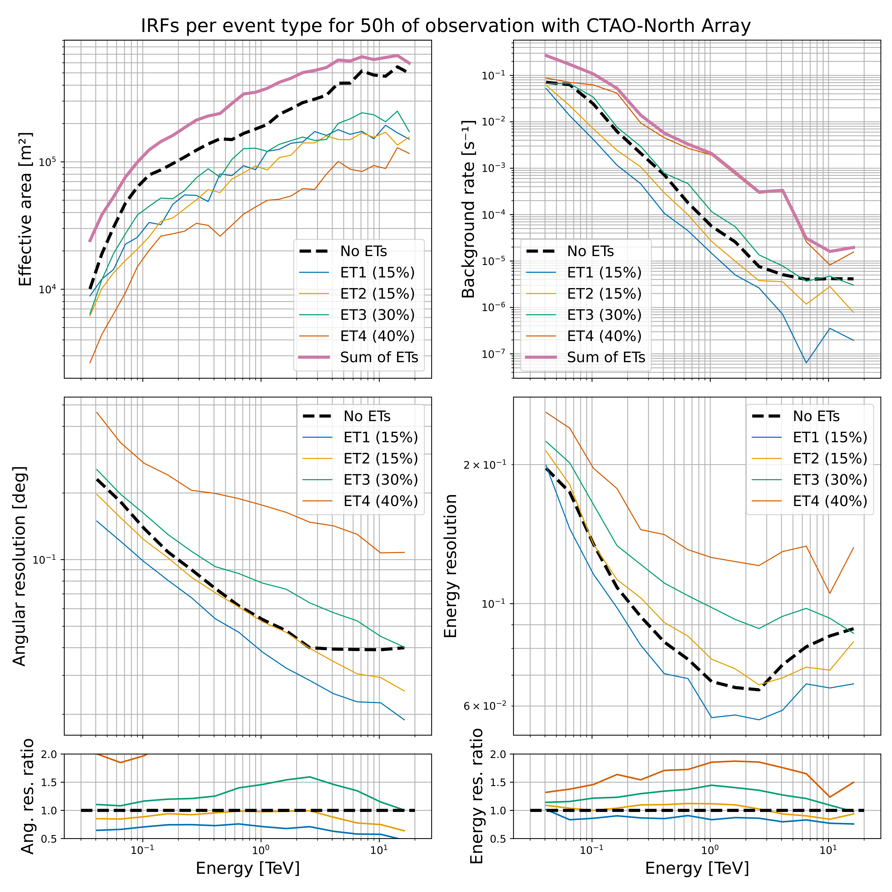
图注：Effective area, background rate, angular resolution and energy resolution for each event type separately and for the standard case without event types, for the CTAO Northern array. They all correspond to point-like IRFs, in which a direction cut optimizing point-source sensitivity has been applied. Effective area and background rate also show the sum of the four event types. Angular and energy resolution also show the ratio of each event type result with respect to the standard case. All of these are for offset angle between 0 and 1 degree.
对应解读：对应“建议重点查看的图表”第2、3、4、5项，以及关键图表导读中关于点扩散函数/containment、有效面积、背景率和能量分辨率的联合解读。
入选理由：这张图同时给出 CTAO 北阵列各 event type 的有效面积、背景率、角分辨率和能量分辨率，并与无 event type 的标准分析比较，是判断性能提升是否来自更窄 PSF、是否牺牲有效面积、是否改变背景和能量响应的核心诊断图。它比单独的灵敏度图更能解释 event-type 分析为何有效。
来源与置信度：\(arxiv_source\)；high；\(arxiv_source\) / article.tex:figure[7]
Fig04
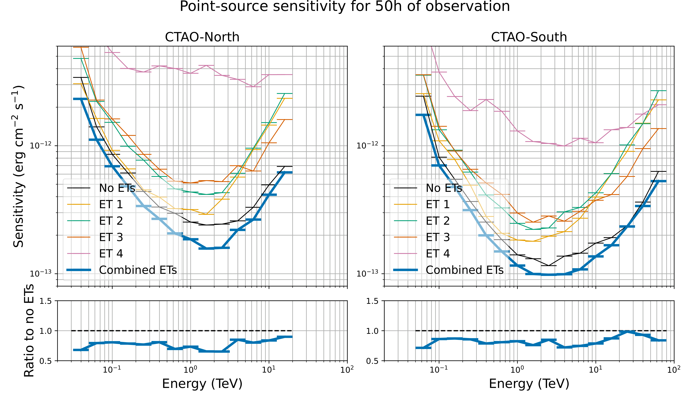
图注：Point-source sensitivity for both arrays at offset 0.5 degrees from the pointing direction. On the top, the sensitivity for each event type separately, for all of them combined and for no event types, for both arrays. On the bottom, the ratio of the combined sensitivity with respect to the sensitivity for no event types. In all panels, lower sensitivity or ratio values indicate better sensitivity. All sensitivities showed here are calculated with the \(\textit{Forward folding methodology}\) in \(\textit{Gammapy}.\) For both arrays the Alpha Configuration is considered.
对应解读：对应“建议重点查看的图表”第6项和关键图表导读中的灵敏度对比图，尤其是标准分析与 event-type 分析的比值曲线。
入选理由：图中直接比较两套阵列在 offset 0.5 度处的点源灵敏度，并在下方面板给出 combined event types 相对 no event types 的比值；这是验证论文声称约 25% 灵敏度提升的最直接证据。
来源与置信度：\(arxiv_source\)；high；\(arxiv_source\) / article.tex:figure[4]
Fig02
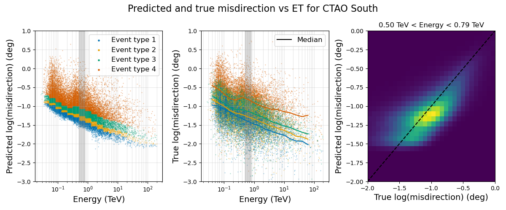
图注：\textit{Left}) Predicted logarithm of the misdirection for gamma-ray events as a function of reconstructed energy. The assigned event type is shown in different colors. \textit{Middle}) True logarithm of the misdirection for gamma-ray events as a function of reconstructed energy. Colors represent the assigned event types. Solid lines indicate the median of the distribution of each event type. \textit{Right}) Predicted vs true logarithm of the misdirection for gamma-ray events with a reconstructed energy between 0.50 and 0.79 TeV, as an example. The gray vertical band in the left and middle plots indicate the energy bin shown in the right plot. All of these plots are limited to a single offset angle bin, from 0 to 1 deg from the center of the FOV.
对应解读：对应“建议重点查看的图表”第1项，以及模型拟合部分第一层事件级质量预测模型的诊断。
入选理由：该图展示神经网络预测的 log misdirection 与真实 log misdirection、重建能量和 event type 分配之间的关系，是判断事件质量分箱是否有物理信息、是否在低能端失效、分箱重叠是否严重的关键图。没有这张图，后续 IRF 分类型和联合似然改进的基础难以评估。
来源与置信度：\(arxiv_source\)；high；\(arxiv_source\) / article.tex:figure[2]
Fig10
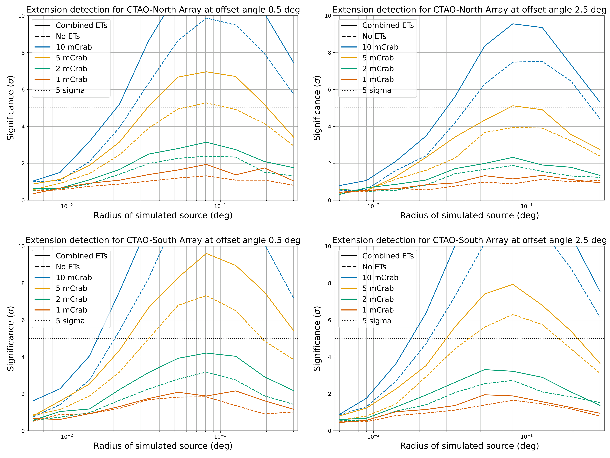
图注：Significance of the detection of the source extension for different radii and intensities of the simulated source. Results for the combination of all four event types (solid lines) and for the standard IRFs without event types (dashed). Each point is the mean significance of 50 repetitions of the simulation and analysis. Repeated at two different offset angles for both arrays.
对应解读：对应“建议重点查看的图表”第7项，以及关键图表导读中关于源扩展检测、空间分辨能力和高层模型拟合表现的部分。
入选理由：该图用模拟扩展源检验 event-type 联合分析与标准 IRF 的差异，直接对应论文所称 25% 到 50% 空间分辨能力提升。它不仅展示 PSF 变窄，还展示这种改进是否转化为源扩展显著性提升。
来源与置信度：\(arxiv_source\)；high；\(arxiv_source\) / article.tex:figure[10]
Fig11
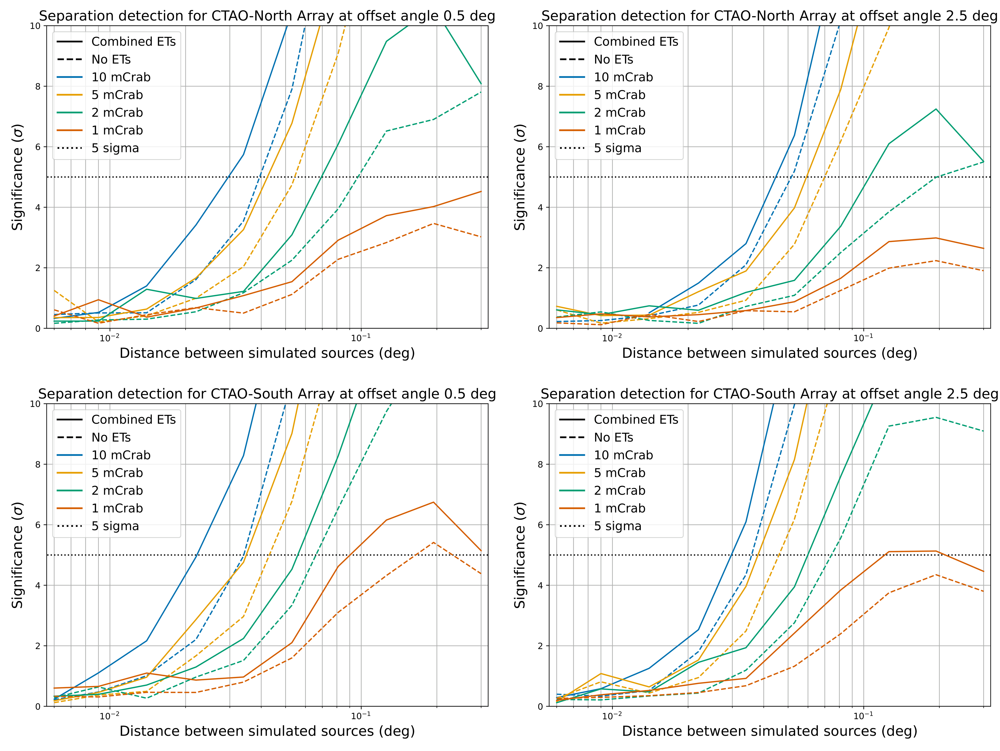
图注：Significance of the detection two separated sources for different separations and intensities of the simulated sources. Results for the combination of all four event types (solid lines) and for the standard IRFs without event types (dashed). Each point is the mean significance of 50 repetitions of the simulation and analysis. Repeated at two different offset angles for both arrays.
对应解读：对应“建议重点查看的图表”第7项中源分离能力诊断，以及详细解读中关于拥挤天区和 Galactic Plane 科学收益的讨论。
入选理由：该图比较两相邻点源在不同分离角和强度下的探测显著性，是检验 event-type 分析在拥挤区域源分辨方面实际收益的关键高层分析结果。它比单纯角分辨率曲线更接近科学用例。
来源与置信度：\(arxiv_source\)；high；\(arxiv_source\) / article.tex:figure[11]
Fig08
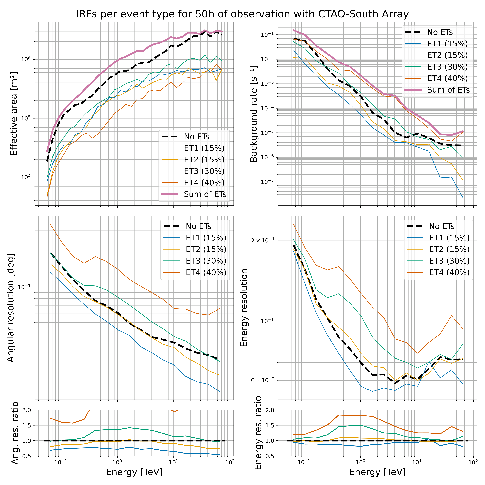
图注：Effective area, background rate, angular resolution and energy resolution for each event type separately and for the standard case without event types, for the CTAO Southern array. They all correspond to point-like IRFs, in which a direction cut optimizing point-source sensitivity has been applied. Effective area and background rate also show the sum of the four event types. Angular and energy resolution also show the ratio of each event type result with respect to the standard case. All of these are for offset angle between 0 and 1 degree.
对应解读：对应“建议重点查看的图表”第2、3、4、5项，是 Fig07 的南阵列对应版本，用于检查性能改进在不同 CTAO 阵列中的一致性。
入选理由：这张图给出 CTAO 南阵列各 event type 的有效面积、背景率、角分辨率和能量分辨率。与 Fig07 配合可以判断结论是否只适用于北阵列，还是在南北阵列中都成立；但由于信息结构与 Fig07 重复，优先级略低。
来源与置信度：\(arxiv_source\)；high；\(arxiv_source\) / article.tex:figure[8]
强相关工作
这篇工作与 Fermi-LAT 的事件类型/事件类别传统直接相关。Fermi-LAT Pass 8 分析把事件按点扩散函数质量、能量重建质量等分组，并提供分类型 IRF；本文相当于把这一路径移植到 CTAO 和 IACT 的模拟高层分析中。建议检索关键词包括 “Fermi-LAT Pass 8 event types PSF”, “CTAO instrument response functions”, “IACT event-wise reconstruction quality”, “Gammapy joint likelihood IRF”。
它也与 CTAO 性能预估和开放数据分析工具链有关。CTA Consortium 的科学书和性能论文通常给出标准灵敏度、角分辨率和能量分辨率，而本文说明这些指标并非只由硬件和传统 cut 决定，分析策略本身也能改变高层性能。可能存在的张力在于：更复杂的 event-type 响应会增加数据产品体积、响应生成成本和系统误差维度，实际收益是否能在真实大气和复杂背景下保持，需要后续验证。
同类方法还包括事件级权重、无硬切的全事件似然、基于机器学习不确定度估计的响应参数化，以及直接把每个事件的方向误差估计进入 unbinned likelihood。本文采用分箱 event type 的好处是兼容现有高层工具和 IRF 格式，但它不是唯一可能路线。
同一事件 / 同类源线索：
- https://arxiv.org/abs/2607.09286
- https://www.cta-observatory.org/
- https://www.cta-observatory.org/science/ctao-performance/
相似工作：
基础理论 / 方法工作：
- https://ui.adsabs.harvard.edu/abs/1983ApJ...272..317L/abstract
- https://ui.adsabs.harvard.edu/abs/1985ICRC....3..445H/abstract
相反观点 / 张力线索：
（未提供）
2. Hybrid Simulations of Proton Acceleration at Oblique High-$β$ Shocks
- 来源：arXiv / astro-ph.HE
- 链接：https://arxiv.org/abs/2607.08835v1
- 作者：Yevhen Kylivnyk, Damiano Caprioli, Luca Orusa
- 评分：novelty 8/10，importance 8/10，relevance 9/10，final 9.35/10
- 推荐理由：Directly relevant to cosmic-ray acceleration and gamma-ray non-detections of galaxy clusters. 3D hybrid simulations of high-beta oblique shocks provide useful microphysical constraints on proton acceleration efficiency and hadronic gamma-ray expectations.
中文题目：高 \(\beta\) 斜激波中质子加速的混合模拟
做了什么：这篇论文用三维混合等离子体模拟研究星系团内介质和星系际介质中高 \(\beta\)、低到中等马赫数、准垂直碰撞无关激波能否有效加速质子。作者把离子作动力学处理、电子作流体处理，重点考察磁场倾角 \(\vartheta=80^\circ\)、声速马赫数 \(M_s\sim3{-}15\)、等离子体 \(\beta\gtrsim15\) 的参数区间。主要结论是：弱激波 \(M_s\lesssim5\) 几乎不能形成显著非热质子尾，宇宙线加速效率 \(\varepsilon_{\rm CR}\lesssim0.1\%\)；强一些的激波 \(M_s\gtrsim10\) 可以产生斜率约 \(q\sim4.0\) 的幂律尾，加速效率可到 \(\varepsilon_{\rm CR}\sim3\%\)。把磁倾角降到约 \(45^\circ\) 会显著提高效率，说明斜率、马赫数和高 \(\beta\) 环境共同控制质子注入。
为什么重要：星系团射电遗迹说明电子在大尺度激波中被加速，但 \(\gamma\) 射线对强子相互作用的长期非探测又限制了质子宇宙线含量。这篇工作直接模拟了最相关的微物理条件：高 \(\beta\)、低 \(M_s\)、斜磁场，而不是把超新星遗迹激波的高效扩散激波加速结果外推到星系团。它给出了一个自然解释：射电可亮，但质子加速可弱，尤其在准垂直弱激波中。
理论 / 观测 / 仪器方法价值：对理论而言，它把质子注入效率从自由参数推进到依赖 \(M_s\)、\(\beta\)、\(\vartheta\) 的微物理结果；对观测而言，它帮助解释射电遗迹偏振所暗示的斜激波与星系团 \(\gamma\) 射线非探测之间的张力；对数值方法而言，它展示了三维混合模拟在高 \(\beta\) 星系团激波问题上的必要性，尤其是二维几何可能低估或扭曲斜激波中的场线回返、粒子漂移和注入路径。
为什么应该关注：如果你关心星系团宇宙线、射电遗迹、费米 \(\gamma\) 射线上限或大尺度结构激波，这篇文章给的是一个很实用的判据：不是所有能加速电子的激波都能有效加速质子。它还提醒我们，在把射电亮度反推质子能量密度、非热压力或中微子/\(\gamma\) 射线预言时，磁倾角和高 \(\beta\) 注入物理可能比传统的单一马赫数标度更关键。
展开详细解读：文章讲解、背景、理论、重点章节、图表与相关工作
文章详细讲解
科学问题：星系团并合和大尺度结构形成会产生广泛的碰撞无关激波，典型环境是热压远大于磁压的高 \(\beta\) 等离子体，且许多可观测射电遗迹显示较高线偏振，通常指向有序磁场和斜向或准垂直激波几何。问题在于，电子加速有射电同步辐射证据，而质子若同样被高效加速，就应通过 \(pp\) 碰撞产生 \(\pi^0\) 衰变 \(\gamma\) 射线；但星系团 \(\gamma\) 射线长期未探测到强信号。这迫使我们重新问一个微物理问题：在高 \(\beta\)、低 \(M_s\)、斜磁场激波中，质子注入到扩散激波加速的门槛到底有多高。
作者怎么做：论文采用三维混合模拟，离子作为粒子动力学处理，电子作为无质量或流体背景响应处理。这种方法牺牲电子尺度细节，但能在可承受代价下解析离子陀螺尺度、激波反射、离子回流、激波面波动和非热尾形成。参数选择围绕星系团环境：声速马赫数 \(M_s\sim3{-}15\)，高等离子体 \(\beta\gtrsim15\)，主样本为准垂直磁倾角 \(\vartheta=80^\circ\)，并用较小倾角如 \(\vartheta\sim45^\circ\) 作对照，以分离马赫数和磁几何的作用。
关键结果：在 \(M_s\lesssim5\) 的弱准垂直高 \(\beta\) 激波中，作者没有看到强的非热质子幂律尾，得到 \(\varepsilon_{\rm CR}\lesssim0.1\%\) 的低效率。这与星系团典型内部并合激波的马赫数范围相符，因此可自然压低强子 \(\gamma\) 射线。相反，在 \(M_s\gtrsim10\) 的更强激波中，谱尾变得清楚，近似幂律斜率 \(q\sim4.0\)，效率达到 \(\varepsilon_{\rm CR}\sim3\%\)。这说明高 \(\beta\) 准垂直环境并非绝对不能加速质子，而是存在较强的注入门槛。
更重要的是磁倾角结果：当 \(\vartheta\) 从接近准垂直的 \(80^\circ\) 降到约 \(45^\circ\) 时，质子加速效率明显提高。这符合扩散激波加速的直觉：准平行或中等倾角允许粒子沿磁场更容易返回上游，完成多次穿越；准垂直激波虽可通过激波漂移加速提升粒子能量，但若缺少足够散射，粒子很容易被下游对流带走，难以进入长程循环。对射电遗迹来说，这很关键，因为电子加速在斜激波中可能仍可发生，而质子加速未必同样高效。
局限和下一步：混合模拟没有自洽解析电子注入，因此不能直接解释射电电子的完整能谱；有限盒子、有限运行时间和有限质量/尺度分离也会限制最高能量和长时间饱和效率。星系团真实激波还包含湍流、预存宇宙线、磁场曲率、多尺度密度结构和非平面几何。下一步需要把这些微物理效率嵌入宇宙学 MHD 模拟或射电遗迹建模，并与 \(\gamma\) 射线上限、偏振、谱指数和激波马赫数联合约束。
关键结果是怎么做出来的
本文最重要的证据链来自一组控制参数明确的三维混合模拟，而不是观测样本统计。样本维度主要包括声速马赫数 \(M_s\sim3{-}15\)、高等离子体 \(\beta\gtrsim15\) 和磁倾角 \(\vartheta\)，其中核心组是 \(\vartheta=80^\circ\) 的准垂直激波。读者应把每个模拟看成一次受控实验：上游热离子分布、磁场方向和激波速度给定后，观察离子相空间、能谱和能量通量随时间是否发展出稳定非热分量。
对弱激波结论，关键不是某个单独粒子能量很高，而是总体能谱是否在热峰之外形成可归因于扩散激波加速的持续幂律尾。作者报告 \(M_s\lesssim5\) 时非热质子群体很弱，宇宙线加速效率 \(\varepsilon_{\rm CR}\lesssim0.1\%\)。这里的效率应理解为下游或激波附近非热离子能量相对于入射动能通量的比例，最需要检查的是能谱热部分拟合、非热积分下限和时间演化是否稳定。
对强激波结论，支撑点是 \(M_s\gtrsim10\) 时出现清楚的幂律尾，谱斜率约 \(q\sim4.0\)，效率约 \(\varepsilon_{\rm CR}\sim3\%\)。在标准强激波测试粒子极限中，接近 \(q=4\) 的动量谱常被视为有效循环加速的标志；但在高 \(\beta\) 和准垂直几何下，这一结果还要结合相空间图和粒子返回上游的证据来读。若论文中有不同时间快照，读者应看幂律尾是否随时间向高能延伸，而不是仅由瞬态反射离子造成。
磁倾角对照是模型比较的核心。把 \(\vartheta\) 从 \(80^\circ\) 降到 \(\sim45^\circ\) 后，效率显著升高，说明低效率不是单纯由高 \(\beta\) 或数值分辨率导致，而是与粒子沿磁场返回上游的几何概率相关。这里最有说服力的图应是不同 \(\vartheta\) 下的能谱、效率随时间曲线，以及可能的上游波动功率或离子相空间对比。
统计显著性在这类模拟论文中通常不是观测意义上的 \(p\) 值，而是参数扫描、收敛测试和物理诊断的一致性。稳健性应从网格分辨率、每格粒子数、盒子大小、模拟时长、边界条件和非热能量积分阈值等方面判断。主要系统误差包括电子流体近似、忽略电子动力学反馈、有限横向尺度导致的波模选择偏差，以及高能尾还未达到长时间渐近状态。
展开背景、理论、公式、模型、章节和图表导读
背景知识
研究对象是星系团内介质 \({\rm ICM}\) 和星系际介质 \({\rm IGM}\) 中的大尺度碰撞无关激波。这些激波不是靠库仑碰撞耗散，而是通过电磁场、等离子体波和粒子集体效应把有序流动能转化为热能和非热粒子能量。典型星系团温度为 \({\rm keV}\) 量级，磁场为 \(\mu{\rm G}\) 或更低，因而热压相对磁压很高，即 \(\beta\gg1\)。
历史问题来自两个看似矛盾的事实。第一，许多并合星系团有射电遗迹，形态呈弧状或片状，谱指数和偏振常被解释为激波加速电子后的同步辐射。第二，如果同一激波也以类似效率加速质子，质子寿命长、会在星系团中积累，并通过 \(pp\) 碰撞产生可观 \(\gamma\) 射线，但 \(Fermi\)-LAT 等观测并未给出相应强探测。这就是所谓射电遗迹和强子 \(\gamma\) 射线约束之间的张力。
过去常把扩散激波加速的简单图像从超新星遗迹推广到星系团激波，但这可能误导。超新星遗迹激波通常马赫数很高、磁场放大强、局部几何可近似准平行或高度湍动；星系团激波则往往 \(M_s\sim2{-}4\)，\(\beta\) 高，且观测偏振暗示磁场较有序。注入问题在低马赫数下尤其严苛：粒子必须先从热池进入能反复穿越激波的超热区，才能由扩散激波加速形成幂律。
现在值得重新看，是因为观测和模拟都进入了更精细阶段。射电阵列给出更好的遗迹谱指数、偏振和空间分辨；\(\gamma\) 射线上限越来越严格；宇宙学模拟需要可用的亚网格宇宙线注入效率；而三维混合和 PIC 模拟开始能覆盖更接近星系团的 \(\beta\)、\(M_s\) 和 \(\vartheta\) 区间。本文正是在这个交叉点上给出微物理标定。
该领域常见误区包括：把射电电子加速效率直接等同于质子加速效率；只用马赫数判断宇宙线产额而忽略磁倾角；把 \(q\sim4\) 的谱斜率当成所有强激波必然结果；以及认为 \(\gamma\) 射线非探测必然否定所有激波加速。实际上，电子和质子的注入通道不同，准垂直激波可对电子友好而对质子不友好，高 \(\beta\) 环境也会改变波粒相互作用和反射条件。
基础理论 / 方法脉络
基本物理图像是：上游等离子体以超声速流入激波，跨越激波后被压缩、加热并减速。若粒子能被磁湍流散射并多次穿越激波，它每次循环可从上下游速度差中获得一阶费米加速能量增益，形成非热幂律。关键难点是注入，即热离子如何先获得足够大的速度和合适的俯仰角，避免被下游流体一次性带走。
高 \(\beta\) 表示热压相对磁压很大，常用定义是 \(\beta=8\pi P_{\rm th}/B^2\)。在高 \(\beta\) 中，声速和阿尔芬速度的相对大小、磁场对离子轨道的约束、激波压缩对磁场的放大方式都不同于低 \(\beta\) 等离子体。星系团激波的 \(M_s\) 往往不高，因此压缩比和速度跃迁有限，测试粒子理论给出的幂律可能很陡，且注入效率对微观反射过程非常敏感。
磁倾角 \(\vartheta\) 是上游磁场与激波法线的夹角。准平行激波中，粒子沿磁场较容易回到上游，能激发上游波并建立扩散循环；准垂直激波中，粒子沿场线主要被扫向下游，除非存在强横向扩散、激波面起伏或漂移加速触发的预加速。本文选择 \(\vartheta=80^\circ\) 正是为了测试射电遗迹常见的斜场/准垂直几何是否仍能有效加速质子。
混合模拟的核心假设是离子动力学最重要，而电子尺度可用流体闭合近似表示。离子粒子在自洽电磁场中运动，电子提供电荷中和、压力梯度和电流响应。这样能解析离子陀螺半径、反射粒子和离子驱动波，但不能直接模拟电子注入和电子尺度不稳定性。对本文结论来说，这种取舍合理，因为目标是质子加速效率。
常见退化和系统误差包括：\(M_s\) 与 \(\vartheta\) 都会影响效率，若只改变一个量可能误判另一个量的作用；\(\beta\) 会影响阿尔芬马赫数 \(M_A\)，从而改变波激发；有限模拟盒子可能限制最长波长和最高能量；非热尾的积分阈值会影响 \(\varepsilon_{\rm CR}\)。因此读者应同时查看能谱、相空间、能量通量和收敛测试，而不是只看最终效率数字。
公式与推导
第一步是定义高 \(\beta\) 环境。等离子体热压与磁压之比为
其中 \(n\) 是数密度，\(T\) 是温度，\(B\) 是磁场强度。\(\beta\gg1\) 表示热运动主导压力支撑，但离子陀螺运动和波粒相互作用仍由磁场控制。
第二步是区分声速马赫数和阿尔芬马赫数。声速和阿尔芬速度可写为
于是
其中 \(u_1\) 是上游流速，\(m_i\) 是离子质量，\(\gamma_g\) 是气体绝热指数。高 \(\beta\) 下即使 \(M_s\) 不高，\(M_A\) 也可较大，这会影响磁扰动生成。
第三步是激波跳跃条件给出压缩比。理想气体流体极限下，压缩比近似为
其中 \(\rho_1\) 和 \(\rho_2\) 是上下游密度。低 \(M_s\) 时 \(r\) 明显小于强激波极限，导致一阶费米加速谱更陡、能量增益更弱。
第四步是测试粒子扩散激波加速的动量谱。若粒子在上下游各向同性扩散，稳态分布满足
其中 \(p\) 是粒子动量，\(f(p)\) 是相空间分布函数。强非相对论激波在 \(r\to4\) 时给出 \(q\to4\)，这正是本文强激波尾部斜率 \(q\sim4.0\) 的物理参照。
第五步是磁倾角控制粒子返回概率。上游磁场与激波法线夹角为 \(\vartheta\)，法向流速投影与沿场运动关系可用近似条件表示为
其中 \(v_{\parallel}\) 是粒子沿磁场速度，\(u_2\) 是下游速度。\(\vartheta\) 越接近 \(90^\circ\)，\(\cos\vartheta\) 越小，粒子沿场线返回激波或上游越困难，注入效率自然下降。
第六步是激波漂移加速的能量增益图像。准垂直激波中粒子在梯度磁场中漂移，电场 \(\mathbf{E}=-\mathbf{u}\times\mathbf{B}/c\) 可做功，近似能量变化为
其中 \(q_i\) 是离子电荷，\(d\mathbf{l}\) 是漂移位移元。该机制能预加速粒子，但若缺少散射使其多次返回，不能保证形成长幂律尾。
第七步是宇宙线加速效率的诊断。可把非热粒子能量通量与入射动能通量比较：
其中 \(F_{\rm CR}\) 是由超过注入动量 \(p_{\rm inj}\) 的粒子贡献的能量通量。本文报告弱准垂直激波 \(\varepsilon_{\rm CR}\lesssim10^{-3}\)，强激波可达 \(\sim3\times10^{-2}\)。
第八步是从模拟能谱估计非热能量。若动量分布为 \(f(p)\)，非热能量密度可写成
其中 \(E(p)\) 是单粒子动能，\(p_{\rm max}\) 是模拟时刻达到的最高动量。这个公式说明 \(p_{\rm inj}\) 的选取会直接影响效率，因此应检查论文对热峰和非热尾分界的稳健性。
第九步是连接 \(\gamma\) 射线非探测。若质子宇宙线在星系团中积累，强子 \(\gamma\) 射线发射率近似随靶气体密度和宇宙线密度相乘：
其中 \(N_p(E_p)\) 是质子能谱，\(\sigma_{pp}\) 是非弹性 \(pp\) 截面。降低弱激波中的 \(\varepsilon_{\rm CR}\) 会直接压低预期 \(\gamma\) 射线通量，从而缓和射电遗迹与 \(\gamma\) 射线上限的张力。
模型拟合 / 应用方法
这篇论文本质上是数值实验而非传统观测拟合，但仍有一套“拟合量”和“诊断量”。最直接的拟合是对离子动量谱热峰之外的尾部作幂律拟合，估计 \(q\)，并通过积分非热部分估计 \(\varepsilon_{\rm CR}\)。这里需要先确定热 Maxwellian 或下游热分布，再定义超热/非热分界 \(p_{\rm inj}\)，因此 \(q\) 和效率都对拟合区间敏感。
参数估计的核心不是贝叶斯后验，而是参数扫描下的物理一致性。作者改变 \(M_s\) 和 \(\vartheta\)，比较能谱、效率和相空间结构是否系统变化。若 \(M_s\lesssim5\) 一贯无强非热尾，而 \(M_s\gtrsim10\) 一贯出现 \(q\sim4\) 的尾部，则说明阈值行为具有物理意义。若 \(\vartheta\sim45^\circ\) 的效率显著高于 \(80^\circ\)，则可把磁几何识别为关键控制参数。
残差诊断在模拟论文中可转化为“谱形偏离”。读者应看热分布拟合是否留下系统性高能超额，幂律区间是否足够宽，最高能端是否受盒子大小和运行时间截断控制，以及不同时间快照的谱尾是否平移到更高能而保持相似斜率。若谱尾只在狭窄动量范围出现，或随时间不延伸，就不应过度解释为成熟扩散激波加速。
主要退化关系包括 \(M_s\)、\(M_A\)、\(\beta\) 和 \(\vartheta\) 的耦合。固定 \(\beta\) 改变 \(M_s\) 会同时改变流速、压缩比和波激发能力；固定 \(M_s\) 改变 \(\vartheta\) 会改变粒子返回概率和漂移加速效率；改变 \(\beta\) 又会改变 \(M_A\) 与磁扰动幅度。实际应用到星系团时，观测马赫数、投影几何和磁场方向都有不确定性，所以不应把单一效率数值机械套用。
模型可能失败的场景包括存在预存宇宙线、强上游湍流或多尺度磁场弯曲时。预存宇宙线可绕过热注入门槛，被弱激波再加速；湍流可增强跨场扩散，使准垂直激波不再完全抑制质子返回；真实遗迹激波面也可能由多个局部 \(\vartheta\) 混合而成。因此本文结果最适合作为“无强预存非热种子、局部均匀斜磁场、高 \(\beta\) 热等离子体”的基准微物理效率。
重点章节 / 结果段落怎么读
数据/数值设置部分应优先阅读。重点看三维混合模拟如何初始化激波、上游 \(\beta\)、\(M_s\)、\(\vartheta\)、网格尺度、每格粒子数、边界条件和运行时间。因为结论依赖非热尾，数值盒子是否足以容纳离子波和回流区非常关键。
方法和诊断量部分要看作者如何定义宇宙线效率 \(\varepsilon_{\rm CR}\)、如何从能谱分离热粒子和非热粒子、如何拟合幂律斜率 \(q\)。如果非热积分下限或拟合范围改变，弱激波的 \(0.1\%\) 上限和强激波的 \(3\%\) 效率可能会有系统变化。
主结果部分应按马赫数序列阅读。先看 \(M_s\lesssim5\) 的准垂直激波是否只有热化和短暂反射，没有持续幂律尾；再看 \(M_s\gtrsim10\) 的相空间和能谱如何显示粒子循环加速。这样能理解阈值不是人为分类，而是注入物理随激波强度变化。
磁倾角对照部分是论文的物理亮点。读者应比较 \(\vartheta=80^\circ\) 与 \(\vartheta\sim45^\circ\) 的效率、谱形和上游扰动。若中等倾角明显更高效，说明射电遗迹中由偏振推断出的斜激波几何对质子 \(\gamma\) 射线预言有直接影响。
讨论和稳健性部分要关注作者如何连接星系团 \(\gamma\) 射线非探测、射电遗迹电子加速和宇宙学模拟中的亚网格处方。附录或收敛测试若存在，应检查分辨率、盒子大小、运行时间和粒子数对 \(\varepsilon_{\rm CR}\) 的影响。
建议重点查看的图表
-
参数扫描总览图：查看 \(M_s\)、\(\beta\)、\(\vartheta\) 的模拟矩阵，确认论文结论覆盖的是高 \(\beta\)、准垂直、星系团相关区间，而不是外推。
-
离子能谱图：重点看热峰之外是否有连续幂律尾，弱激波与强激波在高能端的差异，以及拟合斜率 \(q\sim4.0\) 的动量范围是否足够宽。
-
宇宙线效率随时间图：检查 \(\varepsilon_{\rm CR}\) 是否达到准稳态，弱激波的 \(\lesssim0.1\%\) 是否只是早期未发展，强激波的 \(\sim3\%\) 是否持续增长或已饱和。
-
相空间图：看 \(x-p_x\) 或类似相空间中是否存在反射离子、回流束和上游扩散区。真正的加速应表现为粒子多次穿越，而不只是一次性激波漂移反射。
-
磁场和密度结构图：检查激波面是否产生波纹、上游是否有离子驱动波，横向三维结构是否影响准垂直粒子的返回概率。
-
磁倾角对比图：同一 \(M_s\) 下比较 \(\vartheta=80^\circ\) 和 \(\vartheta\sim45^\circ\) 的谱和效率，这是判断磁几何是否主导质子注入的关键。
-
收敛或稳健性表：若有，查看不同分辨率、盒子大小、粒子数和积分阈值对 \(q\) 与 \(\varepsilon_{\rm CR}\) 的影响。
关键图表逐图导读
图 1：通常应是模拟设置或参数空间图。横轴可能为激波法线方向或马赫数，纵轴可能为密度、磁场或不同运行编号。读图时要确认上游磁场与激波法线夹角 \(\vartheta\) 的定义，以及 \(M_s\) 和 \(\beta\) 是否对应星系团环境。陷阱是把单个运行结果误认为覆盖所有磁几何。
图 2：离子动量或能量谱图最关键。横轴一般是归一化动量或能量，纵轴是粒子分布函数或能量加权分布；热 Maxwellian 可作为低能参考线，幂律线标出 \(q\)。要看弱激波是否缺少高能连续尾，强激波是否出现接近 \(q\sim4.0\) 的尾。陷阱是高能端统计噪声可能看起来像尾部，需结合时间演化判断。
图 3：\(\varepsilon_{\rm CR}\) 随 \(M_s\) 或时间变化的图应支撑主要结论。若横轴是 \(M_s\)，应看到 \(M_s\lesssim5\) 位于 \(10^{-3}\) 以下，而 \(M_s\gtrsim10\) 上升到百分之几。若横轴是时间，应检查效率是否持续上升或趋于平台。陷阱是不同运行的最高能量受模拟时长不同影响。
图 4：相空间图应显示粒子注入机制。横轴通常为空间坐标，纵轴为速度或动量分量，颜色为相空间密度。强激波若有扩散激波加速，应能看到上游回流和宽高能粒子分布；弱准垂直激波可能只有窄的反射结构。陷阱是相空间局部高能点不等于全局高效率。
图 5：磁倾角对比图是读者应重点核查的物理图。横轴可能为动量或时间，颜色/线型区分 \(\vartheta=80^\circ\) 与 \(\vartheta\sim45^\circ\)。主要结论应是较小倾角下非热尾和 \(\varepsilon_{\rm CR}\) 显著增强。读图时要确认其他参数是否固定，否则倾角效应可能与 \(M_s\) 或 \(\beta\) 混淆。
图 6：若有二维/三维场结构图，应看磁扰动、密度压缩和激波面起伏。横纵轴为空间坐标，颜色为 \(B\)、\(\delta B/B\) 或密度。三维结构能影响跨场扩散和粒子返回概率。陷阱是二维切片可能隐藏三维连通性，因此要结合体平均谱和局部结构一起读。
论文原图 / 可嵌入图片
Fig02
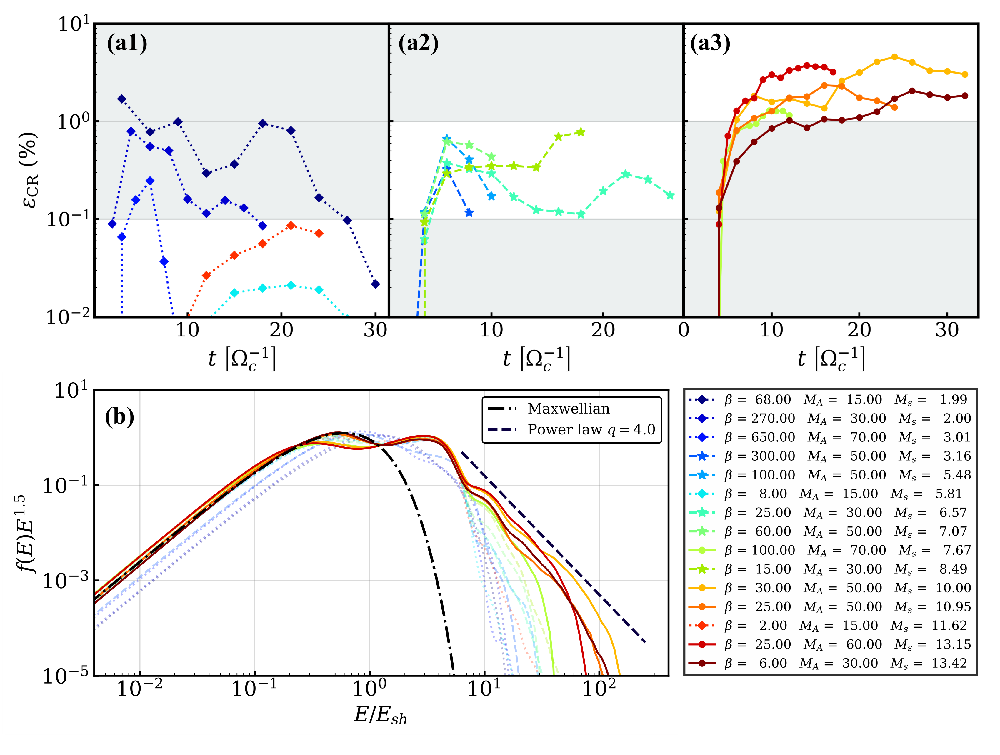
图注：\(\textbf{(a)}\) CR acceleration efficiency, $\varepsilon_{\rm CR}$, as a function of time. \(\textbf{(a1)}\) correspond to highly inefficient shocks with $\varepsilon_{\rm CR,\,final} < 0.1\%$, \(\textbf{(a2)}\) to intermediate efficiencies with $\varepsilon_{\rm CR,\,final} > 0.1\%$, and \(\textbf{(a3)}\) to very efficient shocks with $\varepsilon_{\rm CR,\,final} > 1\%$. \(\textbf{(b)}\) Energy spectra at the final timestep for selected runs. For highly efficient cases, Maxwellian and power-law fits of the form $f(E)\propto E^{-q}$ are shown (black lines), where $q$ is the spectral slope. Shocks with higher $M_s$ develop a prominent nonthermal tail, while low-$M_s$ shocks remain nearly thermal. All the simulations reported in this plot are performed at $\vartheta = 80^\circ$.
对应解读：对应“建议重点查看的图表”中的离子能谱图与宇宙线效率随时间图，也对应“关键图表逐图导读”图2和图3关于非热尾、幂律斜率 q、效率时间演化的解读。
入选理由：这张图同时给出 \(\varepsilon_{\rm CR}\) 随时间演化和最终能谱，是支撑论文核心结论最直接的证据：弱 \(M_s\) 准垂直激波几乎保持热谱且效率低于 \(0.1\\%\)，强激波出现明显非热尾，并带有 Maxwellian 与幂律拟合，可直接检查 \(q\) 的拟合区间和强弱激波高能端差异。
来源与置信度：\(arxiv_source\)；high；\(arxiv_source\) / main.tex:figure[2]
Fig03
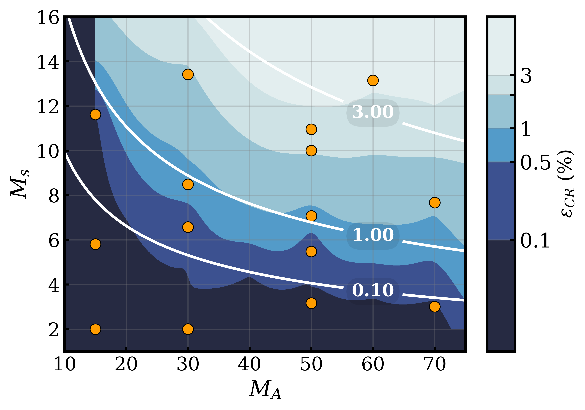
图注：Asymptotic CR acceleration efficiency, $\varepsilon_{\rm CR}$, as a function of the Alfv\'enic and sonic Mach numbers ($M_A$ and $M_s$), for $\vartheta = 80^\circ$. Points denote individual simulation runs. Perpendicular shocks with low $M_s$ remain inefficient throughout the evolution. White lines indicate empirical fits for different values of $\varepsilon_{\rm CR}$ (Equation \ref{eq:fit}).
对应解读：对应“参数扫描总览图”和“宇宙线效率随 \(M_s\) 或时间变化”的图表建议，也对应模型拟合段落中关于 \(M_s\)、\(M_A\)、\(\beta\) 耦合及经验效率拟合的讨论。
入选理由：该图把渐近 \(\varepsilon_{\rm CR}\) 放在 \(M_A\) 与 \(M_s\) 参数空间中，并标出经验拟合等效率线，最适合验证论文是否真的在高 \(\beta\)、\(\vartheta=80^\circ\) 的参数扫描中得到低马赫数低效率和高马赫数效率上升的系统趋势。
来源与置信度：\(arxiv_source\)；high；\(arxiv_source\) / main.tex:figure[3]
Fig04
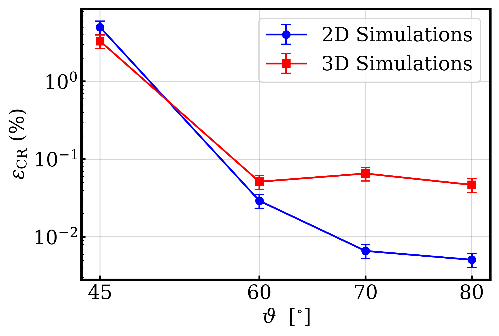
图注：Asymptotic acceleration efficiency, $\varepsilon_{\rm CR}$, as a function of shock obliquity, $\vartheta$. The final times are $t_{\rm last} = [160.0,\,128.0,\,128.0,\,128.0]\,\Omega_{c}^{-1}$ for the 2D runs and $[64.0,\,36.0,\,18.0,\,18.0,\,18.0]\,\Omega_{c}^{-1}$ for the 3D runs, ordered by increasing $\vartheta$. All runs correspond to shocks with $\beta = 120$, $M_A = 30$, and $M_s = 3$. At large obliquities, both configurations are inefficient (especially in 2D) and converge to typical quasi-parallel values of $\varepsilon_{\rm CR}\simeq 10\%$ for $\vartheta\lesssim 45^\circ$.
对应解读：对应“磁倾角对比图”建议和关键图表导读中关于 \(\vartheta=80^\circ\) 与 \(\vartheta\sim45^\circ\) 加速效率差异的部分。
入选理由：这张图直接展示 \(\varepsilon_{\rm CR}\) 随激波磁倾角 \(\vartheta\) 的变化，并区分 2D 与 3D 运行，是判断磁几何是否主导质子注入和解释准垂直激波低效率的关键图。它比单独能谱更能支撑“减小倾角会显著提高效率”的物理结论。
来源与置信度：\(arxiv_source\)；high；\(arxiv_source\) / main.tex:figure[4]
Fig01
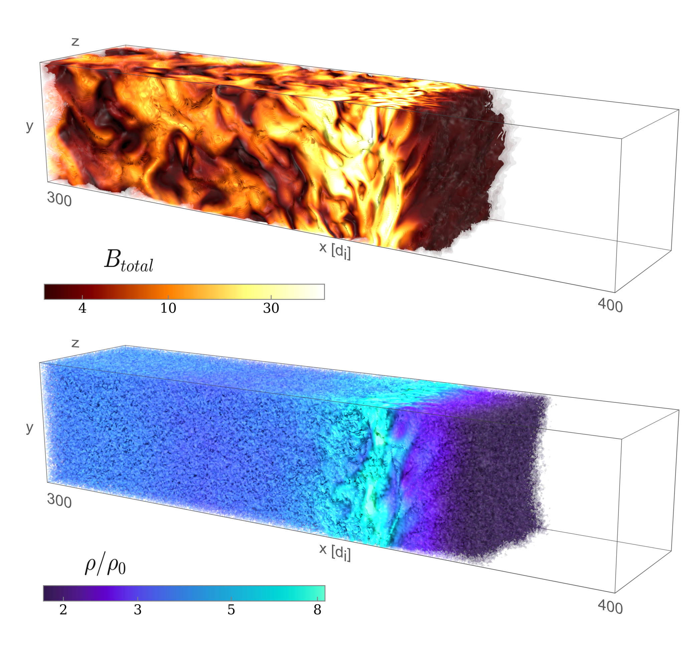
图注：3D rendering of total magnetic field $B_{total}$ and density (top and bottom panel, respectively) for Run 12 in Table \(\ref{tab:params}.\)
对应解读：对应“磁场和密度结构图”建议，以及关键图表导读中关于三维磁场、密度压缩、激波面结构对粒子返回概率影响的部分。
入选理由：该图显示 Run 12 的三维总磁场和密度结构，可用于检查模拟中激波面、磁扰动和三维横向结构是否存在。虽然它不直接给出能谱或效率，但能为准垂直激波中粒子散射和返回概率的物理解释提供结构背景。
来源与置信度：\(arxiv_source\)；high；\(arxiv_source\) / main.tex:figure[1]
强相关工作
这篇工作与星系团射电遗迹和 \(\gamma\) 射线非探测文献直接相连。相似观测问题包括 \(Fermi\)-LAT 对星系团 \(\gamma\) 射线的上限、Coma 等近邻星系团的宇宙线限制，以及 Sausage relic、Toothbrush relic 等射电遗迹的谱指数和偏振解释。建议检索关键词：\(Fermi\) galaxy clusters cosmic rays gamma-ray limits、radio relic polarization oblique shocks、ICM shocks high beta proton acceleration。
基础理论上，本文继承扩散激波加速、激波漂移加速和碰撞无关激波注入问题，但强调星系团参数区间不能简单套用超新星遗迹激波结果。相反观点或张力主要来自两类模型：一类认为星系团激波可较高效地产生质子宇宙线并带来可观 \(\gamma\) 射线；另一类认为射电遗迹电子可能主要来自化石电子再加速，从而无需高热电子注入效率。建议检索关键词：diffusive shock acceleration injection obliquity、hybrid simulations quasi-perpendicular shocks、fossil electron reacceleration radio relics、Pinzke Pfrommer cluster gamma rays。
同一事件 / 同类源线索：
相似工作：
基础理论 / 方法工作：
- https://ui.adsabs.harvard.edu/abs/1987PhR...154....1B/abstract
- https://ui.adsabs.harvard.edu/abs/1983RPPh...46..973D/abstract
相反观点 / 张力线索：
3. In the Eye of the Storm: The Third Giant X-ray Outburst of the Extreme Changing-look AGN IC 3599
- 来源：arXiv / astro-ph.HE
- 链接：https://arxiv.org/abs/2607.09036v1
- 作者：D. Grupe, S. Komossa, W. Zheng, A. V. Filippenko, T. G. Brink, N. Schartel, J. Wang, V. Oknyansky
- 评分：novelty 8/10，importance 8/10，relevance 8/10，final 9.00/10
- 推荐理由：报告IC 3599第三次巨大软X射线爆发及快速多波段跟进，含候选QPO和强冠状线响应，对极端吸积、changing-look AGN和X射线瞬变具有清楚观测价值。
中文题目：风暴眼中：极端变脸活动星系核 IC 3599 的第三次巨型 X 射线爆发
做了什么：这篇论文报告了变脸活动星系核 IC 3599 的第三次巨型 X 射线爆发：继 1990 年和 2010 年两次偶然发现的高态之后，作者通过长期 Swift 监测在爆发进行中捕捉到 2020 年代的新高态，并在数日至数周内触发了 Swift、XMM-Newton 和光学光谱后随观测。核心结果是：X 射线增亮超过 \(100\) 倍，谱极软，\(2.5\,\mathrm{keV}\) 以上几乎无光子；XMM-Newton 短时标光变呈现类似准周期振荡的结构；光学高态谱中出现或显著增强了多条高电离冕线。作者认为，严格固定复发周期的模型，如某些重复潮汐剥离或伴星/次级黑洞周期性撞盘情景，被新的非等间隔复发排除或强烈削弱；而受局部盘条件调制的辐射压不稳定仍能自然解释十年量级、超软、巨幅、可重复的爆发。
为什么重要：IC 3599 不是普通的变脸 AGN：它在几十年内反复出现巨型、超软 X 射线爆发，并伴随强烈的光学高电离线响应。这使它成为少数能在同一超大质量黑洞系统中重复观察吸积盘极端态转换的对象。相比一次性潮汐瓦解事件，重复爆发让人可以检验触发时标、盘恢复、辐射响应和线区回响，而不是只对单次偶发事件做事后解释。
理论 / 观测 / 仪器方法价值：这项工作的价值在于把 IC 3599 从“历史上两次奇怪爆发的源”推进为“可监测、可触发、多波段联动的吸积物理实验室”。观测上，它提供了超软 X 射线谱、小时级候选 \(\mathrm{QPO}\)、高电离冕线响应和长期复发时标的联合约束；理论上，它把固定周期模型与非固定触发的辐射压不稳定模型区分开；方法上，它展示了长期稀疏监测如何在爆发早期触发高价值的 XMM-Newton 和光谱后随。
为什么应该关注：如果你关心 AGN 变脸、近爱丁顿吸积盘、不稳定性、重复 TDE 候选体或低质量超大质量黑洞的快速时变，IC 3599 是一个绕不开的源。它同时考验了盘不稳定、潮汐剥离、双黑洞撞盘和线区回响模型；它的超软谱和候选 \(\mathrm{QPO}\) 又把问题推到内盘尺度。关注这篇文章的原因不是它又发现了一次亮变，而是它给出了第三个时间锚点，使很多原本“都能解释两次爆发”的模型开始分出高下。
展开详细解读：文章讲解、背景、理论、重点章节、图表与相关工作
文章详细讲解
科学问题：IC 3599 的根本问题是，一个低红移、长期存在的 AGN 为什么会在几十年内反复出现振幅超过 \(100\) 的超软 X 射线爆发，并且每次爆发都能重塑其光学发射线谱。1990 年 ROSAT 发现的高态、2010 年左右再次出现的高态，已经让它不同于普通 Seyfert 变源和典型一次性潮汐瓦解事件。第三次爆发的意义在于，它不只是增加一个观测点，而是提供了复发间隔、爆发早期谱形、短时标变率和线区响应的同步约束。
作者怎么做：论文基于对 IC 3599 的长期 Swift 监测，在第三次爆发尚在进行时识别出 X 射线高态，并迅速触发多波段后随。X 射线方面，Swift 给出长期光变和爆发期间的低分辨率谱，XMM-Newton 则提供更高信噪比的短时标光变和谱信息。光学方面，作者比较高态与低态的光谱，重点检查高电离冕线、Balmer 线和窄线区响应。由于前两次爆发主要是事后从巡天或偶然观测中恢复，这一次的关键进步是“在爆发现场”获得了密集观测。
关键结果：第三次爆发的 X 射线增亮超过 \(100\) 倍，谱非常软，几乎没有 \(>2.5\,\mathrm{keV}\) 光子，这说明主导辐射不是常见硬 X 射线日冕幂律，而更接近热盘或强软超量状态。XMM-Newton 光变显示出貌似振荡的小时级结构，作者谨慎称其为候选准周期振荡，因为单次观测长度有限、红噪声背景必须认真处理。光学高态光谱中，多条冕线显著增强或从低态中“出现”，表明高能连续谱不仅照亮了内盘，也对更外层的高电离气体产生了快速而强的响应。
物理解读：新的第三次爆发破坏了要求严格固定时间间隔的复发模型。若两次间隔不能用同一个周期自然解释，某些重复潮汐剥离、恒星绕近心点周期性失质量、或次级超大质量黑洞按固定轨道穿越吸积盘的方案就会变得牵强。作者认为，辐射压主导吸积盘中的热-黏滞不稳定更合适：它允许爆发在十年量级重复，但触发时间会受局部盘面密度、温度、磁场、补给率和上一轮爆发后恢复状态影响，因此不必严格等间隔。
局限和下一步：论文没有声称已经确定 \(\mathrm{QPO}\)，也没有把所有替代模型完全排除。XMM-Newton 的短时标振荡需要更长连续观测验证，尤其要在红噪声和仪器窗口函数下评估显著性。光学冕线响应需要更密集的光谱时间序列，才能把线区半径、气体密度和电离参数分开。下一步最重要的是继续 Swift 监测、在下一次高态或余辉阶段触发深 XMM-Newton/NICER 观测，并开展紫外和光学回响测量，以检验盘不稳定模型对温度演化、线响应滞后和复发时标的预言。
关键结果是怎么做出来的
样本和事件选择很直接：本文聚焦单一源 IC 3599，但它不是孤立的一次观测，而是把 1990 年、2010 年和本次第三次爆发放在同一长期时间轴上比较。作者利用长期 Swift 监测发现本次 X 射线通量进入高态，由此触发 XMM-Newton 和多台光学望远镜的后随。这个样本量在统计意义上不是“大样本”，但在物理意义上是同一 AGN 的三次巨型爆发序列，因此关键统计量不是源数，而是爆发次数、复发间隔、振幅、谱态和线响应的一致性。
最重要的证据链之一是长期 X 射线光变。Swift 监测给出低态到高态的通量跃迁，爆发振幅超过 \(100\)，并且新爆发与 1990、2010 两次高态不能用一个简单固定周期同时对齐。读者应重点看长期光变图中三个高态的时间位置、测量误差、观测空窗和上限。如果周期模型需要把某次峰值放在未观测空窗内，也要检查该解释是否仍与 Swift 监测中的非探测或低态点相容。
第二条证据链是 X 射线谱。Swift 爆发谱极软，\(2.5\,\mathrm{keV}\) 以上几乎无光子；XMM-Newton 可进一步检查软谱是否可由黑体、多温盘、软超量加弱幂律或吸收变化解释。这里的模型比较重点不是追求唯一谱模型，而是确认硬 X 射线日冕并未主导能量输出。若用吸收变化解释，需要证明低态到高态的变化不是由遮挡物移开造成的；而超软高态和冕线增强更自然指向电离连续谱真实增强。
第三条证据链是 XMM-Newton 的短时标光变。论文报告一个显著的表观振荡模式，类似 AGN 中罕见的 \(\mathrm{QPO}\)。严谨读法是：先看光变曲线是否跨越多个周期样式，再看周期图或时频诊断中峰值相对于红噪声连续谱的显著性。由于 AGN 光变通常具有强红噪声，不能把普通 Lomb-Scargle 峰直接当成白噪声显著性；应关心作者是否模拟了红噪声、是否考虑了观测长度、能段依赖和背景扣除。
第四条证据链来自光学谱。高态谱中多条冕线大幅增强，而低态中这些线很弱或不可见。支撑结论的图表应包括高低态光谱对比、关键线区局部放大、线通量或等值宽度表，以及可能的线宽和线心变化。系统误差包括通量定标、狭缝损失、宿主星系背景扣除、不同仪器光谱分辨率以及非同时性；如果冕线增强幅度远大于这些校准误差，就能稳健说明高能电离场发生了真实变化。
最后，模型排除依赖于三次爆发的时间结构和多波段性质共同成立。固定周期模型的弱点来自复发间隔不恒定；遮挡模型的弱点来自超软高态与高电离线共同增强；一次性 TDE 的弱点来自重复性和长期 AGN 背景。辐射压不稳定模型并非被严格证明，而是在这些约束下剩余解释力更强。读者应把论文的结论理解为“强烈偏向受局部盘条件调制的盘不稳定”，而不是“已经精确反演了内盘黏滞参数”。
展开背景、理论、公式、模型、章节和图表导读
背景知识
IC 3599 是一个近邻活动星系核，长期以来因其极端 X 射线变化和变脸光谱而出名。所谓变脸 AGN，通常指宽线、窄线或连续谱状态在几年到几十年内显著改变的活动星系核；这类变化可能来自吸积率变化、遮挡变化、潮汐事件叠加在 AGN 上，或内盘结构重组。IC 3599 的特别之处是它不只是光学分类变化，而是反复出现巨幅、超软的 X 射线高态。
历史问题始于 ROSAT 时代的软 X 射线巡天。1990 年 IC 3599 被发现处在极亮的软 X 射线态，随后逐渐衰落。2010 年左右又出现一次类似高态，使它从单次奇异事件变成重复爆发候选体。两次爆发之间的约二十年间隔曾让人自然想到周期性机制，例如恒星在偏心轨道上反复被潮汐剥离，或双黑洞系统中次级天体周期性扰动盘。但只有两个高态时，周期性与非周期性复发很难区分。
观测背景上，Swift 的优势是长期、灵活、能快速响应，适合监测这种不可预测的高态；XMM-Newton 的优势是软 X 射线有效面积大，适合测量超软谱和短时标光变；地面光谱则能追踪高能连续谱对外层气体的电离响应。IC 3599 的第三次爆发之所以现在值得重新看，正是因为监测策略从“事后发现”变成了“爆发期间触发”，从而获得早期谱形和线响应。
理论背景中，辐射压不稳定是经典薄盘理论的老问题。在高吸积率、内盘辐射压占优时，标准 \(\alpha\) 黏滞处方可能导致热-黏滞不稳定，使吸积盘在冷热分支之间循环，产生爆发和衰落。这个机制在 X 射线双星和某些 AGN 变源中被反复讨论，但在 AGN 中时标长、采样稀疏、外部扰动多，因此直接证据少。IC 3599 的十年量级重复高态恰好落在可由低质量超大质量黑洞内盘黏滞时标解释的范围。
该领域常见误区有三类。第一，把所有巨幅软 X 射线爆发都称为 TDE；实际上长期 AGN 中的盘不稳定也能产生类似热谱和大振幅。第二，把两次高态之间的时间差直接当作周期；只有至少三次事件才能初步检验周期性，而且还要考虑观测空窗。第三，把 X 射线变暗简单归因于遮挡；如果高态伴随高电离冕线增强，说明电离连续谱的真实变化很可能参与其中，单纯视线遮挡通常不够。
基础理论 / 方法脉络
从物理图像看，AGN 的 X 射线和紫外辐射来自超大质量黑洞附近的吸积流。标准薄盘在半径较大的区域以光学/紫外热辐射为主，内区可产生软 X 射线；热日冕则常给出硬 X 射线幂律。IC 3599 爆发时几乎没有 \(>2.5\,\mathrm{keV}\) 光子，因此其高态更像内盘热辐射或极强软超量，而不是普通硬日冕突然增强。
薄盘稳定性取决于加热和冷却如何随温度、表面密度和压力变化。若黏滞应力与总压强近似成正比，在辐射压主导区，温度略升会显著增强黏滞耗散，可能超过辐射冷却的调节能力，导致热不稳定。盘进入高温高辐射状态后，会快速排空或重分布内区物质；随后补给和扩散让盘恢复，形成重复爆发。这个循环天然允许时标受局部盘面条件影响，而不必严格周期化。
本文涉及的关键观测量包括 X 射线计数率、能谱形状、软硬能段比、短时标光变、光学发射线通量和线比。X 射线计数率必须通过仪器响应矩阵转换为能量通量，谱模型常见成分包括黑体、多温盘、幂律和吸收。对于超软谱，低能端的 Galactic 吸收、探测器校准和背景处理会强烈影响温度与通量估计，因此不能只看拟合温度，还要检查未吸收通量和模型残差。
候选 \(\mathrm{QPO}\) 的理论解释通常与内盘特征频率相关，例如轨道频率、径向/垂直进动频率、盘振荡模或吸积-喷流耦合周期。对 AGN 而言，小时级周期若对应 \(10^5\) 至 \(10^6\,M_\odot\) 黑洞的几个到几十个引力半径，是物理上有吸引力的。但统计上，AGN 光变的红噪声能在有限观测长度内产生类似振荡的峰，因此需要用红噪声模拟、贝叶斯功率谱建模或后验预测检验来评估。
光学冕线提供了独立诊断。诸如高电离铁线一类的冕线需要几十到数百电子伏特的电离光子，因此它们的增强说明源曾发出强 EUV/软 X 射线连续谱。线强响应受电离参数、气体密度、覆盖因子和光程延迟控制；若只有单次高态光谱，线区半径与气体密度会有退化。连续多历元光谱能把这些退化部分打破，形成对爆发能量预算和辐射几何的约束。
公式与推导
第一步从爱丁顿限制开始。辐射力与引力平衡给出
其中 \(M_{\bullet}\) 是黑洞质量，\(m_p\) 是质子质量，\(\sigma_T\) 是 Thomson 散射截面。若爆发接近爱丁顿比 \(\lambda_{\mathrm{Edd}}=L_{\mathrm{bol}}/L_{\mathrm{Edd}}\sim 1\)，内盘辐射压就可能成为主导压力项，这是辐射压不稳定模型的基本前提。
第二步把辐射与吸积率联系起来。对辐射效率 \(\eta\) 的薄盘，
其中 \(\dot{M}\) 是质量吸积率。爆发振幅超过 \(100\) 若主要来自本征辐射变化，则意味着 \(\dot{M}\)、内盘辐射效率、内盘可见面积或谱能量分布发生了巨大变化，而不是普通小幅闪烁。
第三步看薄盘局部通量。忽略相对论修正时，半径 \(R\) 处的有效温度满足
其中 \(R_{\mathrm{in}}\) 是内边界半径，\(\sigma\) 是 Stefan-Boltzmann 常数。较小 \(M_{\bullet}\) 和较高 \(\dot{M}\) 会把内盘热峰推到 EUV/软 X 射线，解释 IC 3599 高态的超软性质。
第四步写出热稳定性的局部判据。若面密度 \(\Sigma\) 近似固定，热不稳定可用加热和冷却对温度的响应比较：
其中 \(Q^+\) 是单位面积黏滞加热率，\(Q^-\) 是辐射冷却率。在辐射压主导且应力随总压强增强时，\(Q^+\) 对 \(T\) 的依赖可能过陡，触发爆发。
第五步估计复发或恢复时标。薄盘黏滞时标可写成
其中 \(\nu\) 是有效黏滞系数，\(\alpha\) 是 Shakura-Sunyaev 黏滞参数，\(H\) 是盘厚，\(\Omega_K=(GM_{\bullet}/R^3)^{1/2}\)。十年量级复发可对应低质量超大质量黑洞内盘到中盘区域的黏滞恢复，而局部 \(\Sigma\)、\(H/R\) 和 \(\alpha\) 的变化会让间隔不严格固定。
第六步把观测计数率转为通量。探测器在能道 \(i\) 的期望计数为
其中 \(t_{\mathrm{exp}}\) 是曝光时间，\(R_i(E)\) 是能量重分布，\(A_{\mathrm{eff}}(E)\) 是有效面积，\(F_E(E)\) 是入射能谱，\(B_i\) 是背景。超软源的结论依赖于低能响应和背景是否可靠，因此谱残差比单个温度值更重要。
第七步描述吸收后的软 X 射线谱。若本征谱为 \(F_E^{\mathrm{int}}\)，观测谱近似为
其中 \(N_H\) 是等效氢柱密度，\(\sigma_{\mathrm{ph}}(E)\) 是光电吸收截面。由于 \(\sigma_{\mathrm{ph}}(E)\) 在软 X 射线很大，\(N_H\) 与软谱温度、未吸收通量之间存在显著退化。
第八步给出光变显著性或模型比较的似然。对计数数据常用 Poisson 似然：
其中 \(n_i\) 是观测计数，\(\mu_i\) 是模型期望计数。比较“平滑红噪声”与“红噪声加窄峰”模型时，应使用似然比、信息准则或后验预测，而不是简单白噪声峰值。
第九步把候选周期与内盘尺度联系起来。圆轨道 Kepler 周期为
其中 \(r=R/R_g\)，\(R_g=GM_{\bullet}/c^2\)。若小时级振荡对应 \(P_K\)，可反推出特征半径 \(r\)，但这个解释依赖 \(M_{\bullet}\) 和黑洞自旋，也可能被盘进动或热振荡替代。
第十步用电离参数理解冕线。线区气体的电离状态常由
刻画，其中 \(Q_{\mathrm{ion}}\) 是电离光子率，\(R_{\mathrm{line}}\) 是线区距离，\(n_H\) 是气体密度。冕线增强说明 \(Q_{\mathrm{ion}}\) 在爆发中显著上升，但单次线通量无法唯一决定 \(R_{\mathrm{line}}\) 和 \(n_H\)，需要时间延迟或线比来破除退化。
模型拟合 / 应用方法
这类工作的 X 射线拟合通常以计数谱为基础，而不是直接拟合去卷积后的通量点。模型会通过响应矩阵折叠后与观测计数比较，常见成分包括 Galactic 吸收、本征吸收、黑体或多温盘、软超量和幂律。对 IC 3599 这样的超软爆发，关键拟合量是软 X 射线温度、未吸收 \(0.2\) 至 \(2\,\mathrm{keV}\) 通量、硬幂律上限和吸收柱密度。若硬能段没有光子，幂律斜率往往不可约束，只能给出上限或固定典型值。
长期光变拟合需要区分三种层次：经验描述、物理模型和触发时间模型。经验上可用指数衰减、幂律衰减或分段函数描述高态衰落；物理上可尝试盘不稳定循环、潮汐剥离回落率或遮挡变化；时间上则要比较固定周期与非固定复发。本文最有力的模型判别来自三次爆发时间不能被简单固定周期舒适解释，而不是某个单一光变函数的 \(\chi^2\) 最小。
候选 \(\mathrm{QPO}\) 的拟合应把红噪声作为零假设。常用做法是把功率谱写成幂律连续谱、弯折幂律或阻尼随机游走相关模型，再检验是否需要加入 Lorentzian 窄峰。参数包括红噪声斜率、归一化、候选峰频率、峰宽和品质因子。主要退化在于观测长度有限时，低频红噪声泄漏会抬高某些频率的功率；因此峰值的全局显著性通常低于局部显著性。
光学光谱拟合的重点是连续谱扣除和发射线分解。宿主星系星光、AGN 连续谱、Fe 复合线、窄线和可能的宽线都可能混在一起。高低态比较时，应尽量使用相同或可交叉校准的窄线作为通量标尺，并考虑狭缝宽度、视宁度和大气色散造成的系统差异。冕线的“出现”如果只基于单个谱段，需要检查信噪比、天空线残差和线心是否符合预期。
模型可能失败的地方也很清楚。辐射压不稳定若要成立，需要给出与黑洞质量、吸积率和盘半径相容的复发时标；如果未来爆发间隔表现出严格周期性，则周期扰动模型会重新变强。遮挡模型若能解释软 X 射线和线响应，也需提供可行的遮挡几何与电离变化。重复潮汐剥离模型若允许轨道进动、恒星结构变化或部分瓦解质量变化，也可能产生非等间隔，但它必须同时解释长期 AGN 背景和冕线响应。
重点章节 / 结果段落怎么读
数据与监测部分应首先阅读。这里会说明 Swift 长期监测的时间覆盖、采样间隔、触发阈值和本次爆发发现时的计数率。读者应特别注意非探测点和观测空窗，因为它们决定了第三次爆发峰值时间和复发间隔的不确定度。
X 射线谱与光变分析部分是论文核心。Swift 谱给出爆发期间的超软性质，XMM-Newton 则检验短时标振荡和更细致谱形。阅读时不要只看最佳拟合参数，应看硬能段上限、残差分布、背景贡献和不同谱模型下通量是否稳定。
光学光谱部分展示变脸行为和冕线响应。建议按高态与低态光谱对比、单条关键发射线局部拟合、线通量表的顺序读。重点是哪些线在低态不存在或很弱、增强幅度是否超过通量定标误差、线宽是否指向窄线区或更内侧气体。
模型讨论部分负责把第三次爆发放进物理图景。读者应关注作者如何逐一评价重复 TDE、双黑洞撞盘、遮挡变化和辐射压不稳定。最关键的逻辑是：固定间隔机制被第三个时间点削弱，而非严格周期的盘不稳定仍能保留十年量级复发。
稳健性或附录部分如果存在，应重点看 Swift/XMM 交叉校准、背景选择、红噪声模拟、光谱通量标定和历史数据重分析。这些细节决定了“超软”“超过 \(100\) 倍”“候选 \(\mathrm{QPO}\)”和“冕线显著增强”是不是稳健结论。
建议重点查看的图表
-
长期 X 射线光变图：检查 1990、2010 和第三次爆发的时间位置、峰值或下限、低态上限、Swift 采样空窗，以及是否能被固定周期曲线同时穿过。
-
Swift 爆发期 X 射线谱或硬度比图：重点看 \(2.5\,\mathrm{keV}\) 以上是否确实无显著光子、软能段残差是否系统偏离、不同谱模型对未吸收通量的影响。
-
XMM-Newton 短时标光变图：检查振荡是否跨越多个周期、背景光变是否平稳、软硬能段是否同步，以及误差条是否足以支撑表观周期结构。
-
周期图或功率谱诊断：看候选峰相对红噪声模型的位置、局部与全局显著性、模拟置信带、观测窗口函数和低频泄漏影响。
-
高低态光学光谱对比图：检查冕线、Balmer 线和常见窄线的变化幅度，注意光谱分辨率、通量标定和宿主星光扣除是否一致。
-
发射线通量或等值宽度表：看每条高电离线的增强因子、测量误差、上限处理和可能的线识别混淆。
-
模型情景比较图或时间轴图：检查不同复发模型对三次爆发时间的解释，尤其固定周期方案是否需要未观测峰或额外自由参数。
-
谱能量分布或多波段时间线：看 X 射线、紫外和光学线响应是否在时间上自洽，是否支持电离连续谱真实增强。
关键图表逐图导读
图 1：长期 X 射线历史光变通常应以观测年份为横轴、X 射线计数率或通量为纵轴，包含 ROSAT、Swift、XMM-Newton 等不同仪器点。数据点之间的仪器差异可能用不同符号表示。主要结论是 IC 3599 至少经历三次巨型高态；读图陷阱是不要把稀疏采样中的最高观测点等同于真实峰值，也不要忽略低态上限对周期模型的限制。
图 2：爆发期 X 射线能谱图应以能量为横轴、计数谱或 \(E F_E\) 为纵轴，并叠加黑体、多温盘或吸收模型。关键特征是谱非常软，硬能段几乎没有有效信号。读者要看模型残差是否集中在低能校准敏感区；如果不同软谱模型都要求弱硬尾，则“超软高态”结论比具体温度更稳健。
图 3：XMM-Newton 短时标光变图应以时间为横轴、背景扣除计数率为纵轴，可能分软能段和全能段。表观振荡若真实，应在多个连续峰谷中出现，并且不应与背景或仪器筛选间隔同步。读图陷阱是有限长度光变中两三个峰谷很容易被视觉识别为周期，因此必须结合功率谱或模拟显著性。
图 4：周期图、功率谱或时频图应以频率或周期为横轴、功率为纵轴，并给出红噪声置信带。主要看候选 \(\mathrm{QPO}\) 峰是否超过模拟置信水平，以及峰宽是否窄到可称为准周期。陷阱是白噪声显著性会高估证据；还要检查是否做了多频率搜索修正。
图 5：高低态光学光谱对比应以波长为横轴、通量密度为纵轴，最好标出关键冕线和 Balmer 线。主要结论是高电离线在高态显著增强或新出现。读图时要看纵轴是否做了任意归一化；若不同光谱被缩放到同一窄线，线强变化才更能代表真实物理响应。
图 6：局部发射线拟合或线通量表对应的图应展示每条线的连续谱、Gaussian 成分和残差。关键是线识别是否可靠、线宽是否与仪器分辨率可分、相邻线是否混叠。若某些冕线处在强天空线或低信噪区域，结论应更多依赖多条线的一致增强，而不是单条边缘线。
图 7：物理模型或复发时间轴图可能把固定周期、重复剥离、双黑洞撞盘和盘不稳定的预期爆发时间放在同一坐标上。主要结论是第三次爆发削弱严格周期模型。读图陷阱是模型自由参数越多越容易事后通过三点；真正有力的是能否同时预测振幅、谱态、线响应和下一次复发窗口。
论文原图 / 可嵌入图片
Fig03
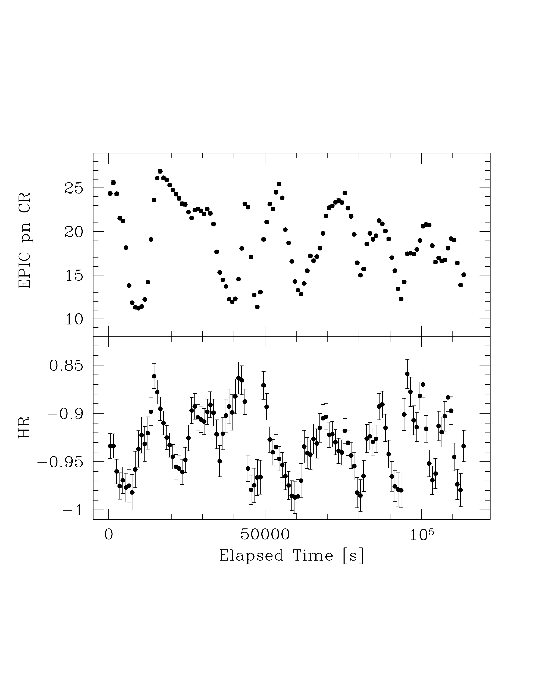
图注：{\(\it\) XMM-Newton} EPIC pn light curve of IC 3599, revealing a strong oscillation pattern. The top panel shows the count rate and the lower panel the hardness ratio.
对应解读：建议重点查看的图表 3；关键图表逐图导读 图 3；候选 QPO 的模型拟合段落。
入选理由：这是 XMM-Newton EPIC pn 短时标光变图，直接展示论文最醒目的小时级表观振荡，并同时给出硬度比，可检查峰谷是否连续、误差是否足以支撑周期结构，以及谱硬度是否随振荡同步变化。它对“候选 QPO”结论的支撑最直接。
来源与置信度：\(arxiv_source\)；high；\(arxiv_source\) / \(Letter_ic3599_apj_2026_astroph.tex\):figure[3]
Fig06
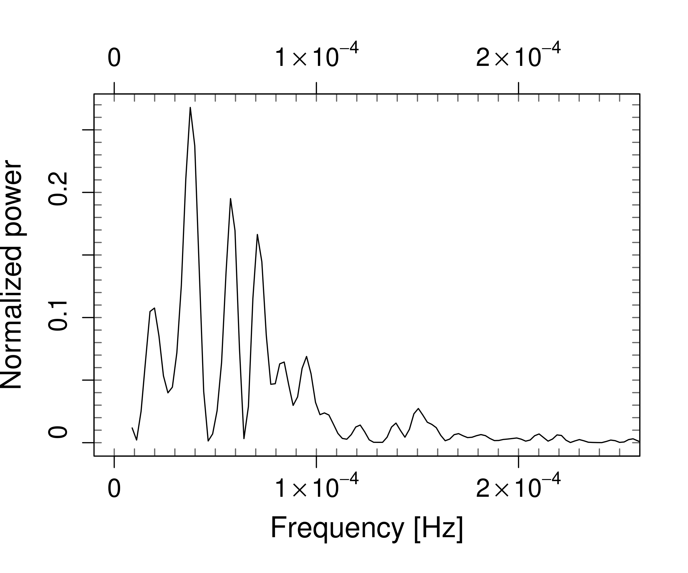
图注：Lomb-Scargle periodogram of the {\(\it\) XMM-Newton} EPIC pn light curve shown in Figure\,\(\ref{xmm_lc}.\)
对应解读：建议重点查看的图表 4；关键图表逐图导读 图 4；候选 QPO 红噪声显著性讨论。
入选理由：这是对应 Fig03 光变的 Lomb-Scargle 周期图，是判断表观振荡是否具有统计意义的关键诊断图。日报特别强调应查看周期图、候选峰、显著性和多频率搜索影响，因此该图比单纯视觉光变更适合支撑 QPO 相关解读。
来源与置信度：\(arxiv_source\)；high；\(arxiv_source\) / \(Letter_ic3599_apj_2026_astroph.tex\):figure[6]
Fig01
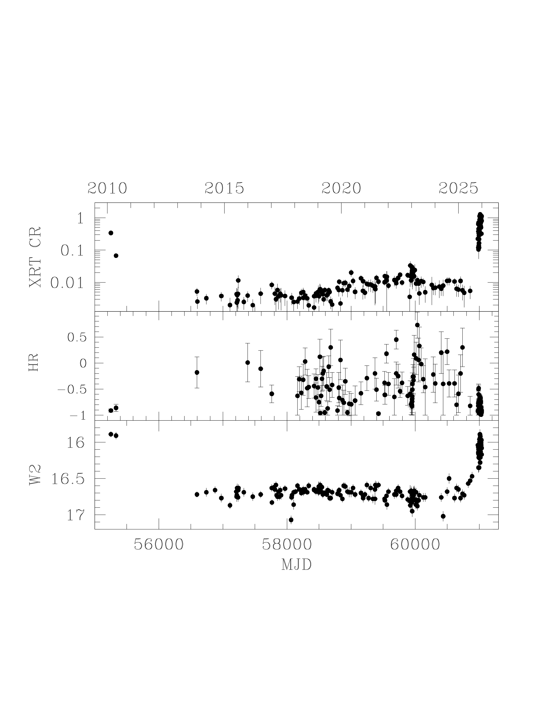
图注：Long-term {\(\it\) Swift} XRT count rate, hardness ratio, and UVW2 light curves from 2010 to 2025, including the two high-amplitude outbursts of IC 3599. The third one from 1990 is not shown.
对应解读：建议重点查看的图表 1 和 8；关键图表逐图导读 图 1；长期光变与复发模型比较段落。
入选理由：该图给出 2010 至 2025 年 Swift XRT 计数率、硬度比和 UVW2 光变，展示最近两次高振幅爆发及低态监测，是讨论第三次爆发、Swift 采样空窗、软硬状态变化和非严格周期复发的核心长期观测依据。虽然不包含 1990 年 ROSAT 爆发，但在候选图中它最接近长期 X 射线历史光变。
来源与置信度：\(arxiv_source\)；high；\(arxiv_source\) / \(Letter_ic3599_apj_2026_astroph.tex\):figure[1]
Fig02
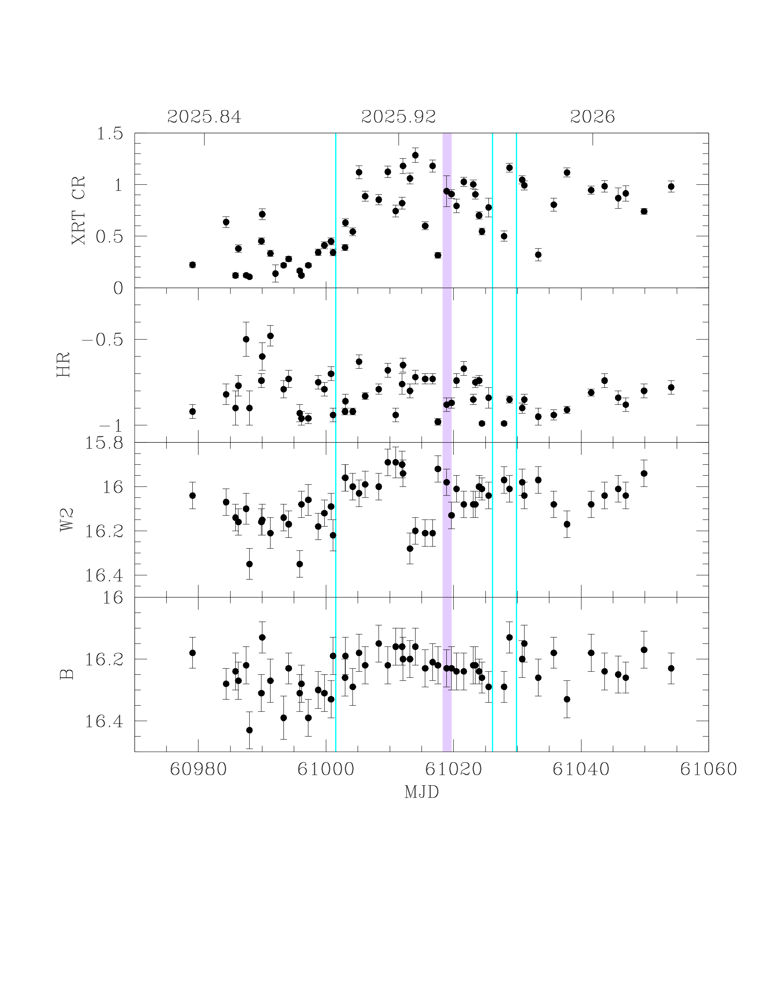
图注：Outburst light curve of IC 3599 in the X-ray, UV $W2$, and $B$ band until 2026 January 14. $W2$ and $B$ are Vega magnitudes and are corrected for Galactic extinction. The cyan lines mark the times of the optical spectroscopic observations and the magenta box the time of the {\(\it\) XMM-Newton} observation.
对应解读：建议重点查看的图表 8；关键图表逐图导读中多波段时间线和模型触发时序讨论。
入选理由：该图放大展示最新爆发期间的 X 射线、UV W2 与 B 波段光变，并标出光学光谱和 XMM-Newton 观测时间。它能直接说明这次爆发是在进行中被捕获并触发后随观测，也有助于检查多波段响应在时间上是否自洽。
来源与置信度：\(arxiv_source\)；high；\(arxiv_source\) / \(Letter_ic3599_apj_2026_astroph.tex\):figure[2]
Fig04
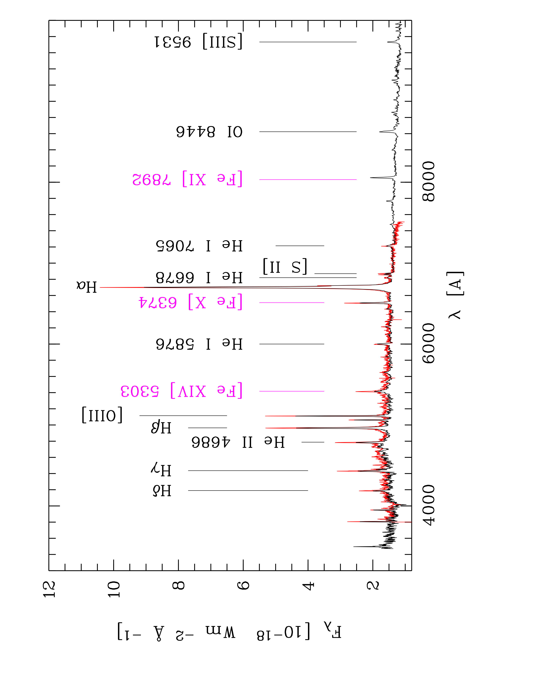
图注：Optical spectrum of IC 3599 taken at Lick Observatory on November 22. The CMO spectrum from December 16 is plotted in red. The brightest coronal emission lines are labeled in magenta. Other bright emission lines are labeled in black.
对应解读：建议重点查看的图表 5 和 6；关键图表逐图导读 图 5、图 6；光学光谱拟合与冕线响应讨论。
入选理由：该图展示两次光学光谱并标注明亮冕线及其他发射线，是支撑“高电离冕线显著增强或出现”的主要候选图。它能帮助读者检查线识别、Balmer 线与常见窄线的位置，以及不同观测之间的光谱差异。
来源与置信度：\(arxiv_source\)；high；\(arxiv_source\) / \(Letter_ic3599_apj_2026_astroph.tex\):figure[4]
Fig07
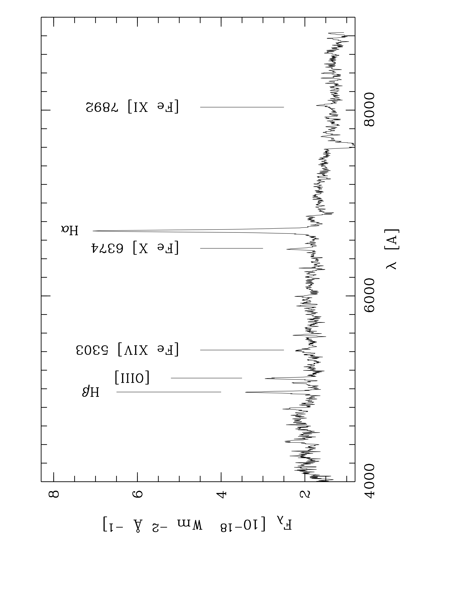
图注：Xinglong optical spectrum of IC 3599. The brightest emission lines are marked.
对应解读：建议重点查看的图表 5 和 6；光学光谱线识别补充。
入选理由：该图为 Xinglong 光学光谱并标出最亮发射线，可作为 Fig04 的补充，用于核对发射线识别和不同光谱观测中的线强表现。不过它的 caption 未显示高低态对比、残差或定量线通量，因此科学支撑力度弱于 Fig04。
来源与置信度：\(arxiv_source\)；high；\(arxiv_source\) / \(Letter_ic3599_apj_2026_astroph.tex\):figure[7]
强相关工作
与 IC 3599 直接相关的同源工作包括 1990 年 ROSAT 高态发现后的软 X 射线衰落研究、2010 年第二次爆发后的重复爆发解释，以及后续把它放入变脸 AGN 或重复核瞬变类别的论文。建议检索关键词包括 “IC 3599 ROSAT outburst”, “IC 3599 changing-look AGN”, “IC 3599 recurrent X-ray outburst”, “IC 3599 coronal lines”。这些同源论文是理解本文模型排除力度的必要背景，因为第三次事件的意义来自与前两次事件的时间和谱态比较。
相似类别包括重复或候选重复 TDE、极端软 X 射线 AGN 爆发、窄线 Seyfert 1 的快速变率、以及具有强瞬变冕线的核瞬变。需要注意，IC 3599 与典型 TDE 的关系既相似又有张力：相似之处是软 X 射线热谱和强线响应；张力在于它有长期 AGN 背景并且至少三次爆发。检索关键词可用 “repeating partial tidal disruption”, “radiation pressure instability AGN”, “changing-look AGN disk instability”, “transient coronal lines AGN”。
基础理论方面，Shakura-Sunyaev 薄盘、Lightman-Eardley 辐射压不稳定、经典 TDE 回落率和 AGN 红噪声功率谱统计都是必要参照。相反或竞争观点主要来自遮挡变化、重复潮汐剥离和双黑洞周期扰动；这些模型并非被概念上排除，而是需要面对第三次非等间隔爆发、超软谱和冕线响应的联合约束。
同一事件 / 同类源线索：
- https://arxiv.org/abs/2607.09036
- https://ned.ipac.caltech.edu/byname?objname=IC%203599
- https://ui.adsabs.harvard.edu/search/q=%22IC%203599%22
相似工作：
- https://ui.adsabs.harvard.edu/search/q=%22changing-look%20AGN%22%20%22X-ray%20outburst%22
- https://ui.adsabs.harvard.edu/search/q=%22recurrent%20X-ray%20outburst%22%20AGN
- https://ui.adsabs.harvard.edu/search/q=%22transient%20coronal%20lines%22%20AGN
基础理论 / 方法工作：
- https://ui.adsabs.harvard.edu/abs/1973A%26A....24..337S/abstract
- https://ui.adsabs.harvard.edu/abs/1974ApJ...187....1L/abstract
- https://ui.adsabs.harvard.edu/abs/1988Natur.333..523R/abstract
相反观点 / 张力线索：
4. Star-Disk Collisions II: Debris Stream Dynamics and Implications for QPEs and Other Transients Near SMBHs
- 来源：arXiv / astro-ph.HE
- 链接：https://arxiv.org/abs/2607.08823v1
- 作者：Philippe Z. Yao, Eliot Quataert, Yan-Fei Jiang, Itai Linial
- 评分：novelty 8/10，importance 8/10，relevance 8/10，final 9.00/10
- 推荐理由：Strong astro-ph.HE relevance through QPE soft-X-ray nuclear transients. 3D hydrodynamic simulations connect star-disc collision debris dynamics to flare durations, energetics, and timing, giving concrete tests of a leading QPE model.
中文题目：恒星—吸积盘碰撞 II：碎屑流动力学及其对超大质量黑洞附近 QPE 和其他暂现源的意义
做了什么：这篇文章用三维 Athena++ 流体模拟研究一颗恒星质量天体反复穿过 \(10^{6}\\,M_{\odot}\) 超大质量黑洞吸积盘后，剥离出的恒星碎屑如何形成非对称、三轴形的延展流，并在后续与盘气体相撞时产生激波和外流。作者把重点从“恒星撞盘瞬间”推进到“被剥离碎屑流的后续动力学”，用模拟中被激波加热的恒星物质质量和能量估计 QPE 软 X 射线耀发的持续时间、能量和相位漂移。主要结论是：耀发持续时间自然由碎屑流扫过盘面的时间决定，因此可给出近似恒定的占空比 \(\sim 10\%\) 到 \(\sim 20\%\)，并且总激波能量可达到已观测 QPE 的量级；多数情况下每个恒星轨道更倾向只产生一个可观测耀发。
为什么重要：QPE 的核心难题不是简单地解释“为什么会有重复耀发”，而是同时解释小时到天的复发周期、软 X 射线能谱、\(\sim 10\%\) 到 \(\sim 20\%\) 的占空比、耀发相位漂移和不同源之间的多样性。恒星或致密天体穿盘模型已经很有吸引力，但过去常把碰撞近似成局部能量释放事件。本文显示，真正决定可观测光变宽度和峰值时刻的，可能是被剥离恒星碎屑流在黑洞潮汐场和盘剪切中的三维演化，而不是恒星本体穿过盘面的瞬时几何时间。
理论 / 观测 / 仪器方法价值：理论价值在于把 QPE 的一个经验事实，即近似恒定占空比，连接到碎屑流与盘相互作用的流体时间尺度；观测价值在于给出可检验预言：耀发峰值相对于恒星穿盘时刻可以漂移，且一个轨道通常对应一个强耀发，除非在最短周期情况下恒星碎屑激波和盘气体激波能量相近。方法价值在于三维模拟同时包含黑洞潮汐势、开普勒盘旋转和与观测相近的轨道周期，比纯解析碰撞估算更接近实际核区环境。
为什么应该关注：如果你关心 QPE 是极端质量比轨道系统、潮汐剥离、盘—星相互作用，还是某种吸积盘内禀不稳定，本文给出了一个很具体的判别方向：看耀发宽度、相位和能量是否随轨道周期按碎屑流碰盘时间尺度变化。它也提醒观测者，不应只用“周期钟”拟合峰值，而要把峰值相位漂移、单峰或双峰结构、占空比与盘碰撞几何一起建模。对 LISA 时代的核区紧密轨道天体研究，这类模型还可能把 X 射线 QPE 与极端质量比系统的动力学联系起来。
展开详细解读：文章讲解、背景、理论、重点章节、图表与相关工作
文章详细讲解
科学问题：QPE 是位于星系核的重复软 X 射线耀发，复发周期通常为小时到天，单次耀发只占周期的 \(\sim 10\%\) 到 \(\sim 20\%\)。恒星质量天体周期性穿过超大质量黑洞周围吸积盘的模型，可以自然提供外部时钟和重复能量注入，但仍有一个关键问题没有被充分解决：碰撞瞬间很短，为什么观测到的耀发持续时间能稳定占据轨道周期的相当一部分？此外，峰值时刻为什么可能相对几何穿盘时刻发生漂移，不同 QPE 源的光变形态为什么差别很大？本文把问题聚焦到“被恒星剥离出的碎屑流”而非恒星本体。
作者怎么做：文章使用三维 Athena++ 流体力学模拟，在 \(10^{6}\\,M_{\odot}\) 黑洞引力场中设置开普勒旋转吸积盘，并让恒星质量轨道体以与 QPE 观测相近的轨道周期反复穿盘。模拟包含黑洞潮汐势、盘的剪切和旋转，以及恒星附近的 Hill 区域。作者跟踪每次盘交会后新鲜剥离的恒星物质如何离开 Hill 球，形成延展、非轴对称、近似三轴的碎屑流；随后又跟踪该碎屑流与盘气体的二次碰撞如何激波加热恒星碎屑和盘气体，并驱动类似风的外流。
关键结果：模拟显示，后续碎屑流—盘碰撞，而不是最初恒星穿盘瞬间，能够主导高比能物质的产生。对于较长轨道周期，激波加热的恒星碎屑在高比能预算中占主导；对于较短轨道周期，激波加热的盘气体能量可与恒星碎屑相当。作者用随时间变化的激波恒星质量推断耀发持续时间，发现该时间由碎屑流扫过盘的持续时间设定，可自然给出近似恒定的耀发占空比 \(\sim 10\%\) 到 \(\sim 20\%\)，且对轨道周期不强依赖。总激波碎屑能量与 QPE 观测耀发能量相容，因此该机制在能量学上没有明显短缺。
局限和下一步：本文主要是流体动力学与能量预算研究，并未完整进行辐射转移、非平衡电离、磁流体湍流或广义相对论辐射谱合成。因此，模拟中的激波能量是否以观测到的软 X 射线光度、温度和谱形释放，还需要辐射效率、光学深度和热化过程的进一步建模。另一个限制是盘结构、恒星类型、轨道倾角和偏心率的参数空间仍有限。下一步应把三维磁流体盘、辐射扩散或蒙特卡洛辐射转移、以及长期多轨道演化结合起来，并把模型输出直接映射到 QPE 光变曲线的峰值相位、宽度、能量和色温演化。
关键结果是怎么做出来的
本文最重要的证据链从模拟样本选择开始。作者选取 \(10^{6}\\,M_{\odot}\) 的超大质量黑洞质量标度，这是许多 QPE 宿主星系核常见推断质量的量级；轨道周期设置为与观测 QPE 的小时到天尺度相当；盘气体采用开普勒旋转背景，并显式加入黑洞潮汐势。这样的设置不是为了拟合某一个具体 QPE 源，而是检验穿盘模型能否在正确的量纲上产生耀发持续时间和能量。
事件计数在这里对应多次盘交会和每次交会后被剥离物质的时序追踪，而不是传统观测论文中的光子事件数。作者区分了恒星附近 Hill 球内仍被轨道体束缚或近束缚的气体、已离开 Hill 球形成流的恒星碎屑、被激波加热的恒星碎屑，以及被激波加热的盘气体。核心诊断量是随时间累积或瞬时的激波质量、比能分布和能量预算，并据此估计哪一段时间最可能对应可观测耀发。
显著性在本文中主要不是以 \(p\) 值或贝叶斯因子表达，而是通过物理量级和不同轨道周期模拟之间的一致性来建立。作者把模拟中高比能激波物质的总能量与 QPE 单次耀发能量比较，把激波质量随时间的宽度与观测占空比比较。如果模拟在多个周期设置下都给出 \(\Delta t_{\rm flare}/P_{\rm orb}\sim 0.1\) 到 \(0.2\)，并且能量在 QPE 需求范围内，那么模型的关键结论就不是来自微调单个参数，而是来自碎屑流几何和轨道剪切的共同标度。
支撑结论的图表应包括：碎屑密度三维形态或切片图，用来显示离开 Hill 球后的非对称延展流；激波恒星碎屑质量随时间的曲线，用来定义耀发持续时间；恒星碎屑与盘气体的比能分布，用来说明哪一类物质贡献高能外流；以及不同轨道周期下占空比和总能量的对比图。读者需要特别看峰值并不一定与恒星穿盘时刻重合这一点，因为这正是解释 QPE 相位多样性的关键。
主要系统误差来自数值分辨率、盘垂直结构、边界条件、恒星气体剥离处方、是否包含磁场以及是否包含辐射冷却。若冷却时间远短于流体膨胀时间，激波能量可能更快辐射而不是驱动外流；若光学深度很大，可观测软 X 射线峰值又可能被扩散和再处理延迟。稳健性检验应关注改变分辨率、盘厚度、轨道周期、碰撞倾角和恒星结构后，占空比是否仍维持在 \(\sim 10\%\) 到 \(\sim 20\%\)，以及高比能尾部是否不被少量网格噪声主导。
展开背景、理论、公式、模型、章节和图表导读
背景知识
QPE 是近年在星系核中发现的一类重复软 X 射线爆发现象，典型特征是耀发间隔相对稳定、单次持续数小时左右、光谱偏软、宿主常是低质量或中等质量超大质量黑洞系统。与普通活动星系核随机红噪声不同，QPE 显示出明显的准周期性；与经典潮汐瓦解事件不同，QPE 不是一次性衰减，而是可重复发生。这使它成为研究黑洞附近紧密轨道天体和吸积盘响应的少数直接窗口。
历史上解释 QPE 的模型大致分两类。一类把它看作吸积盘内禀不稳定，例如热黏不稳定、磁通量循环或辐射压力相关振荡；另一类把它看作一个外部轨道体周期性扰动吸积流，例如恒星、白矮星或剥离核在偏心或倾斜轨道上穿过盘。外部扰动模型的优势是容易产生稳定时钟，困难是要解释光变宽度、能量和软 X 射线谱；盘内禀模型的优势是天然发生在发光介质中，困难是要产生足够稳定的周期和相位结构。
本文所处的具体问题是恒星—盘碰撞模型中的“碎屑流阶段”。如果只估算恒星以速度 \(v\) 穿过厚度 \(H\) 的盘，碰撞时间约为 \(H/v\)，通常会比观测耀发宽度短，或者对盘厚度有较强依赖。但真实碰撞不会只在恒星本体附近结束：盘的冲击会从恒星外层剥离气体，这些气体在黑洞潮汐场和轨道剪切中拉成长流，随后以不同相位和速度再次撞盘。这个过程可把短促碰撞拉宽为较长的能量释放。
现在重新看这个问题的原因有两点。观测方面，QPE 样本正在增加，复发周期、占空比和源间差异逐渐形成可比较的统计特征。数值方面，三维流体模拟已经能在局部高分辨率下同时包含轨道剪切、盘旋转和潮汐势，从而不再只能依靠弹道近似或局部风洞模型。本文正是用这种更完整的动力学设置检验碎屑流是否能解释 QPE 的核心时间尺度。
常见误区包括：把 QPE 周期直接等同于圆轨道周期而忽略偏心率和交会几何；把耀发宽度等同于恒星穿过盘厚度的时间而忽略剥离碎屑的后续碰撞；把激波能量直接等同于 X 射线辐射能而忽略辐射效率和再处理；以及认为每次穿盘必然产生两个等强耀发。本文的一个重要提醒是，碎屑流的质心、密度和相对盘的位置会改变峰值时刻和强度，因此几何交会次数与可观测峰数不一定一一对应。
基础理论 / 方法脉络
基本物理图像是：一颗恒星质量天体在超大质量黑洞附近沿倾斜或偏心轨道运动，周期性穿过吸积盘。穿盘时，恒星外层气体受到盘气体的冲击压、剪切和黑洞潮汐场共同作用，部分物质被剥离。剥离后的气体不再作为刚性小球随恒星运动，而是在黑洞势场中按自身位置和速度展开，形成具有有限长度、宽度和密度梯度的碎屑流。
决定剥离和碎屑展开的关键量包括 Hill 半径、盘面相对速度、盘密度、盘厚度、轨道周期和局部开普勒频率。Hill 半径给出恒星引力相对黑洞潮汐仍能控制气体的尺度；超过这个尺度的物质容易被黑洞潮汐和盘剪切带走。盘气体不是静止背景，而是在接近开普勒速度旋转，因此碰撞强度取决于恒星轨道速度与盘局部速度的矢量差。
本文的模型假设强调三维流体动力学而非纯弹道粒子。Athena++ 求解气体连续性方程、动量方程和能量方程，在外加黑洞引力势与局部恒星引力或等效势下演化密度、速度和压力。模拟诊断的核心不是单个粒子轨道，而是哪些网格气体属于恒星碎屑、哪些属于盘气体，它们在何时被激波加热到高比能，并且这些高比能物质是否能提供 QPE 级别能量。
观测连接主要通过时间尺度和能量尺度完成。若激波加热的物质在一段时间 \(\Delta t_{\rm sh}\) 内持续产生，且辐射效率为 \(\epsilon_{\rm rad}\)，则可观测耀发持续时间大致追踪 \(\Delta t_{\rm sh}\)，辐射能量大致为 \(\epsilon_{\rm rad}E_{\rm sh}\)。本文特别关注无量纲占空比 \(\Delta t_{\rm sh}/P_{\rm orb}\)，因为它可以与不同 QPE 源比较，并且不太依赖黑洞质量的绝对标度。
主要退化关系包括：较高盘密度、较大相对速度或更强剥离都能提高激波能量，但它们对持续时间和峰值相位的影响不同；盘厚度和碎屑流长度都能拉宽光变，但前者是背景盘结构，后者是碰撞后动力学产物；辐射效率和激波能量退化，使得仅凭 X 射线能量难以唯一反推出剥离质量。系统误差还包括数值扩散会改变碎屑流宽度，冷却缺失会改变气体压强支撑，而磁场可能改变激波结构和角动量交换。
公式与推导
第一步从黑洞主导势中的轨道时间尺度出发。若轨道半长轴为 \(a\)，黑洞质量为 \(M_{\bullet}\)，且恒星质量远小于黑洞质量，则开普勒周期为
这里 \(G\) 是引力常数。本文把 \(M_{\bullet}\) 取在 \(10^{6}\\,M_{\odot}\) 量级，并选择使 \(P_{\rm orb}\) 接近 QPE 小时到天尺度的轨道，从而让模拟直接检验观测相关的无量纲时间结构。
第二步是恒星能控制气体的 Hill 尺度。若轨道半径局部为 \(r\)，恒星质量为 \(M_{\ast}\)，则近似 Hill 半径为
当被扰动气体到恒星的距离超过 \(R_{\rm H}\) 时，黑洞潮汐和轨道剪切会比恒星自引力更重要。本文用“离开 Hill 球”的碎屑来定义真正进入后续流动力学阶段的恒星物质。
第三步估计穿盘冲击的能量输入。若局部盘密度为 (\
\(ho_{\rm d}\))，恒星与盘的相对速度为 \(v_{\rm rel}\)，恒星有效截面为 \(A_{\ast}\)，穿过盘的路径长度为 \(\ell\)，则扫过盘质量可写为
相应的可用动能量级为
这只是瞬时碰撞估算；本文的重点是被剥离恒星碎屑在后续与盘碰撞时还能继续把轨道能转化为热能和外流能。
第四步连接激波加热与比能诊断。对每个气体单元，可定义相对于黑洞势的伯努利型比能
其中 \(v\) 是气体速度，\(u\) 是内能比能，\(\Phi_{\bullet}\) 是黑洞引力势。若激波后 \(e\) 显著升高，甚至接近正值，气体可能成为高比能外流。模拟中比较恒星碎屑与盘气体在 \(e\) 分布高能尾部的贡献，是判断哪一类物质主导耀发能量的关键。
第五步把激波质量通量转成耀发时间尺度。若被激波处理的恒星碎屑质量随时间的速率为 \(\dot{M}_{\}\)
m sh,\ast}(t))，则累积激波质量为
耀发宽度可用 \(\dot{M}_{\}\)
m sh,\ast}(t)) 或激波功率超过某个阈值的时间区间定义。本文据此得到
这正是与 QPE 观测占空比相比较的核心量。
第六步估计辐射能量。若激波总能量为
其中 \(L_{\rm sh}(t)\) 是流体模拟推断的激波功率，则观测到的软 X 射线辐射能可写为
这里 \(\epsilon_{\rm rad}\) 是辐射效率，包含冷却、热化、扩散和谱带修正。本文结论中的“能量学相容”意味着在合理 \(\epsilon_{\rm rad}\) 下，\(E_{\rm sh}\) 足以覆盖 QPE 耀发能量。
第七步解释相位漂移。若恒星穿盘时刻为 \(t_{0}\)，碎屑流质心相对于恒星的沿轨道位移为 \(\Delta s\)，与盘再次相交的有效相对速度为 \(v_{\rm int}\)，则峰值延迟量级为
不同交会后 \(\Delta s\)、碎屑密度和流宽度会变化，因此峰值相对于几何穿盘时刻不必固定。这给出了 QPE 峰值相位漂移和源间多样性的物理解释。
第八步说明单峰或双峰的能量比较。可把恒星碎屑与盘气体贡献写成
当 \(\mathcal{R}_{E}\gg 1\) 时，可观测耀发主要由恒星碎屑激波控制，通常每轨道一个主峰更自然；当 \(\mathcal{R}_{E}\sim 1\) 时，盘气体激波也可能产生可比信号，最短周期情形下可能出现更复杂峰形。这个比值概括了本文关于不同轨道周期下能量来源变化的主要物理判断。
模型拟合 / 应用方法
本文本身不是对某个 QPE 光变数据做直接贝叶斯拟合，而是通过三维流体模拟输出构造可与观测拟合的物理量。可拟合量包括轨道周期 \(P_{\rm orb}\)、耀发宽度 \(\Delta t_{\rm flare}\)、占空比 \(f_{\rm duty}\)、单次辐射能 \(E_{\rm X}\)、峰值相位偏移 \(\Delta t_{\rm peak}\)、以及可能的单峰或双峰结构。若把模拟作为模板库，观测拟合可以用 \(P_{\rm orb}\) 固定外部时钟，再用碎屑流宽度、盘密度和辐射效率调节光变形状与能量。
统计上，实际应用可对 X 射线光变采用泊松似然或高计数率下的高斯似然。模型光变 \(m(t;\theta)\) 可由模拟激波功率 \(L_{\rm sh}(t)\) 经过辐射效率、扩散核和仪器响应卷积得到，参数 \(\theta\) 包括轨道相位、周期漂移、盘密度归一化、辐射效率和背景 AGN 变率。残差诊断应重点看峰前和峰后的非对称性、相邻周期峰值相位漂移、弱次峰是否系统存在，以及耀发外基线是否有相关红噪声。
参数退化很强。盘密度升高和辐射效率升高都能增加观测通量，但前者也会改变剥离质量和动力学反馈；碎屑流长度增大和辐射扩散时间增大都能拉宽耀发，但前者可能伴随相位漂移和非对称光变，后者更像平滑卷积；轨道倾角、盘厚度和相对速度共同决定碰撞强度，很难仅凭单波段 X 射线光变拆开。若有温度演化、吸收变化或紫外光学再处理数据，可部分打破这些退化。
系统误差包括模拟物理和观测建模两端。模拟端若缺少辐射冷却，激波后气体可能过热并过度膨胀；若缺少磁场，盘湍流和角动量输运的相位结构可能不真实；若分辨率不足，碎屑流宽度和混合层会受数值扩散影响。观测端则要处理仪器窗口函数、低计数统计、背景扣除、源内吸收变化和 AGN 红噪声误判周期的问题。
模型可能失败的情形也很明确。如果未来更大样本显示 QPE 占空比与轨道周期、黑洞质量或光度无关到远超碎屑流模型允许的程度，或许需要盘内禀振荡解释。若某些源稳定出现每轨道两个等强、等间隔耀发，且无明显相位漂移，则简单的单一碎屑流主导图像会受压。相反，若观测到峰值相位在周期钟附近准随机漂移、峰形随周期改变、单峰和弱次峰交替出现，则会支持本文强调的碎屑流动力学。
重点章节 / 结果段落怎么读
第一，数据与数值设置部分应优先读。这里会说明黑洞质量标度、轨道周期选择、盘密度和厚度、坐标系、边界条件、恒星或注入物质的处理方式，以及如何在 Athena++ 中加入黑洞潮汐势和盘开普勒旋转。读者要判断这些设置是否覆盖 QPE 真实参数空间，而不是只看最终图像是否漂亮。
第二，初次恒星—盘交会和碎屑剥离部分是理解全文的入口。重点看作者如何定义 Hill 球、如何标记恒星物质与盘物质、如何判断哪些气体离开恒星控制区。这里决定了后面“碎屑流”不是人为设定的弹道结构，而是从流体相互作用中自然产生的。
第三，碎屑流—盘再碰撞和激波能量部分是论文核心。应关注随时间的激波质量、比能分布、恒星碎屑与盘气体贡献分解，以及不同轨道周期下高比能尾部的变化。本文关于较长周期由恒星碎屑主导、较短周期盘气体能量可相近的结论，主要来自这一部分。
第四，与 QPE 光变联系的部分需要把模拟量翻译成观测量。重点读作者如何从激波恒星质量随时间推断耀发持续时间，如何定义占空比，如何比较 QPE 典型能量，以及为何认为大多数情况下每个轨道只有一个可观测耀发。这部分也是检验模型是否过度解释观测的关键。
第五，讨论和局限部分应重点看辐射、磁场和长期演化。作者如果明确说明未包含完整辐射转移和磁流体效应，读者就应把能量学结论与谱形结论区分开：本文强的是动力学和时间尺度，不是最终 X 射线谱合成。
建议重点查看的图表
-
三维密度或二维切片图：看恒星穿盘后碎屑是否确实离开 Hill 球并形成非对称、延展、近似三轴流，而不是局限在恒星附近的短尾。
-
恒星碎屑和盘气体的物质标记图：看作者如何区分不同来源的气体，尤其在混合层和激波区是否有清楚的 tracer 或被动标量诊断。
-
激波质量或激波功率随时间曲线：看峰宽如何定义，\(\Delta t_{\rm flare}/P_{\rm orb}\) 是否稳定在 \(\sim 0.1\) 到 \(\sim 0.2\)，以及峰值相对穿盘时刻是否有偏移。
-
比能分布图：看高比能尾部由恒星碎屑还是盘气体主导，短周期和长周期模型之间差别是否显著。
-
总激波能量与 QPE 观测能量对比图或表：看能量比较是否依赖极端辐射效率，是否给出合理范围而非单点匹配。
-
不同轨道周期的对比图：看占空比近似恒定是否来自多个模拟的趋势，而不是单个案例巧合。
-
分辨率或稳健性诊断：看碎屑流宽度、激波能量和高比能尾部是否随网格分辨率明显变化。
关键图表逐图导读
图 1：通常应是模拟几何或初始条件示意图。横纵坐标可能是以黑洞为中心或以恒星为中心的空间坐标，盘面、恒星轨道和穿盘点会被标出。读图时要确认盘的开普勒旋转方向、恒星相对速度方向和轨道周期标度，因为这些决定后续碎屑流相对于盘的偏斜方向。陷阱是把示意图中的几何简化当成真实对称性；实际三维流会被剪切和潮汐迅速破坏对称。
图 2：应关注穿盘后密度切片或三维体渲染。坐标轴若以 Hill 半径或局部盘尺度高度归一化，读者要看碎屑是否越过 \(R_{\rm H}\)，以及流的长度、宽度和质心是否相对恒星偏移。颜色通常代表密度或 tracer 分数。主要结论是新鲜剥离物质形成延展非对称流；读图陷阱是高密度核心可能掩盖低密度但能量重要的长尾。
图 3：应是激波恒星质量、激波盘质量或激波功率随时间的曲线。横轴一般是相对穿盘时刻的时间，可能归一化到 \(P_{\rm orb}\)；纵轴可能是质量通量、累积质量或能量释放率。读者要看峰宽定义、半高宽或阈值宽度是否对应 \(f_{\rm duty}\sim 0.1\) 到 \(0.2\)。陷阱是不同阈值会改变持续时间，因此应检查作者是否给出稳健定义。
图 4：应是比能分布或能量累积分布。横轴可能是气体比能 \(e\)，纵轴是质量分布 \(dM/de\) 或累积能量。模型线或颜色会区分恒星碎屑和盘气体。主要结论是长周期情况下高比能物质多由恒星碎屑贡献，短周期情况下盘气体贡献可接近。读图陷阱是高能尾部质量小但能量权重大，线性质量图可能低估其重要性。
图 5：应是不同轨道周期或模型参数的占空比和能量对比。横轴可为 \(P_{\rm orb}\)，纵轴为 \(\Delta t_{\rm flare}/P_{\rm orb}\)、\(E_{\rm sh}\) 或两者。关键看数据点是否围绕 \(\sim 0.1\) 到 \(\sim 0.2\) 而非随 \(P_{\rm orb}\) 强烈单调变化。陷阱是模拟数量有限，趋势线不应被过度解释为精确标度律。
图 6：若有相位或峰值时刻诊断，应重点看峰值相对恒星穿盘时刻的偏移。横轴可能是轨道相位，纵轴为激波功率或碎屑质心位置。主要结论是峰值由碎屑流与盘碰撞的时空分布决定，不必与几何穿盘时刻重合。陷阱是观测中周期拟合常把峰值当作轨道相位零点，这在该模型下可能是不正确的。
论文原图 / 可嵌入图片
Fig07
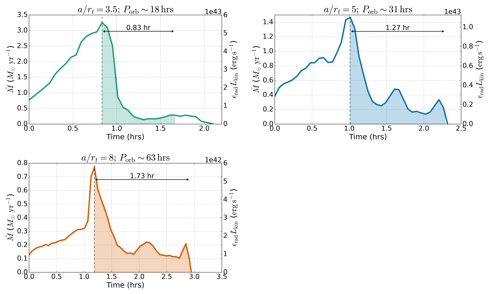
图注：Shocked stellar debris mass over time for ART3.5 (\textit{top}), ART5 (\textit{middle}), and ART8 (\textit{bottom}). On the right axes, an estimate of the bolometric luminosity is converted from $\dot M$ assuming radiative efficiency $\epsilon_{\rm rad} \sim 0.1$. Only the post-peak duration is taken into account since the pre-collision stream is truncated artificially in our simulations; we estimate the total flare duration to be three times the post-peak duration (see discussion in \(\S\) \ref{sec:duration}). The measured flare duty cycle ($\sim10\%$, assuming 1 flare per orbit) and luminosity broadly reproduce the observed properties of QPEs.
对应解读：对应“建议重点查看的图表”第3、5、6项，以及“关键图表逐图导读”中图3/图5关于激波质量随时间、耀发持续时间、占空比和QPE光度能量对比的解读。
入选理由：这是最直接支撑本文核心结论的图：横向比较 ART3.5、ART5、ART8 不同轨道尺度下激波恒星碎屑质量随时间的演化，并在右轴给出按辐射效率换算的光度估计。图中可直接检查峰宽、峰值相对碰撞时刻的形态、作者如何由 post-peak duration 推断总耀发持续时间，以及占空比是否稳定在约10%。相比其他候选图，它最紧密连接QPE观测的耀发宽度、占空比和能量学。
来源与置信度：\(arxiv_source\)；high；\(arxiv_source\) / sample631.tex:figure[7]
Fig05
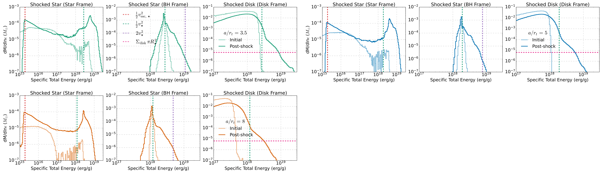
图注：Energy distribution of stellar debris in the frame of the star (\textit{left}) and the frame of the black hole (\textit{center}) and disk material in the frame of the disk (\textit{right}) before (lighter shade) and after (darker shade) a collision for ART3.5 (\textit{top}), ART5 (\textit{middle}), and ART8 (\textit{bottom}). The stellar debris has a typical energy set by the stellar escape velocity $v_{\rm esc,\star}$, whereas shocked star and disk material have specific energy set by the stellar orbital velocity $v_\star$. We categorize material as shocked if its specific energy $\epsilon_{\rm tot}>\frac{1}{2} v_{\star}^2$, and unbound from the black hole if $\epsilon_{\rm tot, BH}>2 v_{\star}^2$. In the \(\textit{right}\) panels, the energy distribution of undisturbed disk material broadens due to numerical diffusion, which increases the uncertainty of the measured shocked disk mass.
对应解读：对应“建议重点查看的图表”第4项，以及“关键图表逐图导读”中图4关于比能分布、高比能尾部由恒星碎屑或盘气体主导、短周期与长周期模型差异的解读。
入选理由：该图按 ART3.5、ART5、ART8 分面展示碰撞前后恒星碎屑和盘物质的能量分布，并区分恒星参考系、黑洞参考系和盘参考系，是判断高比能物质来源的关键诊断。它还明确标出 shocked 与 unbound 的能量判据，并提示盘物质能量分布受数值扩散影响，正好对应日报中关于高能尾部、系统误差和短/长周期差异的重点。
来源与置信度：\(arxiv_source\)；high；\(arxiv_source\) / sample631.tex:figure[5]
Fig02
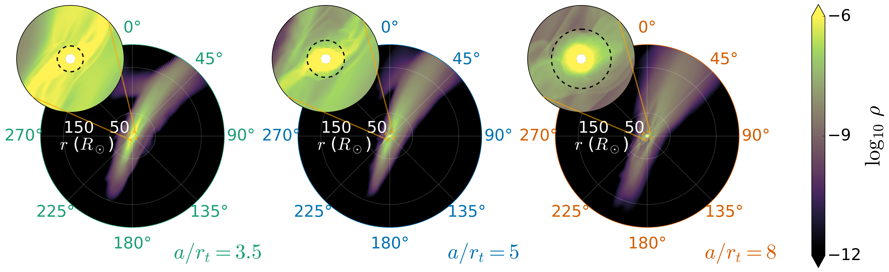
图注：Density contours of ART3.5 (\textit{left}), ART5 (\textit{center}), and ART8 (\textit{right}) for a $\theta$-slice in the orbital plane ($r-\phi$) showing the tidally stretched stellar debris stream roughly half an orbit after the previous disk collision. The inset plots show $r<10R_{\odot}$, where the size of the Hill sphere is shown via the dashed line. The debris stream evolves to cover a much larger volume for larger $a/r_{\rm t}$, but can be significantly less dense, especially around the Hill sphere. The colorbar shared by these contours is capped at the disk's midplane density, highlighting areas of the stellar debris that are denser than the disk.
对应解读：对应“建议重点查看的图表”第1项，以及“关键图表逐图导读”中图2关于穿盘后密度切片、Hill球外延展碎屑流、非对称结构和不同轨道周期对比的解读。
入选理由：该图直接显示 ART3.5、ART5、ART8 在轨道面内的密度等值线，并用 inset 标出 Hill 球尺度，可检验新鲜剥离的恒星碎屑是否越过 Hill 球、是否形成大尺度延展流，以及较大 a/\(r_t\) 时流体体积和密度如何变化。它是验证“碎屑流而非短尾局限在恒星附近”这一物理图像的最直观证据。
来源与置信度：\(arxiv_source\)；high；\(arxiv_source\) / sample631.tex:figure[2]
Fig04
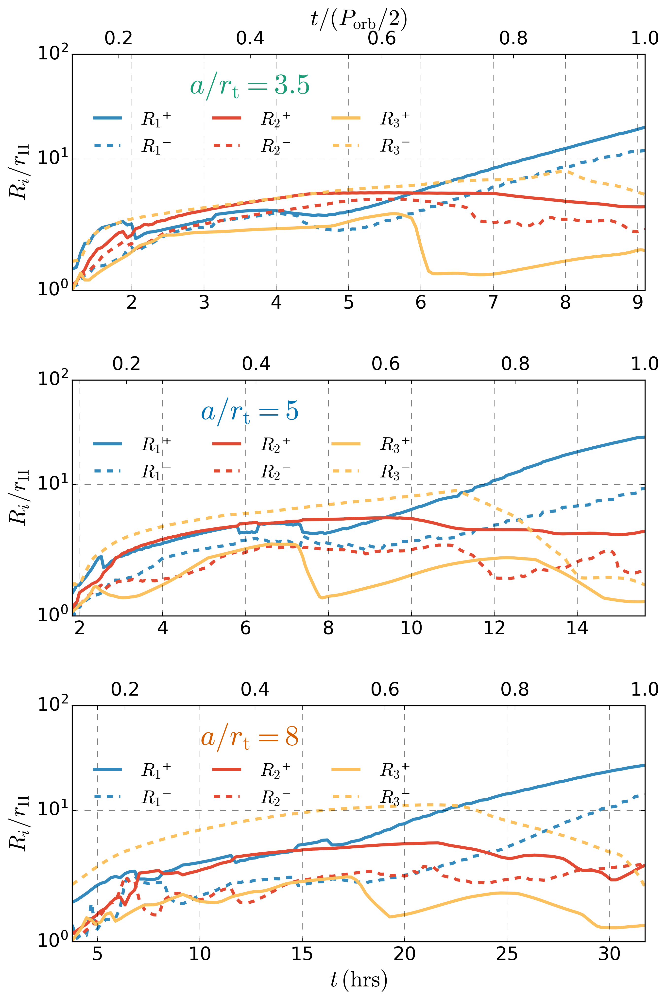
图注：Evolution of the 3 pairs of stellar debris stream axes that trace the 90\% mass length along each direction, normalized by the size of the Hill sphere $r_H$. $+$ and $-$ axes are parallel to each other and extend from the star in two opposite directions. $R_1$ and $R_2$ are in the orbital plane, where the former is the longest axis and sets the collision duration. The debris stream evolution is nearly independent of $a/r_t$ when normalized to the size of the Hill sphere.
对应解读：对应“建议重点查看的图表”第3、6项，以及“关键图表逐图导读”中关于不同轨道周期下耀发持续时间和占空比近似恒定的模型解释。
入选理由：该图量化三对碎屑流主轴随时间的演化，并以 Hill 半径归一化，其中 R1 是最长轴且被作者用来决定碰撞持续时间。它比单纯的密度快照更适合支撑“流的尺度归一化后对 a/\(r_t\) 近似无关，因此耀发占空比可近似恒定”的论证，是连接碎屑几何与光变持续时间的关键中间诊断。
来源与置信度：\(arxiv_source\)；high；\(arxiv_source\) / sample631.tex:figure[4]
Fig08
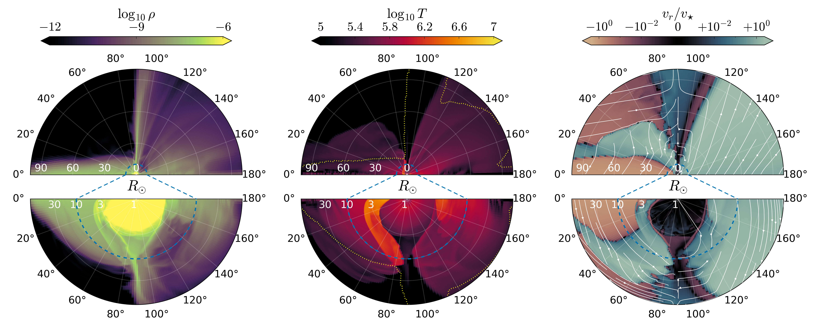
图注：From \(\textit{left}\) to \(\textit{right},\) density, temperature, and radial velocity contours of a simulation snapshot for ART5. The two hemispheres are the same data mirrored and plotted linearly (\textit{top}) and logarithmically (\textit{bottom}) in radius $r$ to resolve both large- and small-scale structures, respectively. The dashed line indicates the same spatial region within $r<10 R_{\odot}$ in each plot. The \(\textit{right}\) column shows the radial velocity of material in the star's frame. The snapshot is taken during the collision when the star sits approximately at the center of the disk, and a wind-like outflow is produced by the shocked debris-disk mixture traced by the white streamlines in the \(\textit{right}\) column. The yellow dotted line in the temperature panel indicates the position where $\tau\sim c/v_\star$, which is viewing-angle dependent. Some angles can see material shocked to temperatures as high as $\sim 10^{6}K$, capable of producing the signature soft X-ray flares seen in QPEs. Results are similar for ART3.5 and ART8.
对应解读：对应“建议重点查看的图表”第1、5项，以及详细解读中关于碎屑—盘碰撞产生风状外流、软X射线温度和辐射可见性的讨论。
入选理由：该图同时给出密度、温度和径向速度结构，并标出风状外流流线及光学深度相关位置，可用于判断激波后物质是否达到约10^6 K、是否可能产生软X射线QPE信号。虽然它不如 Fig07 和 Fig05 直接给出占空比或能量分布，但能补充说明激波能量如何转化为具有观测意义的热结构和外流形态。
来源与置信度：\(arxiv_source\)；high；\(arxiv_source\) / sample631.tex:figure[8]
Fig03
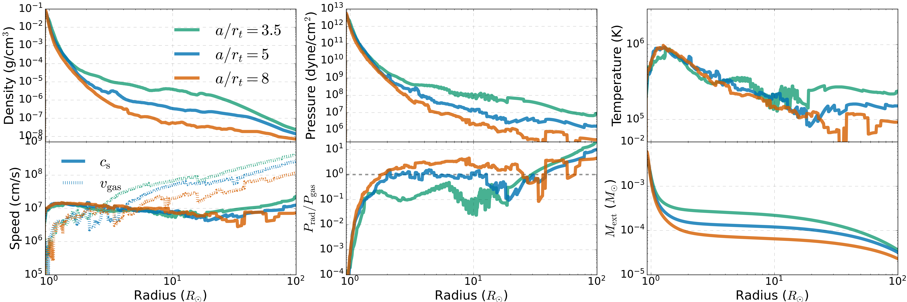
图注：Stream density, pressure, temperature, sound speed, radiation-to-gas-pressure ratio profiles, and integrated exterior mass as a function of $r$ along the longest debris stream dimension ($R_1$) for ART3.5 (green), ART5 (blue), and ART8 (orange) after the puffy star experiences 3 disk collisions under tidal gravity (the same snapshot, immediately before the next collision, as the one shown in Figure \ref{fig:stream_contour}). The speed panel compares the total gas speed $v_{\rm gas}$ (dotted) to the local sound speed $c_{\rm s}$ (solid). At smaller $a/r_{\rm t}$, more material is stripped by the higher velocity collisions, and is denser along the stream and inside the Hill sphere.
对应解读：对应“建议重点查看的图表”第1、6、7项，以及详细解读中关于碎屑流密度、压力、温度、声速和外部质量随流向位置变化的物理诊断。
入选理由：该图沿最长碎屑流方向给出密度、压力、温度、声速、辐射压比和 Hill 球外积分质量等剖面，可补充 Fig02 的形态图，定量说明不同 a/\(r_t\) 下剥离质量、流密度和 Hill 球内外物质分布。它对理解碎屑流宽度、混合和数值稳健性有帮助，但与QPE占空比和能量学的直接联系弱于 Fig07、Fig05 和 Fig04。
来源与置信度：\(arxiv_source\)；high；\(arxiv_source\) / sample631.tex:figure[3]
强相关工作
这篇工作属于 QPE 外部扰动模型和恒星—盘碰撞模型的同类研究，尤其与“一个恒星质量轨道体周期性穿过 AGN 盘并产生软 X 射线耀发”的思路相关。它与只做解析能量估算的工作不同，重点在三维流体碎屑流的形成和再碰撞；也与纯盘不稳定模型形成对照，后者不需要外部轨道体，但必须解释稳定周期和相位结构。建议检索关键词包括 “quasi-periodic eruptions star disk collision”、“QPE stellar mass orbiter accretion disk”、“QPE disk instability”、“GSN 069 QPE”、“eRO-QPE” 和 “Athena++ star disk collision”。
同一类别的观测背景包括 GSN 069、RX J1301.9+2747、eRO-QPE1、eRO-QPE2 等 QPE 源的发现与后续监测；这些论文提供复发周期、占空比、软 X 射线温度和能量范围，是检验本文动力学输出的主要数据背景。基础理论背景则包括 Hill 球、潮汐剥离、盘穿越激波、超大质量黑洞附近极端质量比轨道，以及吸积盘垂直结构。相反观点或张力主要来自盘内禀振荡模型、辐射压力不稳定模型和磁循环模型；这些模型可能更容易解释辐射谱形成，但在稳定外部时钟上压力更大。由于这里没有逐篇核验所有相关论文编号，除本文 arXiv 链接外，其他文献建议通过 NASA ADS 或 arXiv 以上述关键词检索。
同一事件 / 同类源线索：
相似工作：
（未提供）
基础理论 / 方法工作：
（未提供）
相反观点 / 张力线索：
（未提供）
5. Minimal Majoron Dark Matter from a Discrete $Z_N$ Gauge Symmetry
- 来源：arXiv / astro-ph.HE
- 链接：https://arxiv.org/abs/2607.09131v1
- 作者：Subaru Fujisawa, Qiuyue Liang, Shigeki Matsumoto, Michiru Uwabo-Niibo, Tsutomu T. Yanagida
- 评分：novelty 7/10，importance 7/10，relevance 9/10，final 8.70/10
- 推荐理由：Majoron暗物质模型给出MeV质量区间和511 keV/双光子伽马线预言，可由COSI等未来MeV伽马观测检验；虽偏粒子模型，但与间接伽马射线搜索直接相关。
中文题目：离散 \(Z_N\) 规范对称性下的极简 Majoron 暗物质
做了什么：这篇论文研究一种很经济的 Majoron 暗物质模型：在标准模型外只加入三个右手中微子和一个复标量场，用精确的离散规范对称性 \(Z_N\subset U(1)_{B-L}\) 取代手工假设的全局 \(U(1)_{B-L}\)。低能下 \(U(1)_{B-L}\) 只是偶然对称性，普朗克尺度压低算符会轻微破坏它，使 Majoron 获得小质量并可作为伪南部-戈德斯通暗物质。作者计算了暴胀后错位机制产生的丰度，分别考虑辐射主导和早期物质主导宇宙史，并用等曲率扰动、宇宙学寿命限制和间接探测约束筛选参数空间。主要结论是 \(Z_5\) 情形因暗物质衰变到中微子过快而被排除，\(Z_7\)、\(Z_{11}\)、\(Z_{13}\) 仍可行；其中 \(Z_7\) 预言 \(1\)--\(10\,\mathrm{MeV}\) 量级 Majoron，未来 MeV 伽马射线观测，尤其 COSI，可通过 \(511\,\mathrm{keV}\) 线和双光子单色线检验。
为什么重要：它把两个常被分开处理的问题连在一起：为什么轻的伪戈德斯通暗物质足够稳定，以及量子引力为何不会任意破坏全局对称性。论文的重点不是再假设一个保护暗物质的全局对称性，而是用离散规范对称性让全局 \(U(1)_{B-L}\) 作为低能偶然对称性出现，再由高维算符自然给出 Majoron 质量和衰变率。这使模型可被等曲率扰动和 MeV 间接探测同时夹逼。
理论 / 观测 / 仪器方法价值：理论价值在于给出了一个相对最小的 \(B-L\)、右手中微子、Majoron 暗物质框架，并系统比较了不同 \(Z_N\) 的可行性。观测价值在于把模型参数直接翻译成中微子衰变、正负电子湮灭 \(511\,\mathrm{keV}\) 线、双光子线等可观测通道，明确指出 \(Z_7\) 模型落在未来 MeV 伽马射线仪器敏感区域。方法价值在于同时处理错位丰度、早期非标准宇宙史、等曲率和衰变约束，而不是只看热冻结或只看寿命。
为什么应该关注：如果你关心轻暗物质、Majoron、\(B-L\) 破缺、量子引力对全局对称性的破坏，或 MeV 伽马射线天文学，这篇文章值得看。它给出了一类非常具体的靶标：不是泛泛地说轻伪标量暗物质可能存在，而是指出哪些 \(Z_N\) 选择存活、对应质量和衰变率在哪里、COSI 这类任务应寻找什么谱线。对模型建造者，它也是一个检验“暗物质稳定性是否真的来自规范原则”的案例。
展开详细解读：文章讲解、背景、理论、重点章节、图表与相关工作
文章详细讲解
科学问题：Majoron 原本是自发破缺全局轻子数或 \(B-L\) 对称性时出现的南部-戈德斯通玻色子。若全局对称性严格成立，它无质量；若被很弱地显式破坏，它成为轻的伪南部-戈德斯通玻色子，可以作为暗物质。但量子引力通常被认为不尊重全局对称性，所以直接假设一个精确全局 \(U(1)_{B-L}\) 并不令人满意。本文问的是：能否只用一个精确的离散规范对称性 \(Z_N\)，让连续 \(U(1)_{B-L}\) 在低能有效理论中偶然出现，并让普朗克尺度算符同时给 Majoron 一个小而可控的质量和衰变率？
作者怎么做：模型场含量极简，即标准模型加三个右手中微子和一个带 \(B-L\) 荷的复标量。复标量真空期望值破缺偶然的 \(U(1)_{B-L}\)，产生右手中微子 Majorana 质量并通过 seesaw 机制解释轻中微子质量。精确对称性不是连续 \(U(1)_{B-L}\)，而是其离散子群 \(Z_N\)。在不同 \(N\) 下，允许的最低维普朗克压低算符不同，因此 Majoron 质量、寿命和主要衰变通道不同。作者重点讨论 \(Z_5\)、\(Z_7\)、\(Z_{11}\)、\(Z_{13}\) 等非平庸选择。
关键结果：Majoron 的宇宙丰度由暴胀后错位机制产生，作者分别计算标准辐射主导宇宙史和早期物质主导宇宙史下的丰度条件。等曲率扰动给出暴胀尺度和初始错位角的限制；暗物质寿命和间接探测给出衰变耦合的限制。结果显示 \(Z_5\) 因允许较低维的显式破缺算符，Majoron 衰变到中微子过快，已被宇宙学和间接限制排除。\(Z_7\)、\(Z_{11}\)、\(Z_{13}\) 的显式破缺更高维，寿命足够长；尤其 \(Z_7\) 常给出 \(m_J\sim1\)--\(10\,\mathrm{MeV}\)，使 \(J\to e^+e^-\) 后的 \(511\,\mathrm{keV}\) 线和 \(J\to\gamma\gamma\) 单色线成为可检验预言。
局限和下一步：论文的结论依赖普朗克压低算符前系数的自然量级假设、再加热历史和初始错位角。若高维算符系数异常小或有额外选择规则，寿命和质量可改变；若早期宇宙存在复杂熵注入，丰度区域也会移动。下一步应更细地结合 MeV 伽马射线背景、银河正负电子传播、\(511\,\mathrm{keV}\) 线形态、COSI 实际曝光和系统误差，同时把 seesaw 参数、轻中微子质量矩阵和 Majoron 衰变到中微子的谱形做更完整的联合分析。
关键结果是怎么做出来的
本文最核心的证据链从离散对称性选择开始。作者对每个 \(Z_N\) 写出在该离散规范对称性下允许、但会破坏低能偶然 \(U(1)_{B-L}\) 的最低维普朗克压低算符。最低维数越低，Majoron 质量越大、显式破缺越强、衰变通常越快。\(Z_5\)、\(Z_7\)、\(Z_{11}\)、\(Z_{13}\) 的差异并不是任意扫描参数造成的，而是来自离散荷分配对有效算符维数的选择。
丰度部分不是使用热冻结，而是错位机制。样本不是天体事件样本，而是模型参数空间：横轴通常可理解为 Majoron 质量或 \(B-L\) 破缺尺度，纵轴为初始错位角、再加热温度、暗物质丰度或寿命相关量。作者要求错位产生的 \(\Omega_J h^2\) 与观测暗物质丰度相容，并分别给出辐射主导和早期物质主导情形。早期物质主导的关键影响是振荡开始前后的哈勃率标度与熵稀释不同，从而把可行 \(m_J\) 与 \(v_{B-L}\) 区域移动。
显著性在这篇理论论文中主要表现为排除曲线和灵敏度曲线，而非事件计数的发现显著性。作者把 Majoron 总寿命和各通道分支比与已有宇宙学、间接探测和中微子通道限制比较。\(Z_5\) 被排除的直接原因是主导的 (J\to\nu
u) 衰变率太大，对应寿命低于暗物质稳定性要求。对 \(Z_7\) 来说，\(J\to e^+e^-\) 和 \(J\to\gamma\gamma\) 虽受环因子、阈值和混合角压低，但在 \(1\)--\(10\,\mathrm{MeV}\) 区间仍可能落入未来 MeV 线搜索的敏感区域。
支撑结论的图表应包括不同 \(Z_N\) 下 Majoron 质量与破缺尺度的关系、错位丰度满足 \(\Omega_J h^2\simeq0.12\) 的参数带、寿命或衰变率与现有约束的比较、以及 COSI 等未来实验的投影灵敏度。稳健性主要来自作者对两类宇宙史的比较，以及同时检查等曲率扰动、宇宙学衰变限制和伽马射线线搜索。主要系统误差或模型不确定性来自高维算符系数、早期物质主导结束温度、银河暗物质分布、正负电子湮灭环境和 MeV 背景建模。
展开背景、理论、公式、模型、章节和图表导读
背景知识
Majoron 的历史背景来自自发破缺全局轻子数模型。若轻子数或 \(B-L\) 被一个复标量真空期望值自发破缺，相位方向就是无质量戈德斯通玻色子。加入右手中微子后，这个机制自然与 seesaw 中微子质量相连：同一个 \(B-L\) 破缺尺度既给右手中微子质量，也决定 Majoron 与中微子的耦合强度。
暗物质版本的 Majoron 通常需要它不是严格无质量粒子，而是具有很小质量和极长寿命。伪南部-戈德斯通暗物质的吸引力在于质量小、耦合弱、非热产生自然；问题在于如果显式破缺太强，粒子寿命不够长，如果太弱又难以解释质量来源。更深层的问题是全局对称性在量子引力下可能不可靠，黑洞蒸发和虫洞效应常被认为会破坏全局荷守恒。
离散规范对称性是处理这个问题的一种常见路线。与任意全局 \(Z_N\) 不同，离散规范对称性可被看作高能规范对称性破缺后的残余，因而可能不被量子引力破坏。若低能拉氏量在重整化层面意外具有连续 \(U(1)_{B-L}\)，但高维普朗克算符只受 \(Z_N\) 约束，那么连续对称性的破坏强度由最低允许算符的维数控制。这正是本文模型的核心。
现在重新看这个问题有观测动机。MeV 伽马射线天文学长期灵敏度不足，导致 \(\mathrm{keV}\)--\(\mathrm{MeV}\) 暗物质衰变窗口约束远弱于 \(\mathrm{GeV}\) 区域。COSI 等任务瞄准核线、\(511\,\mathrm{keV}\) 线和 MeV 连续背景，将显著改善轻暗物质衰变搜索。本文的 \(Z_7\) 模型正好预言 \(m_J\sim1\)--\(10\,\mathrm{MeV}\)，因此从“理论上可行”变成“近期可测”。
一个常见误区是把 Majoron 暗物质简单理解为“因为耦合很弱所以稳定”。事实上，对宇宙年龄尺度的暗物质寿命，微小的高维算符也可能致命；另一个误区是认为全局对称性可以随意假设。本文强调的是：稳定性和质量都应从同一套对称性结构推出，并且必须经得住等曲率、宇宙学和间接探测的联合检验。
基础理论 / 方法脉络
基本物理图像是一个复标量场在径向方向取得真空期望值，而相位方向成为轻自由度。若连续 \(U(1)_{B-L}\) 完全精确，相位场是无质量 Majoron；若存在很小的显式破缺，相位势能不再平坦，Majoron 获得质量。因为相位场的势通常是周期性的，早期宇宙中若场初值偏离势能最低点，哈勃摩擦先冻结场，随后当 \(H\) 降到 \(m_J\) 量级时开始相干振荡，表现为冷暗物质。
本文的模型假设包括三个右手中微子和一个复标量。右手中微子使 \(B-L\) 规范或离散规范结构无反常，并允许 seesaw。复标量的径向模通常较重，低能暗物质自由度主要是相位 \(J\)。离散 \(Z_N\) 限制了可出现的高维算符，最低维显式破缺项决定 \(m_J\) 的数量级；同一套算符也影响 Majoron 衰变。
观测和统计逻辑主要是参数空间排除，而不是单一天体拟合。理论给出 \(m_J\)、\(v_{B-L}\)、寿命 \(\tau_J\)、分支比 (\mathrm{Br}(J\to
u
u))、\(\mathrm{Br}(J\to e^+e^-)\)、\(\mathrm{Br}(J\to\gamma\gamma)\) 等量。宇宙学给出暗物质丰度 \(\Omega_J h^2\) 和等曲率上限；间接探测把衰变产生的中微子、正负电子和光子通量与观测背景比较。
关键退化关系有几类。第一，\(m_J\) 与 \(v_{B-L}\) 都由高维算符控制，但还依赖未知的 \(\mathcal{O}(1)\) 系数，因此同一 \(Z_N\) 不是一条绝对曲线而是一片带。第二，错位丰度依赖初始角 \(\theta_i\)，小 \(\theta_i\) 可降低丰度但可能需要调节。第三，早期物质主导会通过熵稀释改变丰度，这与 \(v_{B-L}\) 和 \(m_J\) 的约束退化。第四，伽马射线约束依赖银河暗物质剖面和 MeV 背景模型，\(511\,\mathrm{keV}\) 线还依赖正负电子注入后的湮灭环境。
公式与推导
第一步是写出复标量的破缺参数化。设携带 \(B-L\) 荷的复标量为 \(\Phi\)，其真空期望值为 \(v\)，低能相位场为 Majoron \(J\)：
这里 \(\rho\) 是径向模，通常质量较重；\(J\) 是相位方向。若低能偶然 \(U(1)_{B-L}\) 精确，势能不依赖 \(J\)。
第二步是加入由离散 \(Z_N\) 允许的最低维普朗克压低显式破缺项。可用示意形式表示为
其中 \(k\) 是由 \(Z_N\) 荷决定的最低维数，\(c_k\) 是无量纲系数，\(M_{\rm Pl}\) 是约化普朗克质量。代入相位后得到周期势
这说明 \(k\) 越大，显式破缺越被 \((v/M_{\rm Pl})\) 的高次幂压低。
第三步，从势能二阶展开得到 Majoron 质量数量级：
该式忽略 \(\mathcal{O}(1)\) 相位因子，适用于 \(J\) 在势能最低点附近的小振幅振荡。它是不同 \(Z_N\) 模型质量预测差异的核心。
第四步，右手中微子质量和 seesaw 关系可写为
这里 \(y_N\) 是右手中微子 Yukawa 耦合，\(m_D\) 是 Dirac 质量矩阵。它说明 \(v\) 同时控制重中微子尺度和 Majoron 耦合强度，因此暗物质参数与中微子质量生成并非完全无关。
第五步，错位机制的振荡开始条件近似为
在辐射主导时期，哈勃率为
其中 \(g_*(T)\) 是有效相对论自由度。该式把粒子物理质量 \(m_J\) 转换成宇宙学振荡温度 \(T_{\rm osc}\)。
第六步，初始错位能量密度可近似写成
其中 \(\theta_i=J_i/v\) 是初始错位角。振荡后数密度与熵密度之比近似守恒，辐射主导下有
这给出当前丰度 \(\Omega_J h^2\) 的计算入口。
第七步，暗物质丰度与产额的关系为
要求 \(\Omega_J h^2\simeq0.12\) 就得到 \(m_J\)、\(v\)、\(\theta_i\) 和宇宙史之间的约束带。若存在早期物质主导和后续熵注入，\(Y_J\) 需再乘以稀释因子 \(\Delta^{-1}\)。
第八步，暴胀期间轻场涨落导致等曲率扰动。对错位场，近似有
其中 \(H_{\rm inf}\) 是暴胀哈勃尺度。观测要求 \(\mathcal{P}_{S}/\mathcal{P}_{\mathcal{R}}\) 足够小，因此高暴胀尺度、小 \(v\) 或小 \(\theta_i\) 都可能受到限制。
第九步，衰变约束来自寿命和通量。若两体衰变宽度为 \(\Gamma_a\)，总寿命为
对银河暗物质衰变产生的单色光子，视线方向通量可写为
这里 \(N_\gamma\) 是每次衰变产生的光子数，积分项是衰变的 \(D\)-因子。该式连接了本文的寿命预测与 COSI 等 MeV 线搜索灵敏度。
模型拟合 / 应用方法
这类论文的“拟合”更接近理论参数扫描和约束叠加。基本参数包括离散群阶 \(N\)、\(B-L\) 破缺尺度 \(v\)、高维算符系数 \(c_k\)、初始错位角 \(\theta_i\)、暴胀哈勃尺度 \(H_{\rm inf}\)、早期物质主导结束温度或再加热温度，以及 seesaw 相关 Yukawa 参数。对每组参数，计算 \(m_J\)、\(\Omega_J h^2\)、\(\tau_J\) 和各衰变通道分支比，然后与约束曲线比较。
似然层面，若把它做成完整统计分析，可把暗物质丰度写成高斯或窄先验约束，例如围绕 \(\Omega_{\rm DM}h^2\simeq0.12\) 的似然；等曲率、寿命和线搜索通常作为单边上限似然。本文更可能采用排除图方式：满足丰度的参数点保留，落入等曲率禁区、寿命过短区或间接探测排除区的点剔除。读者看图时应区分“模型不可行区域”和“未来实验可探测区域”。
参数退化很重要。\(v\) 增大通常会改变 \(m_J\) 和耦合强度，但具体标度由最低维算符 \(k\) 决定；\(c_k\) 的 \(\mathcal{O}(1)\) 不确定性会在对数图上移动质量和寿命；\(\theta_i\) 改变丰度但不直接改变衰变率；早期物质主导可通过熵稀释允许原本过丰的区域。因此同一观测约束在不同宇宙史下对应不同的理论结论。
残差诊断在这里可理解为预测通量相对观测上限的比值。若 \(J\to\gamma\gamma\) 产生单色线，应检查线能量 \(E_\gamma=m_J/2\) 是否落入仪器能段、线宽是否主要由能量分辨率决定、天区选择是否最大化暗物质 \(D\)-因子。若 \(J\to e^+e^-\) 触发 \(511\,\mathrm{keV}\) 线，不能只看注入率，还要看正电子传播和湮灭介质的系统误差。
模型可能失败的地方包括：离散规范对称性本身的反常抵消或紫外完成不成立；高维算符系数并非自然 \(\mathcal{O}(1)\)；径向模、右手中微子或其他重态在早期宇宙产生额外熵或暗辐射；Majoron 与标准模型的混合导致额外实验约束；以及 MeV 伽马背景建模过于乐观。实际应用时，应把本文给出的参数带视为设计观测搜索和比较模型的基准，而不是已经完成的全局贝叶斯拟合。
重点章节 / 结果段落怎么读
第一，模型构造部分应重点看场内容、\(Z_N\) 荷分配和允许算符。读者需要确认为什么三个右手中微子和一个复标量足以实现无反常结构，为什么连续 \(U(1)_{B-L}\) 只是低能偶然对称性，以及不同 \(N\) 如何决定最低维显式破缺项。
第二，Majoron 质量和耦合部分是论文的理论核心。这里要看作者如何从普朗克压低算符得到 \(m_J\)，如何估算衰变到 \(\(\nu\)
u)、\(e^+e^-\) 和 \(\gamma\gamma\) 的宽度，以及哪些通道在不同质量区间打开或占主导。
第三，宇宙学产生部分要分清辐射主导和早期物质主导。重点读振荡开始条件、熵稀释处理、初始错位角假设，以及满足 \(\Omega_J h^2\simeq0.12\) 的参数区域如何随宇宙史变化。
第四，约束和预测部分应把等曲率、寿命、间接探测和未来灵敏度作为一套联合筛选来读。\(Z_5\) 为什么被排除、\(Z_7\) 为什么最有观测希望、\(Z_{11}\) 和 \(Z_{13}\) 为什么更难测，是理解结论的关键。
第五，若有附录或稳健性讨论，应查高维算符系数、离散规范反常条件、衰变宽度公式和早期宇宙史参数化。很多结论的数量级依赖这些细节，尤其是 \(\mathcal{O}(1)\) 系数和再加热温度。
建议重点查看的图表
-
\(Z_N\) 荷分配和最低维算符表：检查每个 \(N\) 对应的最低显式破缺维数 \(k\)，这是质量和寿命差异的源头。
-
\(m_J\) 与 \(v\) 的关系图：看不同 \(Z_N\) 曲线或带的斜率，以及 \(\mathcal{O}(1)\) 系数不确定性是否被展示。
-
错位丰度参数图：重点看 \(\Omega_J h^2=0.12\) 的等值线、\(\theta_i\) 假设、辐射主导与早期物质主导的差异。
-
等曲率约束图：检查 \(H_{\rm inf}\)、\(v\) 和 \(\theta_i\) 的关系，判断可行区是否需要低暴胀尺度或调节初始角。
-
寿命或衰变率约束图：看 (J\to
u
u) 对 \(Z_5\) 的排除是否稳健，以及其他通道在 \(Z_7\) 中何时变重要。 -
MeV 伽马射线灵敏度图：重点看 \(511\,\mathrm{keV}\) 线、\(J\to\gamma\gamma\) 单色线和 COSI 投影曲线相对于模型预测的位置。
-
早期物质主导对比图或表：检查熵稀释因子、结束温度和可行质量范围如何改变。
关键图表逐图导读
图 1：若论文给出模型结构或算符表，可把它当作全篇路线图。行通常对应 \(Z_5\)、\(Z_7\)、\(Z_{11}\)、\(Z_{13}\)，列对应离散荷、最低维普朗克算符、Majoron 质量标度和主要衰变通道。读图陷阱是不要只看 \(N\) 的大小；真正控制物理的是最低允许算符维数 \(k\) 及其系数。
图 2：质量与破缺尺度图通常以 \(v\) 为横轴、\(m_J\) 为纵轴，不同颜色代表不同 \(Z_N\)。模型线的斜率反映 \(m_J^2\propto v^{k-2}/M_{\rm Pl}^{k-4}\) 的标度。若图中有阴影带，它多半来自 \(c_k\) 的不确定性。读者应关注 \(Z_7\) 是否自然落在 \(1\)--\(10\,\mathrm{MeV}\)，以及更高 \(N\) 是否把质量推到更难探测区域。
图 3：错位丰度图通常展示满足暗物质丰度的曲线或区域。坐标可能是 \(m_J\)-\(v\)、\(m_J\)-\(\theta_i\) 或 \(v\)-\(T_{\rm RH}\)。数据点不是观测事件，而是理论参数点；模型线表示 \(\Omega_J h^2\simeq0.12\)。读图陷阱是把过丰区当作“更好信号”，事实上过丰通常已被排除，除非有熵稀释。
图 4：等曲率约束图应看暴胀尺度 \(H_{\rm inf}\) 与 \(v\theta_i\) 的组合。阴影排除区说明错位场涨落会造成过大的暗物质等曲率。若可行区只存在于很低 \(H_{\rm inf}\) 或很特殊 \(\theta_i\)，模型自然性会下降。
图 5：寿命和现有约束图通常以 \(m_J\) 为横轴、\(\tau_J\) 或 \(\Gamma_J\) 为纵轴。模型预测若落在观测下限以下即被排除。\(Z_5\) 的关键应是 (J\to
u
u) 约束；读者要检查作者使用的是保守的宇宙学寿命界还是更强的间接中微子界。
图 6：未来 MeV 探测图应包含 COSI 或类似任务的灵敏度曲线。对 \(J\to\gamma\gamma\)，横轴常是线能量 \(E_\gamma=m_J/2\) 或质量 \(m_J\)，纵轴是寿命下限或通量灵敏度；对 \(511\,\mathrm{keV}\) 线，关键是正负电子注入率。陷阱是 \(511\,\mathrm{keV}\) 线并不简单等于 \(J\to e^+e^-\) 的瞬时光子线，它还涉及正电子冷却、束缚态形成和湮灭环境。
论文原图 / 可嵌入图片
Fig02
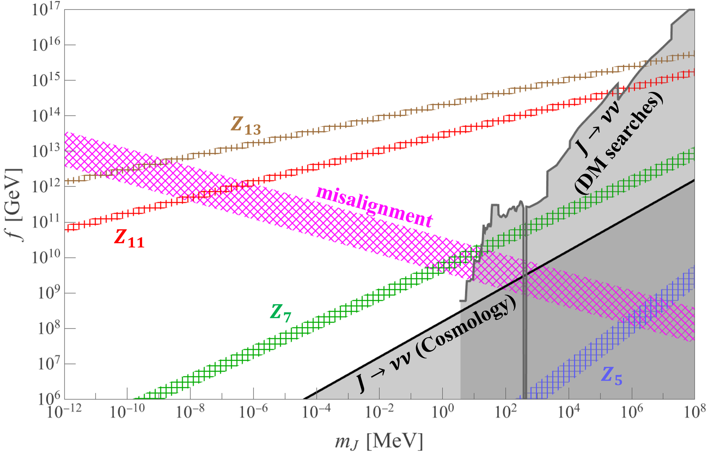
图注：\(\small\sl\) The magenta hatched region shows where the observed dark matter abundance is reproduced through the misalignment mechanism in Eq.~\(\eqref{eq: misalignment},\) with the initial angle varied over $0.5 \leq \theta_0 \leq 5$ and the Standard Model values of $g_*(T)$ adopted. Also shown are the mass predictions for the different $Z_N$ gauge symmetry models discussed in Table~\(\ref{tab: Phi^n}\) and Eq.~\(\eqref{eq: massdiscrete}.\) The corresponding colored hatched regions are obtained by varying $0.01 \leq \kappa \leq 1$. The grey-shaded regions indicate the cosmological and dark matter search constraints from majoron decay into neutrino pairs for the $Z_5$ case; the constraints become progressively weaker for larger $N$. We assume normal ordering of the active neutrino masses with the lightest neutrino mass set to zero, as discussed in Section~\(\ref{subsubsec: constraints from J to nunu}.\)
对应解读：对应“建议重点查看的图表”第2、3、5项，以及“关键图表逐图导读”中质量-破缺尺度、错位丰度和寿命约束的核心解读。
入选理由：这是最关键的总览图：同时给出错位机制再现暗物质丰度的区域、不同Z_N模型的质量预测带、κ系数不确定性，以及J→νν对Z_5的宇宙学和暗物质搜索约束。它直接支撑日报中关于Z_5被排除、Z_7等模型仍可行、质量标度由最低维算符控制的主要结论。
来源与置信度：\(arxiv_source\)；high；\(arxiv_source\) / main.tex:figure[2]
Fig03
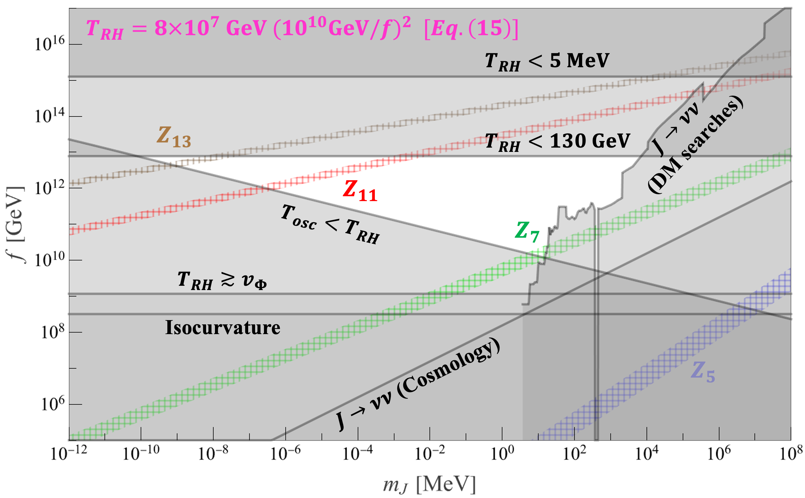
图注：\(\small\sl\) Constraints on the $(m_J,f)$ parameter space for majoron dark matter produced via the misalignment mechanism during an early matter-dominated era, assuming the observed dark matter abundance $\Omega_J h^2 = 0.12$ and taking $\theta_0=1$ in Eq.~\(\eqref{eq: misalgnmentinEMD}.\) Shown are the region with $T_{\rm osc}
入选理由：该图专门展示早期物质主导宇宙史下的(\(m_J,f\))参数空间，在满足Ω_J \(h^2=0\).12的前提下叠加T_RH、BBN、等曲率、leptogenesis和J→νν约束。它是理解熵稀释和非标准宇宙史如何改变可行区的最佳候选图。
来源与置信度：\(arxiv_source\)；high；\(arxiv_source\) / main.tex:figure[3]
Fig06
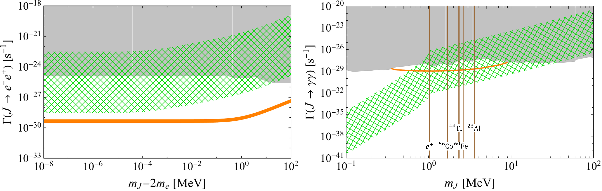
图注：\(\small\sl\) {\(\bf\) Left panel:} Decay width for $J\to e^-e^+$ in the gauged $Z_7$ model. The green hatched region shows the central 99.8\,\% interval obtained from our parameter scan, while the orange band indicates the estimated 24-month COSI sensitivity to the 511\,keV line. Its upper and lower edges correspond to diffusion-zone half-heights of $L=3\,{\rm kpc}$ and $L=\infty$, respectively. {\(\bf\) Right panel:} Decay width for $J\to\gamma\gamma$ in the same model. The corresponding green hatched region obtained from the same parameter scan is compared with an estimate of the projected COSI sensitivity to a monochromatic line at $E_\gamma=m_J/2$. In both panels, the gray-shaded regions show the constraints in Fig.~\(\ref{fig: ee gammagamma}.\)
对应解读：对应“建议重点查看的图表”第6项和“关键图表逐图导读”图6关于COSI、511 keV线与J→γγ单色线灵敏度的解读。
入选理由：该图直接比较Z_7模型参数扫描得到的J→e^+e^-与J→γγ衰变宽度预测带和24个月COSI投影灵敏度，是论文可检验预言的核心图。它同时呈现511 keV线、E_γ=\(m_J\)/2单色线和现有约束，最能支撑日报中未来MeV伽马射线探测的重点。
来源与置信度：\(arxiv_source\)；high；\(arxiv_source\) / main.tex:figure[6]
Fig04
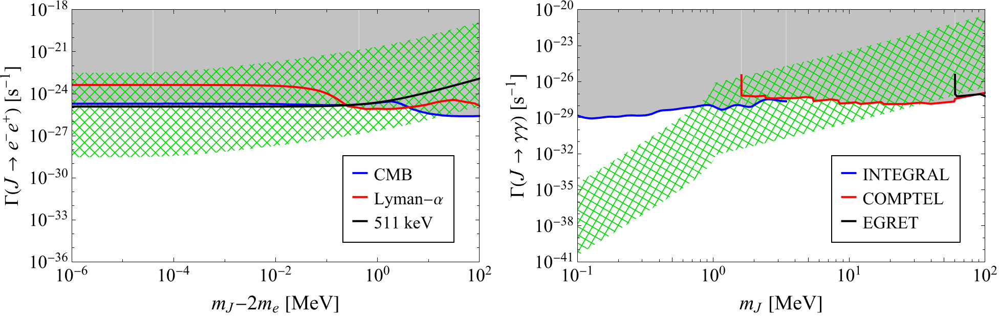
图注：\(\small\sl\) {\(\bf\) Left panel:} Range of $\Gamma[J \to e^-e^+]$ in the $Z_7$ symmetry model, including the Sommerfeld enhancement. The green hatched region shows the central 99.8\,\% interval obtained in our parameter scan as a function of $m_J-2m_e$. The blue and red lines show the upper limits from the CMB and Lyman-$\alpha$ forest, while the black line shows the 511\,keV line-search limit. {\(\bf\) Right panel:} Same as the left panel, but for $\Gamma[J \to \gamma\gamma]$ as a function of $m_J$. The blue, red, and black lines show the upper limits from gamma-ray line searches with INTEGRAL, COMPTEL, and EGRET, respectively.
对应解读：对应“建议重点查看的图表”第5、6项，以及“关键图表逐图导读”中寿命/衰变率约束和现有MeV伽马线限制的部分。
入选理由：该图给出Z_7模型中J→e^+e^-和J→γγ衰变宽度的扫描范围，并与CMB、Lyman-α、511 keV线搜索、INTEGRAL、COMPTEL、EGRET等现有限制作比较。它是判断当前约束是否已经触及模型预测、以及未来COSI为何重要的必要前置图。
来源与置信度：\(arxiv_source\)；high；\(arxiv_source\) / main.tex:figure[4]
Fig07
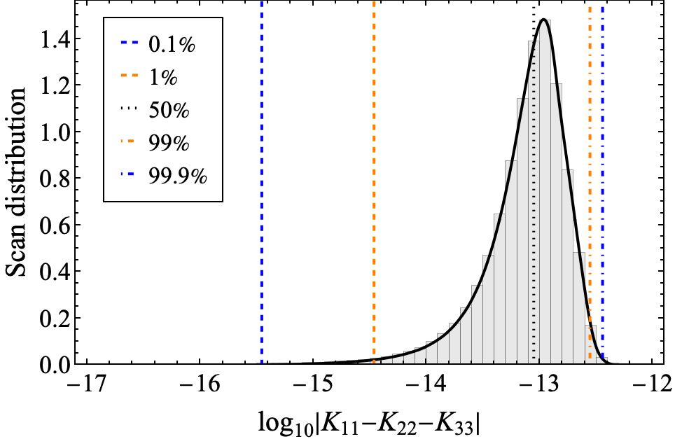
图注：\(\small\sl\) Scan distribution of the combination $|K_{11}-K_{22}-K_{33}|$, which controls the decay widths into $e^-e^+$ and $\gamma\gamma$. The distribution is obtained from $10^7$ points in the minimal majoron model, using the parameter ranges and assumptions described in the text. The central 99.8\% interval is indicated by the vertical dashed lines and corresponds to $3.5\times10^{-16}\leq |K_{11}-K_{22}-K_{33}|\leq 3.6\times10^{-13}$.
对应解读：对应模型拟合段落中关于seesaw/Yukawa参数扫描、衰变率不确定性和预测带来源的讨论。
入选理由：该图展示控制J→e^+e^-和J→γγ衰变宽度的组合|\(K_11-K_22-K_33\)|的扫描分布，并给出99.8%区间。虽然不是主要观测约束图，但它解释了Fig04和Fig06中绿色预测带的统计来源，对理解模型参数退化和理论不确定性有辅助价值。
来源与置信度：\(arxiv_source\)；high；\(arxiv_source\) / main.tex:figure[7]
强相关工作
这篇工作属于 Majoron 暗物质、伪南部-戈德斯通暗物质、离散规范对称性保护低能偶然对称性三条文献线的交叉。应与早期 Majoron 模型、seesaw 与 \(B-L\) 破缺模型、以及“量子引力不保护全局对称性”的模型建造论文一起读。检索关键词包括 \(\text{majoron dark matter}\)、\(\text{pseudo Nambu Goldstone dark matter}\)、\(\text{discrete gauge symmetry}\)、\(\text{accidental }B-L\)、\(\text{Planck suppressed operators}\)。
在观测侧，它与轻衰变暗物质的 MeV 伽马射线搜索、\(511\,\mathrm{keV}\) 线解释、COSI 灵敏度预测和双光子线约束相关。应特别比较那些把 \(\mathrm{MeV}\) 质量暗物质衰变到 \(e^+e^-\) 或 \(\gamma\gamma\) 的工作，以及讨论银河中心 \(511\,\mathrm{keV}\) 线天体物理背景的论文。检索关键词包括 \(\text{MeV dark matter decay}\)、\(\text{511 keV line dark matter}\)、\(\text{COSI dark matter line sensitivity}\)、\(\text{gamma-ray line decaying dark matter}\)。
若关注张力或相反观点，应查两类文献：一类认为 \(511\,\mathrm{keV}\) 线主要由常规天体源解释，暗物质贡献受形态和正电子传播强约束；另一类讨论高维算符系数可能被紫外物理进一步压低或增强，从而削弱简单 \(\mathcal{O}(1)\) 估计。本文没有对应单一命名天体事件或瞬变源，因此同源链接不适用；可从 arXiv、NASA ADS 和 COSI 官方科学页面检索同类约束。
同一事件 / 同类源线索：
相似工作：
基础理论 / 方法工作：
- https://doi.org/10.1016/0370-2693(81)90470-6
- https://doi.org/10.1103/PhysRevLett.44.912
- https://doi.org/10.1016/0370-2693(79)90559-6
- https://doi.org/10.1103/PhysRevLett.43.1566
相反观点 / 张力线索：
6. Fast Radio Bursts Trace Cosmic Star Formation with Little Delay
- 来源：arXiv / astro-ph.HE
- 链接：https://arxiv.org/abs/2607.09109v1
- 作者：Yi-Ying Wang, Yin-Jie Li, Yi-Zhong Fan
- 评分：novelty 7/10，importance 8/10，relevance 8/10，final 8.70/10
- 推荐理由：基于CHIME/FRB层级Bayesian正向建模，认为主FRB族群几乎无延迟跟踪恒星形成，支持年轻磁星/核心坍缩起源；对高能瞬变和致密天体读者有较高价值。
中文题目：快速射电暴几乎无延迟地追踪宇宙恒星形成史
做了什么：这篇论文用正向建模和层级贝叶斯方法重新分析 CHIME/FRB 的快速射电暴族群，核心问题是：FRB 的宇宙发生率是像年轻恒星遗迹那样几乎同步于恒星形成，还是像双致密星并合那样相对恒星形成有数十亿年延迟。作者把 CHIME 目录样本、基带流量信息和有宿主红移的定位样本联合起来，并用注入模拟处理巡天选择函数。主要结论是，FRB 发生率峰值与宇宙恒星形成率峰值基本一致，平均延迟约为 \(0.1\text{--}0.3\,\mathrm{Gyr}\)，在 \(2\sigma\) 水平内仍与零延迟相容。这削弱了把主导 FRB 族群解释为长延迟双致密星并合产物的说法，更支持与年轻磁星、核心坍缩超新星后遗迹相关的通道。
为什么重要：FRB 起源争论的一个关键判据不是单个源能否由某种天体产生，而是整体宇宙发生率随红移如何演化。如果主导族群需要多 \(\mathrm{Gyr}\) 延迟，它会更像双中子星或白矮星并合；如果几乎同步于恒星形成，它就更自然地指向年轻大质量恒星死亡后的磁星。本文重要之处在于把 CHIME 选择效应、非定位样本和定位宿主红移放进同一个层级框架，而不是直接把观测红移分布当作真实发生率。
理论 / 观测 / 仪器方法价值：对理论而言，本文给 FRB 前身星模型提供了一个族群层面的时间尺度约束：主导通道不能普遍等待数十亿年。对观测而言，它强调 FRB 红移分布必须与探测阈值、流量函数、色散量选择和定位偏差一起解释。对方法而言，注入恢复式选择函数和层级贝叶斯正向建模比简单拟合 \(N(z)\) 更可靠，可作为以后 SKA、DSA、CHORD 等 FRB 样本分析的模板。
为什么应该关注：如果你关心 FRB 是磁星、并合、活动星系核环境还是多通道混合，这篇文章直接约束了最难绕开的量：族群平均延迟时间。它还提醒读者，所谓“FRB 红移分布支持老族群”的结论很容易受选择函数和样本拼接影响。即使你不研究 FRB，本文也是一个典型案例：怎样在强选择效应巡天中从观测目录反推真实宇宙发生率。
展开详细解读：文章讲解、背景、理论、重点章节、图表与相关工作
文章详细讲解
科学问题：FRB 的能量释放机制可以有很多微观模型，但族群层面的关键问题是前身星年龄。若 FRB 主要来自核心坍缩超新星后形成的年轻磁星，其发生率应大体跟随宇宙恒星形成率 \(\mathrm{CSFH}\)，只允许几十到几百 \(\mathrm{Myr}\) 的短延迟。若主导通道是双中子星、白矮星并合或其他老年系统，观测到的 FRB 体积发生率应是 \(\mathrm{CSFH}\) 与宽延迟时间分布卷积后的结果，峰值会向低红移移动。本文要判定的正是这两类图像在 CHIME 数据下哪一个更被支持。
作者怎么做：论文采用正向建模，而不是先把每个 FRB 转成红移再直接画发生率。模型从宇宙 FRB 体积率、能量或流量函数、宿主与星际/星系际介质色散量分布、望远镜探测阈值和 CHIME 巡天选择函数出发，生成可观测目录。选择函数用注入框架自洽处理，即把模拟信号注入到探测流程或等效响应中，估计不同流量、宽度、色散量和天空位置下的检出概率。随后作者把 CHIME/FRB 目录样本、基带流量信息和定位宿主红移样本放入层级贝叶斯似然，联合约束发生率演化和延迟时间模型。
关键结果：在多种延迟时间分布假设下，重建的 FRB 发生率都在与宇宙恒星形成史相近的红移处达到峰值。论文给出的平均延迟约为 \(0.1\text{--}0.3\,\mathrm{Gyr}\)，并且零延迟模型在 \(2\sigma\) 内没有被排除。这与若干此前声称存在多 \(\mathrm{Gyr}\) 延迟、从而支持致密双星并合起源的结论不同。作者的解释是，先前结果可能对样本选择、流量截断、未定位 FRB 的红移代理、或选择函数建模较敏感；在更完整的正向框架下，CHIME 样本并不要求老族群主导。
局限和下一步：这一结论主要约束“主导 FRB 族群”的平均行为，并不排除存在少量长延迟通道，尤其是重复暴、非重复暴、高能量端或特定宿主环境子样本可能有不同来源。FRB 的红移估计仍依赖色散量分解，定位样本仍小且有宿主识别偏差；CHIME 的仪器响应、射电散射、宽度选择和频谱结构也会影响可探测体积。下一步应使用更大定位样本、独立巡天的选择函数、重复暴与一次性暴的分层模型，以及把宿主星系恒星质量、恒星形成率和金属丰度纳入同一个延迟时间框架。
关键结果是怎么做出来的
本文证据链的第一步是样本合并。作者没有只使用有宿主红移的 FRB，因为那会严重偏向易定位、亮、环境简单或后续观测充分的事件；也没有只用 CHIME 大目录的观测分布，因为多数事件缺乏直接红移。论文将 CHIME/FRB 目录样本、基带流量测量和一组有宿主红移的定位 FRB 联合起来，让非定位样本主要约束流量、色散量和探测统计，让定位样本锚定红移尺度。读者应特别注意论文中对样本切割、流量完整性和是否包含重复暴的定义，因为这些选择会直接影响发生率演化。
第二步是选择函数。CHIME 的观测目录不是宇宙 FRB 的随机抽样；检出概率依赖于入射流量、脉冲宽度、色散量、散射尾、频谱结构、天区曝光和搜索管线阈值。作者使用注入框架来计算这些变量下的恢复概率，相当于把真实族群通过“望远镜加管线”的滤波器再与数据比较。这一点是本文区别于简单 \(\log N\text{--}\log S\) 或直接红移直方图拟合的关键。
第三步是层级贝叶斯比较不同延迟时间模型。给定宇宙恒星形成率 \(\dot{\rho}_\star(z)\) 和延迟时间分布 \(P(t_{\rm d})\)，FRB 发生率 \(R_{\rm FRB}(z)\) 由卷积得到；再结合能量函数和探测选择函数预测观测目录。论文报告的核心统计结论不是某一个单独红移 bin 的异常，而是在一系列延迟模型下后验都偏向短平均延迟，典型均值为 \(0.1\text{--}0.3\,\mathrm{Gyr}\)。若文中给出 Bayes 因子、后验可信区间或 \(\Delta\ln\mathcal{Z}\)，应把这些数值与“长延迟模型是否被排除”对应起来读，而不要只看最佳拟合曲线。
支撑结论的图表通常应包括：观测与模型预测的色散量分布、流量或 fluence 分布、红移分布、以及重建 \(R_{\rm FRB}(z)\) 与 \(\dot{\rho}_\star(z)\) 的比较图。最重要的诊断是模型是否能同时解释 CHIME 大样本和定位红移样本；如果只在其中一个数据集上表现好，短延迟结论就会变弱。读者还应检查残差是否集中在高 \(\mathrm{DM}\)、低 fluence 或宽脉冲区域，因为这些区域最容易暴露选择函数误差。
系统误差方面，关键包括银河系晕和宿主星系 \(\mathrm{DM}\) 的假设、星系际介质涨落、能量函数形状、FRB 频谱指数、重复暴处理、定位样本代表性和 CHIME 注入模拟是否覆盖真实信号形态。稳健性检验应表现为更换延迟时间分布形式、改变 \(\mathrm{DM}_{\rm host}\) 先验、改变能量函数或流量阈值后，短延迟结论仍保留。本文摘要声称“across a range of delay-time models”均稳健，读者应在正文和附录中重点核对这些替代模型的后验是否真的都排除了多 \(\mathrm{Gyr}\) 均值。
展开背景、理论、公式、模型、章节和图表导读
背景知识
快速射电暴是毫秒量级、亮温极高的射电脉冲。自 Lorimer burst 以来，FRB 已从少数奇异事件变成大样本族群问题；CHIME/FRB 尤其因为大视场和日常巡天能力，把样本量推到可以做统计宇宙学和族群演化的程度。现在的问题不再只是“某个 FRB 能不能由磁星爆发解释”，而是“绝大多数可探测 FRB 的前身星年龄分布是什么”。
历史上，FRB 起源模型大致分为年轻通道和老年通道。年轻通道包括核心坍缩超新星后形成的磁星、年轻脉冲星风星云、恒星形成区中的致密天体活动等；老年通道包括双中子星并合、白矮星相关并合、吸积诱发坍缩或其他需要长时间轨道演化的系统。两类模型都可以在单源层面构造出射电爆发，但它们对宇宙发生率随红移的预测很不同，因此红移演化是强约束。
观测背景的难点在于，FRB 的距离通常不是直接测得，而是从总色散量中扣除银河系、银河系晕、宿主和局域环境贡献后估计星系际介质部分，再映射到红移。只有定位到宿主星系的事件有可靠红移，但定位样本远小于总样本，且受亮度、重复性、阵列配置和跟进观测偏差影响。因此，把定位 FRB 的红移分布直接等同于总体分布是危险的。
为什么现在值得重新看：CHIME 大样本、基带数据和注入恢复框架使得 FRB 族群分析从“事后修正选择效应”转向“把选择效应写进生成模型”。与此同时，已有工作对 FRB 是否存在长延迟给出了不一致结论，有的把观测红移分布解释为类似双中子星并合的延迟，有的则发现与恒星形成更接近。样本量和方法都到了可以检验这些差异来源的阶段。
该领域常见误区有三点。第一，把高 \(\mathrm{DM}\) 事件简单看成高红移事件，而忽略宿主和局域环境贡献。第二，把 FRB 发生率峰值低于恒星形成峰值直接解释为长延迟，而忽略高红移低 fluence 事件更难探测。第三，把“存在某些老宿主 FRB”误解为“主导族群是老通道”；族群平均延迟和个别宿主类型不是同一问题。
基础理论 / 方法脉络
最基础的物理图像是：某类前身星在恒星形成之后经过一段延迟 \(t_{\rm d}\) 产生 FRB。若 \(t_{\rm d}\) 很短，FRB 体积发生率 \(R_{\rm FRB}(z)\) 将近似正比于宇宙恒星形成率密度 \(\dot{\rho}_\star(z)\)。若 \(t_{\rm d}\) 分布宽且均值达到数 \(\mathrm{Gyr}\)，高红移形成的恒星会在较低红移才产生 FRB，导致发生率峰值后移。本文正是通过这个时间卷积来区分年轻磁星类通道和致密双星并合类通道。
FRB 的可观测量主要包括 fluence、脉冲宽度、色散量 \(\mathrm{DM}\)、天空位置、是否重复以及有无宿主红移。对于非定位事件，\(\mathrm{DM}\) 是距离信息的主要代理，但总 \(\mathrm{DM}\) 是多项贡献之和：银河系盘、银河系晕、星系际介质、宿主星系和源局域环境。由于 \(\mathrm{DM}_{\rm host}\) 需要除以 \((1+z)\) 进入观测系，且其本身分布很宽，红移估计存在不可忽略的退化。
从观测选择看，望远镜并不以同一效率探测所有 FRB。低 fluence、宽脉冲、高散射、高 \(\mathrm{DM}\)、频谱落在 CHIME 频带边缘或发生在低增益天区的事件更容易漏掉。因此模型必须预测“被探测到的分布”，而不是只预测“宇宙真实分布”。注入模拟的价值在于用实际或近似实际的搜索流程估计检出概率 \(S(\boldsymbol{x})\)，其中 \(\boldsymbol{x}\) 包含 fluence、宽度、\(\mathrm{DM}\)、天区和频谱参数。
本文使用的统计图像是层级贝叶斯。底层是每个 FRB 的潜在真实参数，如红移 \(z\)、能量 \(E\)、宿主 \(\mathrm{DM}_{\rm host}\)；上层是族群超参数，如延迟时间分布、能量函数斜率、发生率归一化和宿主色散量分布。观测数据是这些潜变量经过宇宙传播和仪器选择后的结果。这样做的好处是可以同时利用有红移和无红移样本，并把不确定性传递到延迟时间后验。
常见退化包括：能量函数演化与发生率演化的退化，高红移事件少可能是发生率低也可能是探测不完全；\(\mathrm{DM}_{\rm host}\) 与红移的退化，高 \(\mathrm{DM}\) 可能来自远距离也可能来自宿主环境；重复暴和非重复暴混合会影响能量函数和发生率归一化。本文结论是否可靠，取决于这些退化是否通过联合数据和稳健性检验得到足够控制。
公式与推导
第一步从宇宙恒星形成率密度出发。记 \(\dot{\rho}_\star(z)\) 为单位共动体积、单位源系时间的恒星形成率密度，\(t(z)\) 为宇宙年龄。如果 FRB 前身星在形成后延迟 \(t_{\rm d}\) 爆发，则体积发生率可写为卷积：
这里 \(\mathcal{A}\) 是单位恒星形成质量产生 FRB 的效率，\(P(t_{\rm d}\mid\boldsymbol{\theta}_{\rm d})\) 是延迟时间分布，\(z_f\) 是由宇宙时间反解得到的形成红移。短延迟极限下，\(R_{\rm FRB}(z)\approx\mathcal{A}\dot{\rho}_\star(z)\)。
第二步需要把红移和观测时间联系起来。平直 \(\Lambda\mathrm{CDM}\) 中常用关系为：
这里 \(H_0\)、\(\Omega_{\rm m}\)、\(\Omega_\Lambda\) 是宇宙学参数。这个式子说明同样的 \(\Delta z\) 在不同红移对应不同宇宙时间间隔，因此“\(0.3\,\mathrm{Gyr}\) 延迟”在高红移处会造成更明显的红移峰位变化。
第三步从体积发生率得到真实事件数。单位观测时间内、红移区间 \(dz\) 的全天事件数为：
因子 \((1+z)^{-1}\) 是源系时间到观测者时间的时间膨胀，\(D_c(z)\) 是共动距离。这个式子给出红移分布的基础，但还没有包括能量函数和仪器选择。
第四步把爆发能量映射到观测 fluence。若源系等效各向同性能量为 \(E\)，观测频带内 fluence 近似为：
这里 \(D_L\) 是光度距离，\(\Delta\nu_{\rm eff}\) 是有效带宽，\(K(z,\gamma)\) 是由频谱指数 \(\gamma\) 和频带红移导致的 \(K\)-校正。该关系说明高红移事件会因距离平方和带宽校正迅速变暗。
第五步写入能量函数。若 FRB 能量分布为 \(\phi(E\mid\boldsymbol{\theta}_E)\)，则给定红移的可观测 fluence 分布为：
这里 \(\boldsymbol{\Theta}\) 表示所有族群超参数。这个式子体现了发生率演化和能量函数之间的退化：少数高红移事件既可来自高发生率，也可来自更宽的高能尾。
第六步引入色散量。观测总色散量可分解为：
其中 \(\mathrm{DM}_{\rm MW}\) 为银河系盘贡献，\(\mathrm{DM}_{\rm halo}\) 为银河系晕贡献，\(\mathrm{DM}_{\rm IGM}\) 为星系际介质贡献，\(\mathrm{DM}_{\rm host}\) 为宿主和局域环境源系贡献。该式是非定位 FRB 距离信息的核心，也是系统误差的重要来源。
第七步把选择函数写成观测强度。设注入恢复得到检出概率 \(S(F,W,\mathrm{DM},\Omega)\)，其中 \(W\) 是脉冲宽度，\(\Omega\) 是天区方向，则探测到的泊松强度为：
其中 \(T_{\rm obs}\) 是曝光时间，\(\boldsymbol{x}\) 表示观测变量集合。真实族群只有乘上 \(S\) 后才能与 CHIME 目录比较。
第八步是目录似然。对观测到的 \(N\) 个事件，非齐次泊松过程似然可写为：
第一项奖励模型在观测事件位置给出高概率，第二项惩罚模型预测过多可探测事件。定位红移样本可在 \(\boldsymbol{x}_i\) 中加入 \(z_i\)，无红移样本则对潜在 \(z\) 积分。
第九步给出后验和模型比较：
这里 \(\pi(\boldsymbol{\Theta})\) 是先验，\(\mathcal{Z}\) 是贝叶斯证据。比较短延迟与长延迟模型时，后验均值、可信区间和证据比共同决定“多 \(\mathrm{Gyr}\) 延迟”是否被排除。
模型拟合 / 应用方法
本文拟合的核心超参数包括 FRB 发生率归一化、延迟时间分布参数、能量或光度函数参数、宿主 \(\mathrm{DM}\) 分布、可能的频谱/宽度分布，以及与选择函数相关的有效探测效率。延迟时间模型可能采用窄分布、幂律分布、对数正态分布或其他参数化形式；不管具体形式如何，关键输出是平均延迟和 \(R_{\rm FRB}(z)\) 的峰值位置。
似然应理解为“生成观测目录”的似然，而不是简单的 \(\chi^2\) 拟合直方图。对每个模拟族群，模型需要经过 fluence 阈值、宽度和 \(\mathrm{DM}\) 相关检出效率、天区曝光等选择函数后，才与观测到的 CHIME 事件比较。有宿主红移的 FRB 对红移尺度约束强，但数量少；无宿主红移的大目录对统计形状约束强，但红移信息间接。层级模型的价值在于把这两类信息合并，而不是让其中一种样本支配全部结论。
参数退化是读者检查模型可靠性的重点。若能量函数高能端更肥，高红移事件更容易被探测，可能降低对高红移高发生率的需求；若宿主 \(\mathrm{DM}\) 先验更高，则同一 \(\mathrm{DM}_{\rm obs}\) 对应的红移会变低，也可能把发生率峰值推向低红移；若选择函数低估高 \(\mathrm{DM}\) 或宽脉冲漏检，则模型可能错误地认为高红移 FRB 本来就少。这些退化都可能伪造长延迟或短延迟信号。
残差诊断应看多维分布，而非只看一维红移曲线。一个可信模型应同时重现 fluence 分布、\(\mathrm{DM}\) 分布、宽度分布、定位样本红移分布和事件总数。如果模型在 \(\mathrm{DM}\) 高端系统性欠预测，说明高红移或高宿主环境尾部可能处理不足；如果在低 fluence 端欠预测，可能是选择函数或能量函数斜率有问题。短延迟结论只有在这些残差没有明显结构时才有说服力。
模型可能失败的场景包括：FRB 实际上由多个通道混合组成，而论文使用单一主导族群模型；重复暴和非重复暴的能量函数或宿主环境不同；CHIME 频段下的可见族群不代表全频段 FRB；定位样本宿主红移分布受强烈后续观测选择影响。实际应用中，这类模型最适合用来比较“主导族群平均延迟”，不应过度解释为排除了所有并合型 FRB。
重点章节 / 结果段落怎么读
数据/样本部分应首先读清楚作者如何定义 CHIME/FRB 目录样本、基带 fluence 样本和定位宿主红移样本。重点看是否剔除了低信噪边缘事件、是否区分重复暴、是否采用统一 fluence 标定，以及定位样本是否来自 CHIME 或合并外部定位事件。样本定义决定后面所有发生率结论的适用范围。
选择函数和注入框架部分是方法核心。读者应检查注入信号覆盖的参数范围，包括 fluence、宽度、\(\mathrm{DM}\)、散射、天空位置和频谱形状；还要看恢复标准是否与真实目录触发一致。如果选择函数只是一维阈值近似，结论会弱；如果是多维注入恢复，可信度更高。
族群模型部分要看 \(R_{\rm FRB}(z)\)、能量函数、\(\mathrm{DM}_{\rm host}\) 和延迟时间分布的参数化。特别要注意作者是否允许能量函数随红移演化，是否固定宇宙恒星形成史形式，以及延迟时间下限如何设定。这些假设决定“短延迟”是否是数据要求，还是模型空间限制的结果。
结果部分应重点读后验图和模型比较表。看平均延迟 \(\langle t_{\rm d}\rangle\) 的可信区间、零延迟是否落在高后验区、长延迟模型的证据差异，以及重建发生率峰值与 \(\mathrm{CSFH}\) 峰值的相对位置。不要只看最佳拟合曲线，必须看后验宽度。
讨论和稳健性检验部分要看作者如何处理与前人多 \(\mathrm{Gyr}\) 延迟结论的差异。关键是替换 \(\mathrm{DM}_{\rm host}\) 先验、能量函数形式、样本切割、选择函数版本和延迟模型后，短延迟结论是否仍成立。若附录中有 mock recovery 或 posterior predictive checks，也应优先阅读。
建议重点查看的图表
-
样本分布图：检查 CHIME 目录、基带样本和定位红移样本在 fluence、\(\mathrm{DM}\)、宽度和信噪比上的覆盖范围，判断定位样本是否代表总体。
-
选择函数或注入恢复图：看检出概率随 fluence、\(\mathrm{DM}\)、宽度和天空位置如何变化，尤其关注高 \(\mathrm{DM}\) 和宽脉冲区域是否有急剧漏检。
-
\(R_{\rm FRB}(z)\) 与宇宙恒星形成率比较图：这是核心图。应看 FRB 发生率峰值位置、可信带宽度，以及长延迟模型曲线是否明显偏向低红移。
-
延迟时间后验图：检查 \(\langle t_{\rm d}\rangle\) 或延迟模型参数的边际后验，确认 \(0\) 延迟是否在 \(2\sigma\) 内、多 \(\mathrm{Gyr}\) 延迟是否落在低后验区。
-
Posterior predictive 分布图：看模型预测是否同时匹配观测 fluence、\(\mathrm{DM}\)、红移和事件数；单一维度匹配不够。
-
模型比较表：检查不同延迟时间分布、不同 \(\mathrm{DM}_{\rm host}\) 先验和不同能量函数下的证据、信息准则或后验摘要。
-
残差或累积分布诊断：重点看高 fluence、高 \(\mathrm{DM}\)、低 fluence 阈值附近是否存在系统偏差，因为这些区域最可能改变发生率演化判断。
关键图表逐图导读
图 1：若论文给出样本概览图，横轴通常是 \(\mathrm{DM}\)、fluence 或红移，纵轴是事件数或累积分布。数据点应区分 CHIME 总样本、基带样本和定位样本。读图时不要把定位样本的红移直方图当作总体红移分布；它只是层级模型中的一个锚点。关键看定位样本是否集中在高 fluence、低 \(\mathrm{DM}\) 或特定宽度范围。
图 2：选择函数图通常以 fluence 或信噪比为横轴，以检出概率为纵轴，也可能分不同 \(\mathrm{DM}\) 或宽度切片。模型线或颜色图显示注入信号被恢复的比例。读图陷阱是只看 fluence 阈值而忽略宽度和散射；真实 CHIME 选择效应是多维的，高 \(\mathrm{DM}\) 宽脉冲事件即使 fluence 不低也可能漏检。
图 3：核心发生率图应把 \(R_{\rm FRB}(z)\) 的后验可信带与 \(\dot{\rho}_\star(z)\) 形状放在一起。横轴为红移 \(z\)，纵轴为归一化发生率或共动体积率。若 FRB 后验峰值与恒星形成峰值重合或接近，支持短延迟；若长延迟模型曲线向低红移移动但落在可信带之外，则说明多 \(\mathrm{Gyr}\) 延迟不受支持。注意归一化通常任意缩放，真正重要的是形状和峰位。
图 4：延迟时间后验图可能显示 \(\langle t_{\rm d}\rangle\)、幂律指数或对数正态参数。横轴是延迟时间，纵轴是边际后验概率。应看 \(0.1\text{--}0.3\,\mathrm{Gyr}\) 区域是否为高后验区，\(0\) 是否在 \(2\sigma\) 区间内，以及 \(>1\,\mathrm{Gyr}\) 或多 \(\mathrm{Gyr}\) 区域的后验质量有多少。
图 5：posterior predictive checks 通常比较模型预测与观测的 fluence、\(\mathrm{DM}\) 或红移累积分布。横轴是观测量，纵轴是累积事件比例或概率密度；阴影带为模型后验预测。读图时要看观测曲线是否系统性贴着阴影带边缘，特别是高 \(\mathrm{DM}\) 和低 fluence 端。如果这些端点偏离，延迟时间约束可能受选择函数系统误差影响。
图 6：稳健性或模型比较表/图应列出不同延迟模型、宿主 \(\mathrm{DM}\) 先验、能量函数设定下的后验均值和证据。读者应关注结论是否只由某一个基准模型给出。如果所有合理变体都给出短延迟，本文主张才算强；若某些变体允许长延迟，应进一步看那些变体是否同样能拟合全部观测分布。
论文原图 / 可嵌入图片
Fig02
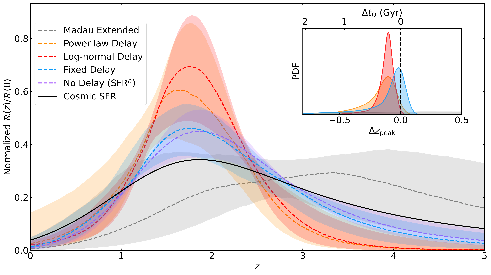
图注：Normalized intrinsic FRB event rate reconstructed for different DTD models. The shaded regions represent the 68\% credible intervals, while the dashed lines denote the medians. The inset shows the offset in redshift between the FRB rate peak and the cosmic SFR peak.
对应解读：对应“建议重点查看的图表”第3项和“关键图表逐图导读”图3：FRB本征发生率随红移的重建及其与宇宙恒星形成率峰值的比较。
入选理由：这是支撑论文主结论的核心图，直接展示不同延迟时间分布模型下归一化本征FRB发生率的后验中位数和68%可信区间，并给出FRB率峰值相对宇宙恒星形成率峰值的红移偏移。它最能检验日报强调的关键判断：FRB发生率峰值是否与恒星形成峰值接近，以及长延迟模型是否把峰值推向低红移。
来源与置信度：\(arxiv_source\)；high；\(arxiv_source\) / main.tex:figure[2]
Fig06
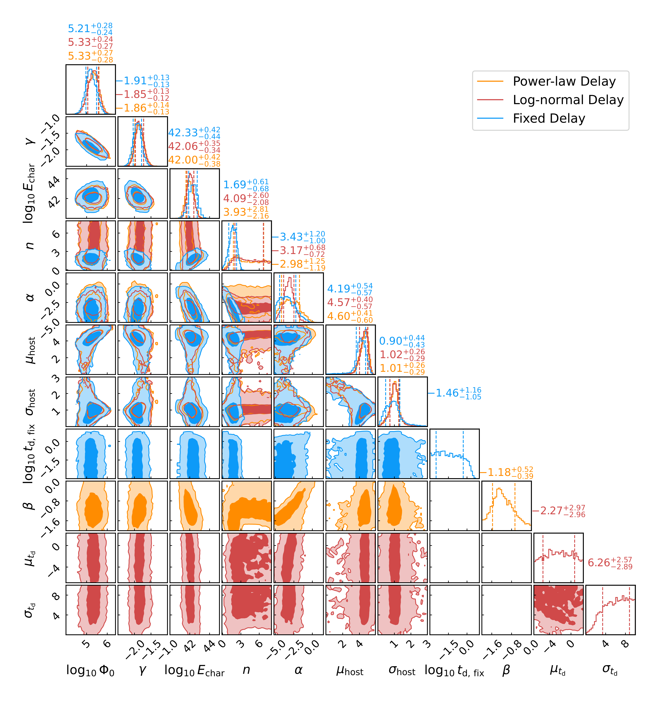
图注：Posterior distribution of hyper-parameters of the power-law delay, the log-normal delay, and the fixed delay models. The contours represent the 68\% and 99\% credible intervals, respectively. The values and dashed lines in marginal distribution represent the 68\% credible intervals.
对应解读：对应“建议重点查看的图表”第4项和“关键图表逐图导读”图4：延迟时间模型超参数的后验分布。
入选理由：该图直接给出幂律延迟、对数正态延迟和固定延迟模型的超参数后验及68%、99%可信区间，是判断平均延迟是否集中在0.1--0.3 Gyr、零延迟是否仍在允许范围内以及多Gyr延迟是否被压低的关键证据。相比只看发生率曲线，它更直接对应论文关于延迟时间的定量结论。
来源与置信度：\(arxiv_source\)；high；\(arxiv_source\) / main.tex:figure[6]
Fig01
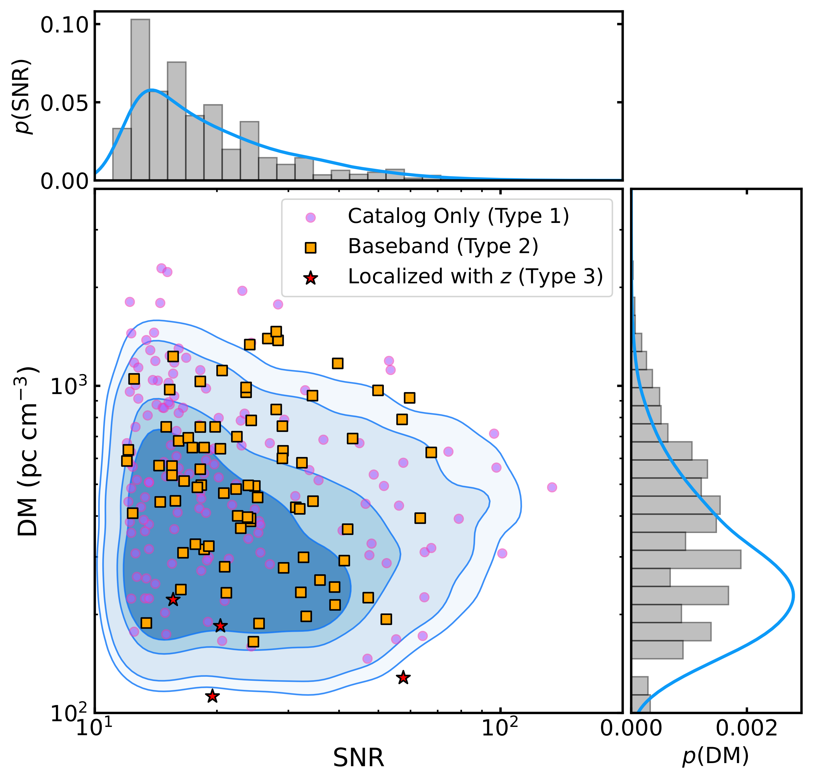
图注：Joint and marginal distributions of the S/N and DM for the CHIME/FRB Catalog~1 sample. The observed bursts are categorized into three subsamples. The blue contours and solid lines show the 2D and 1D probability density functions of the SFH-tracking model (evaluated at the maximum a posteriori parameters), which naturally incorporates the instrumental selection effects. The contours denote the 50\%, 68\%, 90\% and 95\% credible regions.
对应解读：对应“建议重点查看的图表”第1项、第5项和第7项，以及“关键图表逐图导读”图1/图5：CHIME样本在S/N与DM空间中的观测分布和模型预测检验。
入选理由：该图展示CHIME/FRB Catalog 1样本按子样本划分后的S/N与DM联合及边缘分布，并叠加SFH-tracking模型在最大后验参数下的二维和一维概率密度及可信区域。它可用于检查模型是否同时复现观测DM和信噪比分布，尤其是高DM端或低S/N阈值附近是否存在系统偏差；这正是日报中强调的选择效应和残差诊断重点。
来源与置信度：\(arxiv_source\)；high；\(arxiv_source\) / main.tex:figure[1]
Fig05
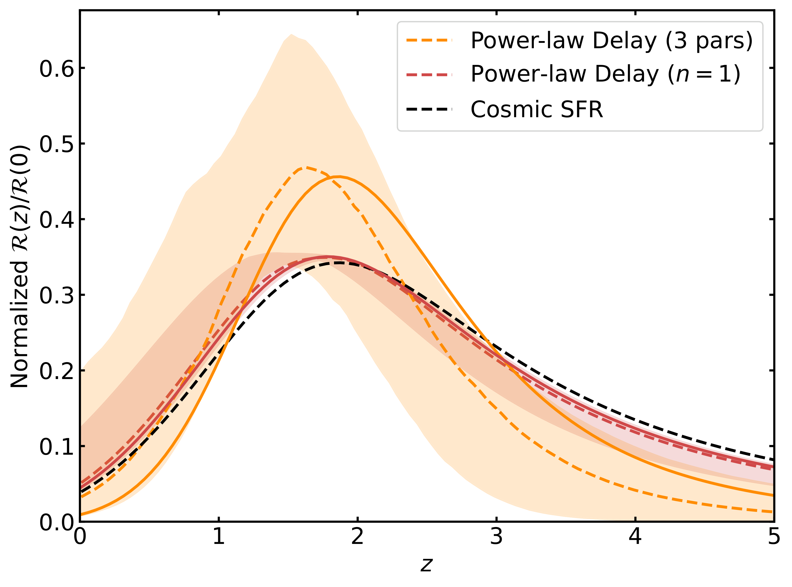
图注：The normalized intrinsic FRB event rate reconstructed for the power-law DTD models under different parameterizations. The shaded regions represent the 68\% credible intervals, while the dashed and solid lines indicate the medians and the best-fit values, respectively.
对应解读：对应“建议重点查看的图表”第3项、第6项和“模型拟合”中关于不同延迟时间参数化稳健性的讨论。
入选理由：该图专门比较幂律DTD模型在不同参数化下重建的本征FRB发生率，包含68%可信区间、中位数和最佳拟合曲线。它能检验短延迟结论是否依赖某一种幂律延迟参数化，因而是对Fig02核心发生率图的重要稳健性补充。
来源与置信度：\(arxiv_source\)；high；\(arxiv_source\) / main.tex:figure[5]
Fig03
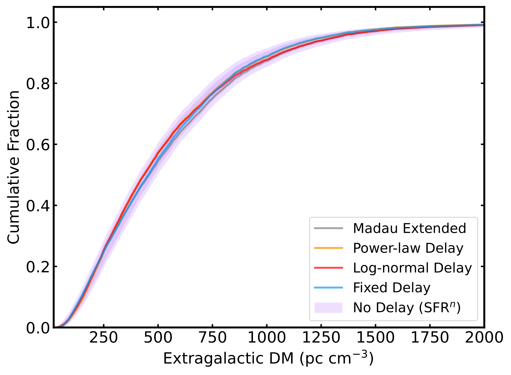
图注：The cumulative extragalactic DM for the different distribution models. The shaded regions represent the 68\% credible intervals of the SFH-tracking model. The solid lines represent the best-fit values.
对应解读：对应“建议重点查看的图表”第5项和第7项，以及“模型拟合”中关于DM分布、宿主DM退化和posterior predictive检查的段落。
入选理由：该图展示不同分布模型下累积河外DM分布，并给出SFH-tracking模型的68%可信区间和最佳拟合值。由于论文的红移约束很大程度依赖DM分解，DM累积分布是否被模型正确复现直接关系到发生率峰值和延迟时间推断的可靠性，特别适合检查高DM端是否存在系统性欠预测。
来源与置信度：\(arxiv_source\)；high；\(arxiv_source\) / main.tex:figure[3]
Fig09
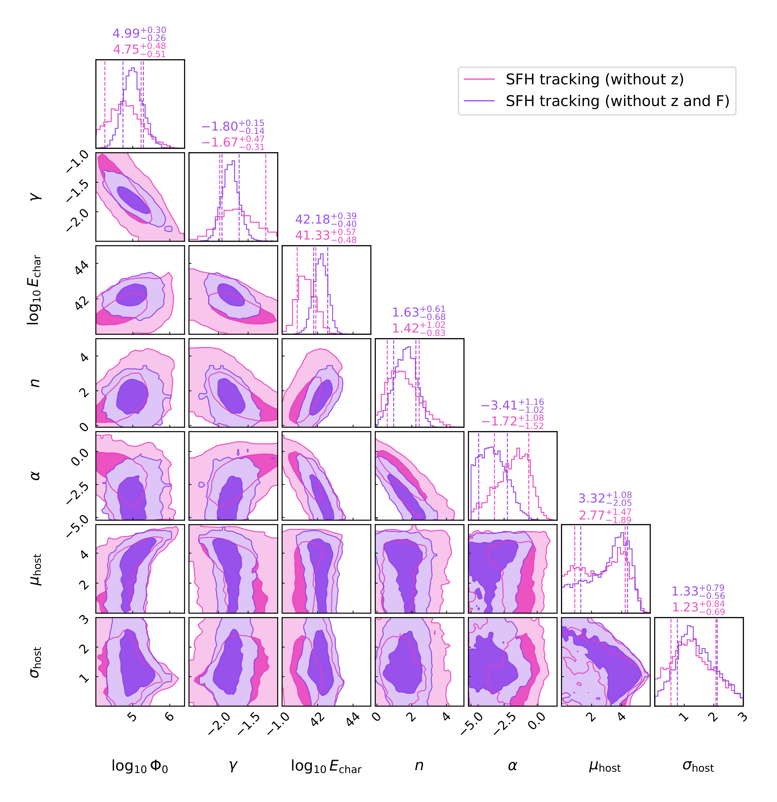
图注：Posterior distribution of hyper-parameters of the SFH tracking models using different types of the observations. The contours represent the 68\% and 99\% credible intervals, respectively. The values and dashed lines in marginal distribution represent the 68\% credible intervals.
对应解读：对应“建议重点查看的图表”第6项和“模型拟合”中关于联合使用CHIME目录、基带流量和定位红移样本的层级贝叶斯约束。
入选理由：该图比较SFH-tracking模型在使用不同观测类型时的超参数后验分布，可检查主结论是否由某一类样本单独驱动。它直接回应日报中关于‘有宿主红移样本数量少但约束强、无红移大目录提供统计形状’以及联合拟合是否稳健的讨论。
来源与置信度：\(arxiv_source\)；high；\(arxiv_source\) / main.tex:figure[9]
强相关工作
本文直接处在 FRB 族群演化和前身星延迟时间分布的争论中。相近工作包括 CHIME/FRB 第一目录及后续 population papers、利用定位 FRB 宿主红移估计体积发生率的研究，以及将 FRB 红移分布与恒星形成史或双中子星并合延迟模型比较的论文。建议检索关键词包括 “CHIME FRB population selection function injection”, “FRB redshift distribution delay time distribution”, “fast radio bursts cosmic star formation history”, “FRB progenitor magnetar core-collapse supernova”, “FRB compact binary merger delay”。
基础背景还包括 FRB 发现论文、FRB 综述、CHIME/FRB catalog、SGR 1935+2154 与银河系磁星射电暴对应高能爆发的论文，以及 Madau-Dickinson 宇宙恒星形成率综述/拟合。相反或张力方向的文献应检索那些声称 FRB 发生率有多 \(\mathrm{Gyr}\) 延迟、类似短伽马暴或双中子星并合的论文；比较时要特别看它们如何处理未定位 FRB、\(\mathrm{DM}_{\rm host}\)、fluence 完整性和选择函数。本文讨论的是主导族群，不应被解读为否认同类源中存在少数老年通道。
同一事件 / 同类源线索：
- https://arxiv.org/abs/2607.09109
- https://arxiv.org/pdf/2607.09109
- https://arxiv.org/abs/2106.04352
- https://www.chime-frb.ca/catalog
相似工作：
基础理论 / 方法工作：
相反观点 / 张力线索：
（未提供）
7. Massive Perturbers and Transient Pickup Discs in Disc-Crossing Encounters in OJ 287-like Supermassive Black Hole Binaries
- 来源：arXiv / astro-ph.HE
- 链接：https://arxiv.org/abs/2607.08832v1
- 作者：Debojyoti Garain, Jonathan Zrake, Zoltan Haiman
- 评分：novelty 7/10，importance 8/10，relevance 8/10，final 8.70/10
- 推荐理由：OJ 287-like blazar/SMBH-binary accretion-disc encounter simulations are relevant to high-energy AGN transient phenomenology. The mass-ratio threshold for accretion spikes and prediction of a secondary pickup disc are potentially useful for interpreting OJ 287.
中文题目：OJ 287 类超大质量黑洞双星中穿盘相遇的巨大扰动体与瞬态“拾取盘”
做了什么：这篇论文用三维光滑粒子流体力学模拟研究一个较小质量黑洞以倾斜、偏心轨道穿过主黑洞吸积盘时，盘气体如何被冲击、剥离、俘获并最终改变两个黑洞的吸积率。动机是类星体／耀变体 OJ 287 的准周期爆发模型：次级黑洞周期性穿过主黑洞盘，可能触发光变。核心结论是，只有当质量比达到约 \(q\gtrsim 0.1\) 时，穿盘事件才会在主黑洞吸积率上产生显著尖峰，而且尖峰相对第一次穿盘通常滞后一个近似自由落体时间，对 OJ 287 尺度约为数月。论文还指出，如此巨大的次级黑洞会从主盘中带走气体，形成质量约 \(10^{2-3}\,M_\odot\) 的瞬态“拾取盘”，可能在紫外／极紫外产生接近爱丁顿的次级辐射。
为什么重要：OJ 287 的长期光变常被用来讨论超大质量黑洞双星、广义相对论轨道进动和低频引力波前身源，但“穿盘就会马上让主黑洞变亮”这个常见图像在流体力学上并不显然。本文的重要性在于把穿盘扰动从几何定时模型推进到三维气体响应：爆发是否来自主盘、是否有时间延迟、需要多大质量比、次级黑洞是否也会发光，都变成可检验的流体问题。
理论 / 观测 / 仪器方法价值：对理论上，本文给出了穿盘触发主黑洞吸积增强的质量比门槛和时间延迟标度，约束 OJ 287 类模型中次级黑洞不能太轻。对观测上，它提示爆发相位不应简单等同于穿盘时刻，并建议寻找来自次级拾取盘的紫外／极紫外热辐射。对方法上，它展示了三维 SPH 模拟如何连接盘穿越、气体俘获、自由落体输运和双黑洞吸积率时间序列。
为什么应该关注：如果你关注 OJ 287、超大质量黑洞双星候选体或多信使低频引力波源，这篇文章值得看，因为它直接挑战了过度简化的“次级黑洞打孔即爆发”解释。它告诉我们哪些光变特征可能真由双黑洞穿盘产生，哪些则需要辐射转移、盘热响应或喷流过程补充。它也给未来用光变反推双黑洞质量比、轨道偏心率和盘结构的工作提供了一个更物理的基准。
展开详细解读：文章讲解、背景、理论、重点章节、图表与相关工作
文章详细讲解
科学问题：OJ 287 的准周期光学爆发长期被解释为一个次级超大质量黑洞周期性穿过主黑洞的吸积盘。传统模型常把穿盘事件与辐射爆发在时间上直接对应起来，或者假设次级黑洞穿盘会立即把大量气体送到主黑洞附近。但真实三维气体动力学中，盘气体需要被冲击、获得垂直动量、失去角动量并在主黑洞势阱中回落，才能改变主黑洞吸积率；同时次级黑洞自身也可能俘获气体。因此本文要问的是：穿盘扰动到底能不能显著增加主黑洞吸积，门槛取决于哪些参数，延迟有多长，次级黑洞是否会形成可发光的瞬态盘。
作者怎么做：作者使用三维光滑粒子流体力学模拟，把一个主黑洞吸积盘置于双黑洞势场中，让次级黑洞以倾斜、偏心轨道穿过盘。参数扫描包括质量比 \(q\)、轨道偏心率 \(e\)、盘厚度以及有效黏滞性。模拟输出重点不是单次冲击能量本身，而是随时间变化的主黑洞吸积率、次级黑洞吸积率、被次级俘获的气体质量和气体输运延迟。这样的设置适合回答“穿盘后有多少气体真正到达吸积边界”而不是只估算盘面冲击亮度。
关键结果：最强的结论是质量比门槛。对于较小扰动体，穿盘能产生局部空洞、尾迹和垂直扰动，但不足以把大量气体快速送入主黑洞；只有 \(q\gtrsim 0.1\) 时，主黑洞吸积率才出现显著尖峰。这个尖峰并不在第一次穿盘瞬间出现，而是滞后约一个自由落体时间；按 OJ 287 的尺度，延迟可达数月。偏心率越高，穿盘相对速度、轨道相位和扰动几何改变，使气体更容易以较短延迟落向主黑洞，峰值也可更高。盘厚和黏滞性影响尖峰宽度和多峰结构，但并未明显推翻 \(q\gtrsim 0.1\) 的门槛。
另一个重要结果是“拾取盘”。当次级黑洞足够大时，它不只是一个穿盘扰动源，还会在穿盘过程中俘获主盘气体，形成围绕次级黑洞的瞬态盘。对 OJ 287 类参数，拾取盘质量可达 \(10^{2-3}\,M_\odot\)。如果这部分气体在接近轨道周期的时间尺度内被消耗，次级黑洞可以达到接近爱丁顿的光度，热峰值落在紫外／极紫外。这意味着观测到的某些高能或紫外成分未必来自主黑洞盘或喷流，也可能来自次级黑洞的临时供给。
局限和下一步：本文主要是流体动力学和吸积率响应研究，并不等同于完整辐射转移计算。SPH 对冲击、混合、薄盘垂直结构、磁湍流和辐射冷却的处理都有近似，吸积边界的选择也会影响绝对吸积率。下一步需要把更真实的热物理、磁流体力学、辐射转移以及与喷流的耦合加入，尤其要预测多波段光变、谱能分布和偏振随相位的变化。对 OJ 287 本身，还需要把模拟时间延迟与历史爆发时刻、紫外观测和可能的引力波纳赫兹背景约束联合起来。
关键结果是怎么做出来的
本文最重要的结果来自一组受控三维 SPH 参数扫描，而不是单一“最佳 OJ 287 模型”。样本选择在这里对应的是模拟参数组合：作者改变质量比 \(q\)、偏心率 \(e\)、盘厚度和黏滞参数，记录每次穿盘后进入主黑洞和次级黑洞吸积半径内的气体质量通量。读者应把这些模拟看成对 OJ 287 类系统的物理实验：固定基本几何为倾斜偏心穿盘，然后问哪些参数能产生足够大的吸积响应。
证据链的第一环是主黑洞吸积率时间序列。论文比较不同 \(q\) 的运行后发现，小质量次级黑洞虽然在盘中开出扰动和尾迹，但主黑洞吸积率没有形成强而清晰的峰；当 \(q\) 增至约 \(0.1\) 或更大时，主黑洞吸积率出现明显增强。这里的“显著”主要来自模拟间的相对对照：同样的盘和轨道设置下，峰值幅度、峰宽和峰时刻随 \(q\) 呈现非线性变化。它不是传统观测论文中的 \(p\) 值显著性，而是数值实验中的物理阈值判断。
证据链的第二环是时间延迟。作者不是只看穿盘瞬间的冲击，而是追踪气体从扰动位置到主黑洞吸积边界的输运时间。主吸积尖峰通常在第一次穿盘后滞后约自由落体时间。这个结果由吸积率曲线中穿盘时刻标记与峰值位置的偏移支撑。对 OJ 287 尺度，作者把无量纲模拟时间映射到物理单位，得到数月量级延迟。这个延迟非常关键，因为它直接影响用历史爆发时刻反推轨道参数的做法。
证据链的第三环是偏心率、盘厚和黏滞性的稳健性检验。更高 \(e\) 的情况倾向于产生更强、延迟更短的输运，因为穿盘发生在更极端的轨道环境中，气体被赋予的能量和角动量分布不同。盘厚会改变次级黑洞与盘相互作用的持续时间和冲击体积，黏滞性会改变扰动气体重新分布的速度。尽管这些因素会改变峰值形状和多峰结构，作者强调 \(q\gtrsim 0.1\) 的门槛仍较稳健。
证据链的第四环是次级拾取盘质量。作者计算被次级黑洞俘获并在其附近保持束缚的气体质量，发现大质量次级黑洞会自然获得一个瞬态盘。对 OJ 287 类归一化，拾取盘质量约为 \(10^{2-3}\,M_\odot\)。随后作者用简单吸积功率估算说明，如果这些气体在轨道周期量级内被吞噬，次级光度可接近爱丁顿，且热谱峰位于紫外／极紫外。这个推断依赖于吸积时间尺度和辐射效率，因此是物理上有启发性的可观测预言，而不是完整光谱模型。
主要系统误差来自数值流体和亚网格吸积处理。吸积半径、粒子分辨率、人工黏滞、盘初始热结构和冷却假设都会影响峰值幅度。稳健性应主要看相对结论：质量比门槛是否随分辨率和盘参数保持、延迟是否随自由落体标度变化、拾取盘是否在不同设置中持续出现。读者检查图表时，应优先看同一坐标尺度下的吸积率曲线、俘获质量演化和不同参数组的对照，而不是只关注某一个最漂亮的峰值。
展开背景、理论、公式、模型、章节和图表导读
背景知识
OJ 287 是最著名的超大质量黑洞双星候选体之一。它表现出长期准周期光学爆发，常被解释为一个次级黑洞在偏心、进动轨道上周期性穿过主黑洞吸积盘。由于系统尺度大、周期长、质量可能达到 \(10^8\) 到 \(10^{10}\,M_\odot\) 量级，OJ 287 也常被放在纳赫兹引力波源和脉冲星计时阵背景的语境下讨论。
历史上，OJ 287 模型的一大吸引力在于它似乎能用双黑洞轨道动力学解释一系列爆发时刻，并由轨道进动引入广义相对论效应。然而，定时拟合与辐射机制是两个层面的问题。即使一个次级黑洞确实按某些时刻穿盘，也不自动意味着观测到的光学爆发就是主盘被击穿后的即时热辐射，或者就是主黑洞吸积率即时上升。盘的热响应、气体输运、冲击冷却、喷流再处理和观测视角都可能引入额外延迟和谱变化。
为什么现在值得重新看？一方面，OJ 287 近年的多波段监测、紫外观测和高能数据更加丰富，能够检验不只是爆发时刻，还包括颜色、谱能分布和多波段延迟。另一方面，低频引力波天文学正在快速发展，超大质量黑洞双星候选体的电磁识别变得更重要。若 OJ 287 类事件的光变解释依赖气体动力学阈值，那么仅靠几何穿盘定时可能高估模型的确定性。
该领域一个常见误区是把“盘穿越”当作一个瞬时能量注入事件，忽略气体是否能真正改变黑洞吸积率。另一个误区是把次级黑洞看成无结构的点质量扰动体，而不考虑它会俘获气体并形成自己的小盘。还有一个误区是把所有爆发都归因于同一种物理过程；在真实系统中，主盘冲击、主黑洞吸积增强、次级拾取盘辐射和喷流活动可能在不同波段、不同时间尺度上共同作用。
基础理论 / 方法脉络
基本物理图像是一个薄或中等厚度吸积盘围绕主黑洞旋转，盘气体近似具有开普勒角速度。次级黑洞以倾斜轨道穿过盘面时，会对局部气体施加引力冲量，产生冲击、尾迹、垂直抛射和角动量重分布。只有当一部分气体的比角动量明显降低，或被扰动到能快速回落的轨道上，主黑洞的吸积率才会在穿盘之后增强。
质量比 \(q\) 是核心控制量。较小 \(q\) 的次级黑洞引力聚焦半径小，对盘气体的作用局限在局部，更多表现为波动和小尺度空洞；较大 \(q\) 则能显著改变局部气体轨道，甚至使气体在主黑洞势场中近似自由落体回落。本文得到的 \(q\gtrsim 0.1\) 门槛可以理解为扰动体的引力影响半径、盘厚度和局部轨道剪切之间的竞争结果。
延迟来自输运时间而不是观测噪声。气体被次级黑洞扰动后，若其角动量不足以维持原盘轨道，会沿偏心或近径向轨道向主黑洞内区运动。这个过程的标度时间接近自由落体时间，取决于扰动发生半径和主黑洞质量。因而爆发时刻不应简单等于穿盘时刻；它可能是穿盘、气体回落、内盘加热和辐射扩散共同决定的。
次级拾取盘的形成则来自束缚判据。穿盘过程中，一部分气体相对于次级黑洞的总能量为负，便可被俘获到次级附近。俘获气体随后通过冲击和黏滞圆化，形成瞬态小盘。它的温度和辐射峰值由次级黑洞质量、吸积率和盘半径控制。对超大质量次级黑洞而言，热峰常落在紫外或极紫外，而不是可见光。
观测和数值分析中有几个常见退化。吸积率峰值既可因 \(q\) 增大而增强，也可因盘更薄、更冷或黏滞输运不同而改变；峰时刻既受自由落体时间影响，也受穿盘半径和偏心率影响；次级拾取盘辐射可能与主盘热辐射、喷流同步辐射或再处理光混淆。因此用光变反推双黑洞参数时，必须同时考虑动力学、气体响应和辐射模型。
公式与推导
第一步，从双黑洞质量定义出质量比。设主黑洞质量为 \(M_1\)，次级黑洞质量为 \(M_2\)，总质量为 \(M=M_1+M_2\)，则
本文的核心经验结论是显著主黑洞吸积尖峰需要 \(q\gtrsim 0.1\)。这个阈值不是解析常数，而是三维流体响应中扰动强度、盘厚和轨道剪切共同作用的数值结果。
第二步，盘气体未受扰动时近似开普勒转动。半径 \(R\) 处角速度为
其中 \(G\) 为引力常数。盘的局部动力学时间为 \(t_{\rm dyn}\sim \Omega_K^{-1}\)，穿盘扰动能否快速改变吸积率要与这个时间尺度比较。
第三步，次级黑洞穿过盘时的引力聚焦尺度可用 Bondi--Hoyle 型半径估计：
其中 \(v_{\rm rel}\) 是次级黑洞相对盘气体速度，\(c_s\) 是声速。若 \(R_{\rm acc,2}\) 小于盘厚或数值吸积尺度很多，扰动主要局限在局部；若它足够大，次级能强烈聚焦和俘获气体。
第四步，盘厚由声速和垂直平衡给出：
因此关键比较量之一是 \(R_{\rm acc,2}/H\)。在相似盘条件下增大 \(q\) 会增大 \(M_2\) 和 \(R_{\rm acc,2}\)，使穿盘扰动更容易贯穿盘厚并产生全局输运响应。
第五步，被扰动气体若角动量降低，可在主黑洞势场中以内落时间到达内区。近似从半径 \(R_0\) 静止自由落体到中心的时间标度为
这解释了论文中主黑洞吸积尖峰相对第一次穿盘滞后约自由落体时间的结果；对 OJ 287 类尺度可为数月。
第六步，数值模拟中的主黑洞吸积率可写成吸积边界内质量通量的离散形式：
其中 \(m_i\) 是第 \(i\) 个 SPH 粒子质量，\(r_{\rm sink,1}\) 是主黑洞吸积半径，\(\Delta t\) 是统计时间窗。论文比较不同参数下的 \(\dot M_1(t)\) 峰值、宽度和延迟来判断穿盘响应。
第七步，气体是否属于次级拾取盘可由相对于次级黑洞的束缚能判断：
其中 \(\mathbf{r}\) 和 \(\mathbf{v}\) 是气体位置和速度，\(\mathbf{r}_2\) 和 \(\mathbf{v}_2\) 是次级黑洞位置和速度。满足该条件的气体可被计入次级附近的束缚质量，进一步估算拾取盘质量 \(M_{\rm pick}\)。
第八步，拾取盘若在时间 \(t_{\rm acc}\) 内以效率 \(\eta\) 吸积，其辐射光度估计为
其中 \(c\) 是光速。把它与次级爱丁顿光度比较，
其中 \(m_p\) 为质子质量，\(\sigma_T\) 为 Thomson 截面。本文指出 \(M_{\rm pick}\sim 10^{2-3}\,M_\odot\) 时，若 \(t_{\rm acc}\) 约为轨道周期量级，\(L_2\) 可接近 \(L_{\rm Edd,2}\)。
第九步，拾取盘的热峰可用薄盘有效温度标度理解：
其中 \(\sigma\) 为 Stefan--Boltzmann 常数，\(R_{\rm in}\) 为内边界。温度越高，谱峰频率越高；对超大质量次级和近爱丁顿吸积，热峰自然落在紫外／极紫外范围。
模型拟合 / 应用方法
这类工作的“拟合”首先体现在数值模型与目标系统的尺度映射上。模拟通常以无量纲单位运行，然后用 OJ 287 类的主黑洞质量、轨道尺度和盘参数把时间、质量和吸积率转成物理单位。被关注的拟合量不是单个光变点，而是吸积率峰值、峰时刻、峰宽、峰的多重结构和次级俘获气体质量。若要与观测光变比较，还必须再假设辐射效率、谱形和再处理过程。
参数估计上，最敏感的量包括 \(q\)、\(e\)、盘厚 \(H/R\)、黏滞参数、穿盘半径、轨道倾角和吸积边界。\(q\) 与盘厚存在明显退化：更大的 \(q\) 和更薄或更冷的盘都可能增强扰动响应。\(e\) 与穿盘相位也退化，因为偏心轨道不同位置的相对速度和局部盘条件相差很大。若只用光变峰值拟合，很容易把盘物理误认为轨道参数。
似然层面，未来若把这类模拟接入观测，可构造光变数据 \(F_\nu(t)\) 与模型 \(F_{\nu,\rm mod}(t|\theta)\) 的高斯或 Student \(t\) 似然，其中 \(\theta\) 包括轨道、盘和辐射参数。但当前论文更像参数扫描和物理判据建立，而不是完整贝叶斯反演。读者应把 \(q\gtrsim 0.1\) 理解为在模拟设定范围内稳健的流体门槛，而非已经对 OJ 287 后验分布给出的精确置信区间。
残差诊断应关注相位和波段。若模型把穿盘后的主吸积尖峰解释为某次观测爆发，那么残差不应只在峰值光度上小，还要在峰时刻、上升时间、下降时间和颜色演化上合理。若次级拾取盘存在，紫外／极紫外残差可能比光学残差更有判别力。相反，如果光学强烈变化但紫外热成分缺失，可能说明喷流同步辐射或再处理占主导。
模型可能失败的地方包括：SPH 人工黏滞替代真实磁湍流；未完整处理辐射冷却导致盘厚和冲击温度偏差；吸积边界过大导致气体被过早吞噬；未包含广义相对论近心进动和相对论盘结构；忽略喷流和观测视角。实际应用时，最好把本文结果作为先验或物理过滤器：只有能满足质量比、延迟和拾取盘约束的双黑洞模型，才值得进一步做高成本辐射模拟。
重点章节 / 结果段落怎么读
数据／数值设置部分应先读。重点看作者如何初始化主黑洞盘、采用什么盘厚和黏滞处理、次级黑洞轨道的倾角和偏心率如何设定、吸积边界如何定义。这些设置决定了后面吸积率曲线的物理含义，也决定结论能否直接外推到真实 OJ 287。
参数扫描部分是论文核心。读者应按 \(q\)、\(e\)、盘厚和黏滞性四条线索阅读，而不是只看一个基准模型。特别要注意不同 \(q\) 下主黑洞吸积率峰值的变化，因为 \(q\gtrsim 0.1\) 的门槛来自这些对照。
主黑洞吸积响应部分要重点看穿盘时刻与吸积峰之间的时间差。若图中标出穿盘时刻，读者应检查峰值是否总是滞后，以及滞后是否接近自由落体标度。这个部分直接关系到 OJ 287 爆发定时模型是否需要重新校准。
次级拾取盘部分要看束缚气体质量如何定义、随时间是否稳定、是否会被再次剥离或快速吸积。这个部分的价值在于提出了可观测的第二辐射源，而不仅是对主盘扰动的补充说明。
讨论和局限部分要特别关注作者对辐射预测的谨慎表述。吸积率并不自动等于光度，紫外／极紫外峰值也依赖辐射效率和盘热结构。读者若想把本文用于观测解释，应把这些限制纳入误差预算。
建议重点查看的图表
-
不同质量比 \(q\) 的主黑洞吸积率时间序列：看峰值是否只在 \(q\gtrsim 0.1\) 时明显出现，峰值相对穿盘时刻的延迟是否一致。
-
穿盘几何和气体密度切片：看次级黑洞如何在盘中开洞、激发尾迹、抛射气体，以及这些形态是否随 \(q\) 或 \(e\) 改变。
-
不同偏心率 \(e\) 的对照图：看高 \(e\) 是否确实带来更大峰值和更短延迟，并注意峰形是否变得更复杂。
-
盘厚和黏滞性扫描表或曲线：看峰值幅度、峰宽和多峰结构对盘微物理的敏感程度，判断 \(q\) 门槛是否稳健。
-
次级黑洞束缚气体质量随时间演化：看拾取盘质量是否达到 \(10^{2-3}\,M_\odot\) 的 OJ 287 标度，以及是否在轨道时间内保持。
-
由拾取盘估算的光度或温度诊断：看它与 \(L_{\rm Edd,2}\) 的比值、热峰波段和吸积时间尺度假设之间的关系。
-
分辨率或数值稳健性检验：看吸积率峰值是否随粒子数、吸积半径或人工黏滞发生定性变化。
关键图表逐图导读
图 1：通常应是系统几何或模拟初始条件示意。读者要看坐标轴如何定义，主盘位于哪个平面，次级轨道相对盘面的倾角和偏心轨道方向如何标注。读图陷阱是把示意图当作真实比例图；实际盘厚、吸积半径和轨道半长轴常经过缩放显示。
图 2：若展示盘密度切片或三维渲染，重点看穿盘前后气体的空间响应。颜色通常代表面密度或体密度，标记点代表黑洞位置。主要结论应是大 \(q\) 扰动能产生更强尾迹和更大范围的角动量重分布。陷阱是密度图容易受色标影响，应同时查看定量吸积率曲线。
图 3：主黑洞吸积率 \(\dot M_1(t)\) 曲线应是最关键图之一。横轴是相对穿盘的时间或无量纲轨道时间，纵轴是归一化或物理单位的吸积率。不同颜色代表不同 \(q\) 或不同模型。应检查峰值是否在穿盘标记之后出现，以及小 \(q\) 曲线是否缺少显著尖峰。
图 4：偏心率 \(e\) 扫描图应展示 \(\dot M_1(t)\) 的峰值和延迟如何随 \(e\) 改变。若高 \(e\) 模型峰值更高且更早，说明穿盘位置和相对速度对气体输运很重要。陷阱是不要只比较峰高，还要比较总吸积质量，即曲线下方面积。
图 5：盘厚或黏滞性对照图应帮助判断数值结论是否依赖盘微物理。横轴仍可能是时间，纵轴为 \(\dot M_1\) 或归一化增强因子。若峰形变化但质量比门槛不变，就支持作者关于稳健性的说法。读者要注意不同模型初始盘质量是否完全一致。
图 6：次级拾取盘质量 \(M_{\rm pick}(t)\) 或次级吸积率 \(\dot M_2(t)\) 图是第二个核心结果。横轴为时间，纵轴为束缚气体质量或吸积率。应看拾取盘是否在穿盘后迅速建立、是否持续到下一阶段，以及质量换算到 OJ 287 是否达到 \(10^{2-3}\,M_\odot\)。陷阱是束缚质量不等于已经辐射的质量。
图 7：若有光度或温度估算图，坐标可能是吸积时间尺度、拾取盘质量或 \(L_2/L_{\rm Edd,2}\)。读者应看接近爱丁顿结论依赖哪些假设，尤其是 \(t_{\rm acc}\) 和 \(\eta\)。这类图是观测预言的入口，但不是完整辐射转移结果。
论文原图 / 可嵌入图片
Fig04
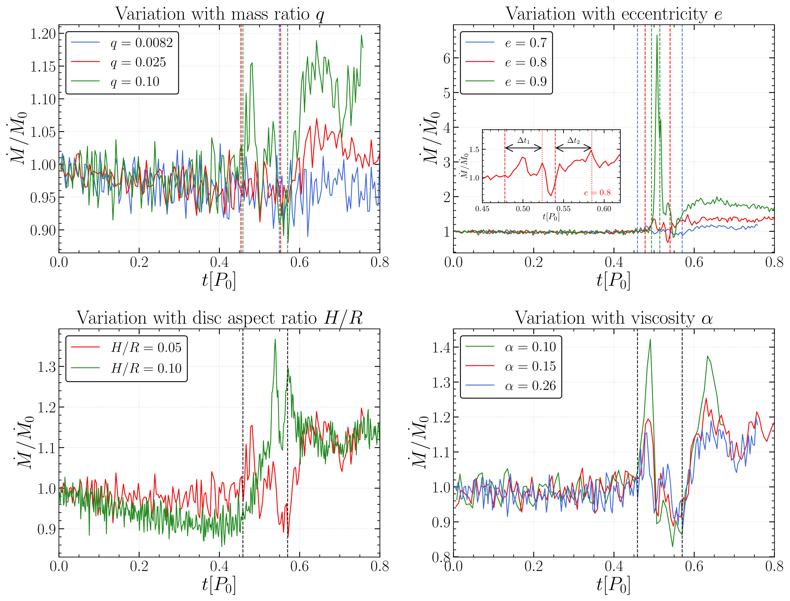
图注：Time evolution of the mass accretion rate onto the primary, normalized by the steady-state value $\dot{M}_0$ for the corresponding disc model. Time is expressed in units of the binary orbital period $P_0 = 2\pi$. The four panels show the dependence on (top-left) mass ratio $q$, (top-right) eccentricity $e$, (bottom-left) disc aspect ratio $H/R$, and (bottom-right) viscosity parameter $\alpha$. The vertical dashed lines indicate the times of the two mid-plane crossings of the secondary, with different colors corresponding to the different parameter values shown in each panel. The inset in the eccentricity panel zooms in on the $e=0.8$ model; the dotted vertical lines mark the corresponding post-crossing accretion peaks, and the horizontal arrows show the measured delays $\Delta t_1$ and $\Delta t_2$ from each crossing to the associated peak. Prior to the crossings, the accretion rate remains close to the steady-state value, while the interaction produces transient enhancements whose amplitude and temporal structure depend on the system parameters.
对应解读：对应“建议重点查看的图表”第1、3、4项，以及“关键图表逐图导读”中图3、图4、图5关于主黑洞吸积率、质量比门槛、偏心率、盘厚和黏滞性扫描的解读。
入选理由：这是本文最核心的定量图，直接给出主黑洞吸积率随时间的响应，并在四个面板中同时比较质量比q、偏心率e、盘厚H/R和黏滞参数alpha。图中还有两次穿盘时刻的竖线、偏心率面板中的峰值延迟标注，可直接检验日报强调的q≳0.1门槛、峰值相对穿盘的延迟、高e模型峰值和延迟变化，以及盘微物理对峰形的影响。
来源与置信度：\(arxiv_source\)；high；\(arxiv_source\) / oj287.tex:figure[4]
Fig05
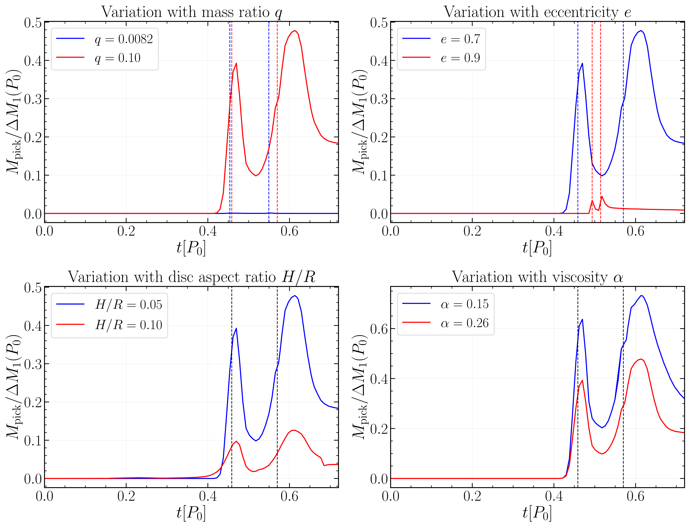
图注：Time evolution of the pickup mass associated with gas bound to the secondary, normalized by the total mass accreted onto the primary over one orbital period, $\Delta M_1(P_0)$. The four panels show the dependence on the binary mass ratio $q$ (top left), eccentricity $e$ (top right), disc aspect ratio $H/R$ (bottom left), and viscosity parameter $\alpha$ (bottom right). The vertical dashed lines mark the two disc-crossing times of the secondary for each model. In all cases, the pickup mass remains negligible prior to the first crossing and rises only after the secondary interacts with the disc. The strongest dependence is observed for the binary parameters $q$ and $e$, while variations with $H/R$ and $\alpha$ are comparatively modest.
对应解读：对应“建议重点查看的图表”第5项，以及“关键图表逐图导读”中图6关于次级黑洞拾取盘质量随时间演化的解读。
入选理由：该图直接展示束缚于次级黑洞的pickup mass随时间变化，并按q、e、H/R和alpha分面比较，是支撑‘次级黑洞可形成瞬态拾取盘’这一第二核心结论的关键证据。它能帮助读者判断拾取盘是否在穿盘后建立、对质量比和偏心率是否敏感，以及为何可在OJ 287标度下推导出10^2–10^3太阳质量的气体供给。
来源与置信度：\(arxiv_source\)；high；\(arxiv_source\) / oj287.tex:figure[5]
Fig03
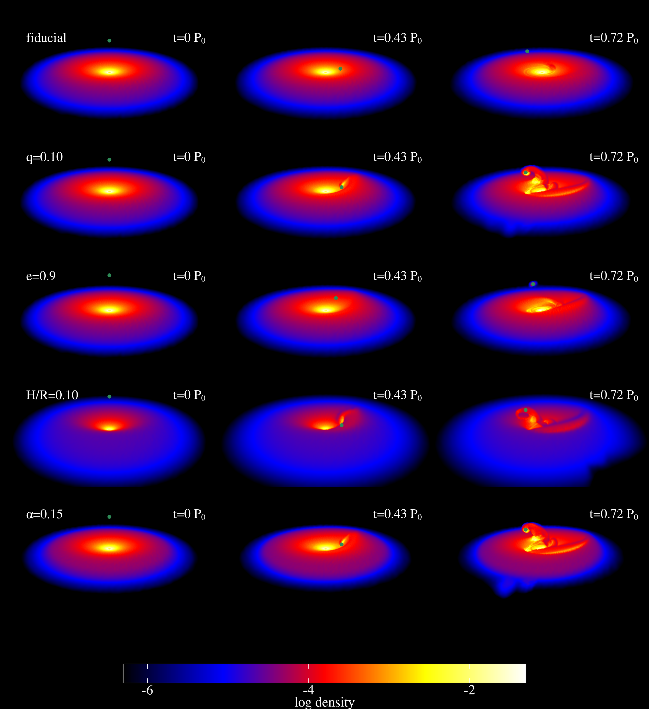
图注：Face-on column density maps showing the dependence of the disc morphology on binary and disc parameters. The first row shows the fiducial model (\(\texttt{sim1}\); $q=0.0082$, $e=0.7$, $H/R=0.05$, $\alpha=0.26$), while each subsequent row changes one parameter relative to the fiducial case: high-mass-ratio model (\(\texttt{sim3}\); $q=0.1$), high-eccentricity model (\(\texttt{sim5}\); $e=0.9$), thicker-disc model (\(\texttt{sim6}\); $H/R=0.10$), and lower-viscosity model (\(\texttt{sim8}\); $\alpha=0.15$). Unless explicitly stated in the row label, the remaining parameters are the same as in the fiducial model. The columns show the same evolutionary stages for each model: the initial relaxed state ($t=0$), just prior to the first mid-plane crossing ($t\simeq0.43\,P_0$), and shortly after the second mid-plane crossing ($t\simeq0.72\,P_0$). The green point marks the instantaneous position of the secondary black hole. The colour scale shows the logarithm of the column density. The figures are generated using SPLASH.
对应解读：对应“建议重点查看的图表”第2、3、4项，以及“关键图表逐图导读”中图2关于盘密度形态、不同q/e/H/R/alpha模型对比的解读。
入选理由：该图用面朝上的柱密度图系统比较了fiducial、高质量比、高偏心率、厚盘和低黏滞模型在不同演化阶段的盘形态，是连接定量吸积率曲线与流体形态变化的最佳图。相比单一模型演化图，它更能说明大q和高e如何改变尾迹、螺旋扰动和盘面结构，也能辅助理解Fig04中峰值差异的物理来源。
来源与置信度：\(arxiv_source\)；high；\(arxiv_source\) / oj287.tex:figure[3]
Fig02
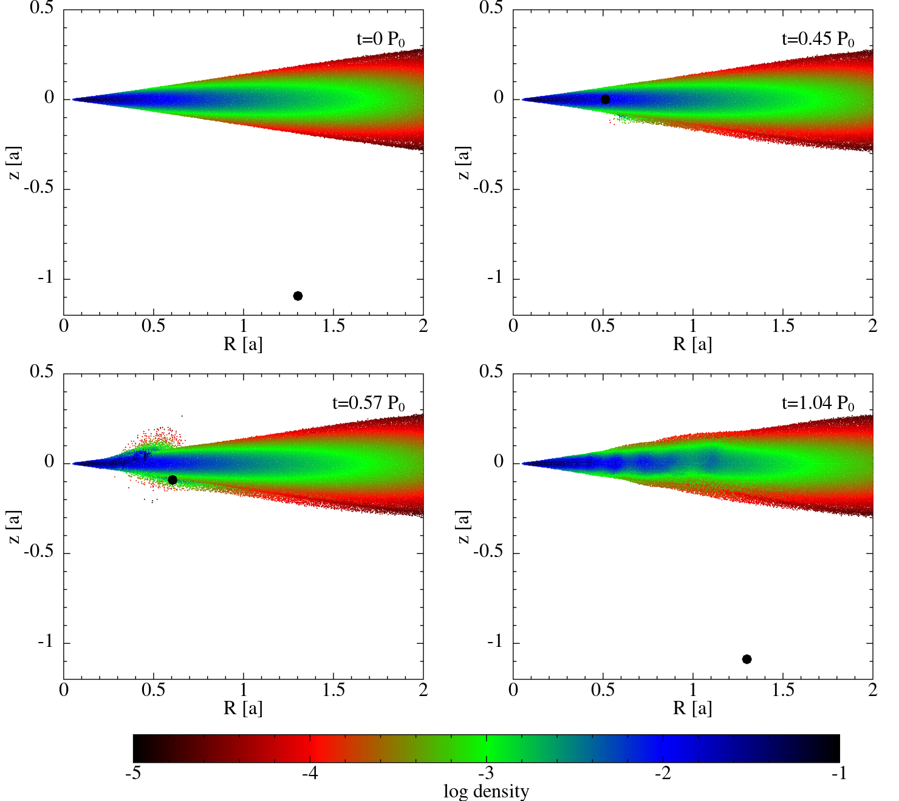
图注：Cylindrical $(R,z)$ particle distributions for the fiducial model, where each point represents an SPH particle colored by the logarithm of its density, and the black dot marks the position of the secondary black hole. The panels correspond to (top left) the relaxed disc at $t=0$; (top right) the first disc mid-plane crossing at $t \simeq 0.45\,P_0$, as the secondary passes from below to above the disc; (bottom left) the second mid-plane crossing at $t \simeq 0.57P_0$, as the secondary passes from above to below the disc, showing strong vertical splashing; and (bottom right) the subsequent evolution at $t \simeq 1.04\,P_0$, where displaced material begins to settle while perturbations propagate radially. These figures are generated using SPLASH.
对应解读：对应“建议重点查看的图表”第2项，以及“关键图表逐图导读”中图2关于穿盘几何、垂直飞溅和气体空间响应的解读。
入选理由：该图给出R-z截面粒子分布和密度着色，并标出次级黑洞位置，最适合展示穿盘导致的垂直splashing、盘外物质抬升和随后回落过程。日报中强调气体需被扰动后再回落到主黑洞附近，因此这张图比纯面密度图更能说明三维穿盘动力学和延迟吸积峰的几何来源。
来源与置信度：\(arxiv_source\)；high；\(arxiv_source\) / oj287.tex:figure[2]
Fig01
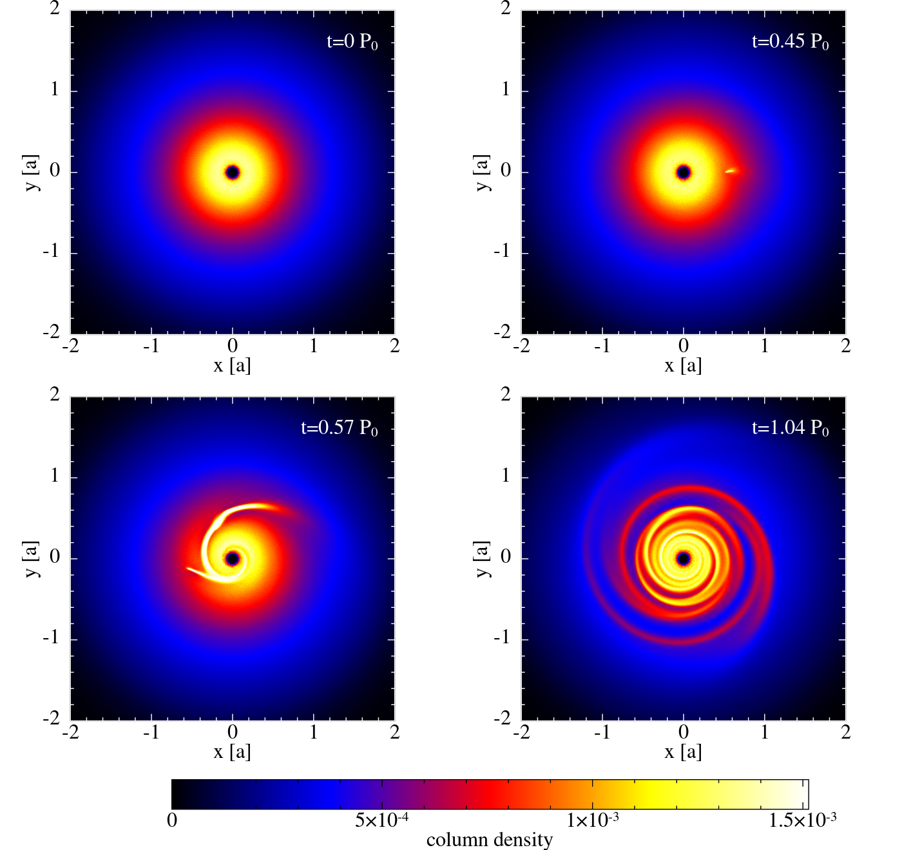
图注：Column density maps showing the morphological evolution of the disc during a single orbital passage of the secondary in the fiducial model. The panels show (top left) the relaxed, axisymmetric disc at $t=0$; (top right) the first mid-plane crossing at $t \simeq 0.45P_0$, when the secondary moves from below to above the disc; (bottom left) the second mid-plane crossing at $t \simeq 0.57P_0$, when the secondary moves from above to below the disc, characterized by prominent spiral density waves; and (bottom right) the subsequent propagation of spiral waves at $t \simeq 1.04\,P_0$. These figures are generated using SPLASH \(\citep{2007PASA...24..159P}.\)
对应解读：对应“关键图表逐图导读”中图1/图2关于fiducial模型盘面形态演化、两次中面穿越和螺旋密度波传播的说明。
入选理由：该图展示fiducial模型一次轨道通过中的柱密度演化，包含初始盘、第一次穿盘、第二次穿盘和后续螺旋波传播。虽然不如Fig03具有参数对比，也不如Fig04定量，但它能作为读者理解穿盘事件时序、盘面空洞/尾迹/螺旋波形成的基础视觉参考。
来源与置信度：\(arxiv_source\)；high；\(arxiv_source\) / oj287.tex:figure[1]
强相关工作
同一源背景方面，应把本文放在 OJ 287 双黑洞模型的长链条中阅读。早期工作用准周期爆发时刻建立穿盘双黑洞图像，后续研究加入相对论进动、轨道衰减和预测爆发时刻。本文与这些工作的关系是：它不主要重新拟合爆发年表，而是检查“穿盘是否真的能产生所需吸积响应”这个流体力学环节。检索关键词可用“\(\mathrm{OJ\ 287}\) binary black hole disk impact model”、“\(\mathrm{OJ\ 287}\) outburst timing”、“relativistic precession OJ 287”。
同类方法方面，本文与黑洞穿过吸积盘、双黑洞盘相互作用、Bondi--Hoyle 俘获和 SPH 吸积盘模拟有关。相反或互补观点包括：OJ 287 光变可能由喷流进动、盘不稳定、准周期红噪声或选择效应解释，而不一定需要唯一的双黑洞穿盘模型。检索关键词可用“supermassive black hole binary accretion disk crossing”、“disc impact flare hydrodynamics”、“pickup disk secondary black hole”、“OJ 287 jet precession alternative”。
同一事件 / 同类源线索：
- https://arxiv.org/abs/2607.08832
- https://ui.adsabs.harvard.edu/abs/1996ApJ...460..207L/abstract
- https://ui.adsabs.harvard.edu/abs/2008Natur.452..851V/abstract
- https://ui.adsabs.harvard.edu/abs/2016ApJ...819L..37V/abstract
相似工作：
- https://ui.adsabs.harvard.edu/abs/1996ApJ...460..207L/abstract
- https://ui.adsabs.harvard.edu/abs/2008Natur.452..851V/abstract
- https://ui.adsabs.harvard.edu/abs/2016ApJ...819L..37V/abstract
基础理论 / 方法工作：
- https://ui.adsabs.harvard.edu/abs/1973A%26A....24..337S/abstract
- https://ui.adsabs.harvard.edu/abs/1992ARA%26A..30..543M/abstract
相反观点 / 张力线索：
（未提供）
说明
评分由 LLM 给出初评，再由本地阈值策略过滤；IACT、TeV 伽马射线和高能中微子天文学按重点方向处理。